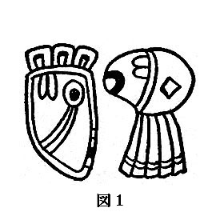

| [リン・カーター] レムリアン・サーガシリーズ6 | |
| リン・カーター | |
| (2015) | |
|
レムリアン・サーガ〈６〉
海賊と闘うゾンガー
リン・カーター
関口幸男 訳
|
著者ノート
オカルト学者によれば、地球における人類最初の文明は、およそ五十万年昔、太平洋の青海原にあった〈失われた大陸レムリア〉に発生した、とのことである。
この曙時代の諸王国──いまでは忘れ去られて久しく、古い伝説や古代神話の断片にごく、ごくあいまいにささやかれているにすぎない──のうちで最大のそれは、太陽の黄金の帝国であった。これは、レムリア大洗の表現にしたがえばシャムガムマ、つまり〝大連合〟である。わたしは、この単語を〝帝国〟と訳したが、その言葉の持つ一般的な意味とは実は似て非なるものである。太陽の黄金の帝国はどうやら、パタンガ王を大王としていただく自由都市の連合体であったようだ（ちなみに、初期サンスクリット語の語源は一部、古代レムリア語に由来していると信じる学者もいる。これは真実かもしれないし、そうではないかもしれないが、レムリア語のシャムガムマ、つまり〝大連合〟と、古代サンスクリットの、〝単位〟ないしは〝個体〟を意味するシャムガムとが類似している点は興味ぶかい）。
インドの『プラーナ聖詩書』のような有史前の伝説的叙事詩では、この太陽の黄金の帝国の礎えを築いたのが、わたしがゾンガーと呼んでいるところの、蛮族あがりの放浪者となっている。わたしは、かれの冒険史を本書『海賊と闘うゾンガー』を六冊めとする幻想小説シリーズにまとめあげた。
本書は、『時の果てに立つゾンガー』の三年後、すなわち人類紀元七〇二〇年の晩秋に起こった出来事を物語ったものである。
第一部 嵐つのる
「パタンガ湾の南、すなわち、パタンガ湾と南の大海、茫洋たる海原ヤシェングゼブ・チュンとの会するところに、岩よりなる大いなる岬ありて、そこに海賊の都タラクスが建設されてあり。そは、いっさいの秩序を知らずして、ただ黄金をむさぼり求めるばかりの、掟なき、血に飢えし冷酷無比なるやからの住みせし領域なり。いまだきたらぬいつの日にかここより危難招来し、西方の諸都市に暗雲投げかけむ。ゆえに、おお、ゾンガーよ、心せよ......警戒をおこたるなかれ」
──レムリアの魔法使
シャライシャの偉大なる書
１ 泣き叫ぶ水夫をのせた船
日の暮れしころ、妖異なる黒き船、
泣き叫ぶ水夫をのせて漂いてあり。
かれら、地獄を見て帰りきたりしか、
もはや正気なるものひとりとてなく......
六つの都市に君臨する偉大なるゾンガーの治世十二年めの秋の第三の月のことであった。ある日の日没のころ、一隻の船が、ゆるゆるとツァルゴルの港にはいってきた。
ほとんど夜の帳がおりようとしており、太陽は影がさしてきた西の空の端から端までを染めた濃い茜色の褥中で死にかけていた。紫色の夜の翼が地の果てに舞いあがり、世界を闇の経帷子で押しつつもうとしていた。黄昏の中で一番星が蒼白く、かすかにまたたいている。間もなく月の女神イラナが夜空に昇り、冷たくきらめく光を大地にくまなく降りそそぐであろう。だが、いまだ、燦然たる太陽の神アエディルが暮れなずむ西方のまっ赤な死の床から大空を支配していた。
赤い石造りの都ツァルゴルは、南の海の波濤打ち寄せる岸辺に栄えていた。高い塔と頑丈な城壁が外敵の侵攻をはばみ、壮大な宮殿と荘重な神殿とがこの海の都の富と力を誇示していた。おだやかな秋の日暮れどき、ツァルゴルの住民は、露台や豪奢な庭園でくつろぎ、石だたみの大通りをそぞろ歩いている。
船は忍びやかに港へはいってきた。
最初のうち、これに気づく者はほとんどいなかった。なにしろ、帆柱の上にも舳先にも明りひとつともっていなかったからだ。三段オールの大型ガリー船は、さながら移動する影のごとく黒い波を切ってゆるゆると滑るように進んだ。半島の堤を通りすぎ、人工の港を巨大な石の腕で抱えこむようにとりまいている壮大な防波堤の内側へはいった。
そのとき、ツァルゴルの城壁の高い見張塔に詰めていた目の鋭い見張りがこの、おもむろに進んでくる船に気づいて、警報を発した。
銅鑼が鳴りわたり、そこかしこに松明が燃えあがった。槍兵がてんでに燃え木を手にし、明りひとつともすでもなく旗を掲げるでもなくツァルゴルの港へあえて侵入してきた船がどこのものであるかを確認するために、波しぶきに濡れた石段を駆けくだっていった。
大型ガリー船は、おもむろに港を横断した。油断ない目、目、目がその航跡をたどり、たくましい手が槍や弓、大刀の柄を握りしめる。百人の戦士を指揮する百卒長たちは、待機する伝令にてきぱきと命令を伝達する。式部官がクローター獣にとびのると、脚の速い爬虫類のうろこにおおわれた脇腹を膝頭で蹴り、ツァルゴルの都の王カルム・カルヴスの館へと蹄の音も高らかに駆けすさっていく。
一隻の船の出現がこれほどまでに、都の住民を仰天させ、かれらの警戒心をかきたてたのも驚くにはあたらない。ここは南の沿岸地帯であり、この地帯の国々は、海賊の都タラクスの大胆不敵にして、貪欲な海賊を恐れていたからだ。これら海賊のばっこする海域で安全な船は一隻もなく、安心していられる港は一ヵ所もない。
この単独の大型ガリー船が、タラクスの恐るべき海賊船団の先発偵察隊であることも充分に考えられた。このあとに、豊かなツァルゴルの富を略奪せんものと血をたぎらせている残忍な海賊を満載した船が百隻も黒い流線型の船体をつらねていないともかぎらなかったのだ。
だが、ついに、闖入してきた大型ガリー船に僚船のないことがはっきりした。しかも、鋭敏な目で油断なく見張るツァルゴル兵はやがて、この船がなんらかの災難に見舞われたらしいことに気づいた。
というのも、三段の漕ぎ座にはほとんど漕ぎ手がついておらず、本来ならこの大型ガリー船をなめらかに、力づよく前進させているはずの櫂はいずれも海中につかり、後方へかたむいて、不規則に揺れていたからだ。わずかな櫂が動いていたが、その動きは力なく、ぶざまであった。船は、蟹の這うがごとく緩慢に移動し、ときおり、舳先がぶれ、横波を受けて船体が揺れた。
間もなく、別のツァルゴル兵が、船の帆が引き裂けていることに気づいた。一部はたたまれていたが、そのたたみかたがすべてまちがっており、きわめてぞんざいだった。港の三日月型をした岩壁からつきだす石造りの長い埠頭へ船が近づいてくるにつれて、舷墻は無惨に砕け、金色に塗った木の、つぶれ引き裂かれているのが認められた。舳先の大きな竜頭が壊れ、ななめに傾いていた。
さらに埠頭へ近づくにつれ、その大型ガリー船に乗りうつるべく待機していた衛兵たちの耳に、ぞっとするような音がかすかにきこえてきた。気味のわるい呻き声だった。高まっては低くなり、きく者の気力をくじくような無気味な泣き叫ぶ声であった。百卒長たちは、恐怖に目をむき、たがいに顔を見合わせた。
大破した黒い船の乗組員が虚ろな声で泣いている......。
そのとき、ひとりの若い百卒者は、大型ガリー船が停泊位置に停止すべく櫂を逆漕ぎする気配もなく、いぜんとしてよたよたと前進をつづけているのに気づいて、警告の叫び声を発した。
「舳先を変えよ──埠頭に気をつけるのだ！ 愚か者、逆漕ぎだ。そのままだと、埠頭に──」
かれの突然の叫び声も、石造りの埠頭に真正面から衝突してきた正体不明の大型船の軋み、木の砕け、裂けるすさまじい大音響にのみこまれてしまった。衝撃に花崗岩の埠頭が足下で震撼した。
船は傾き──酔払ったようにはすかいになり──停止した。帆の一枚が落下し、帆柱が無気味な軋みの音をあげると、樫材の裂ける耳をろうするばかりの音とともに裂け、倒れてきた。そして、あとは水を打ったように静まりかえった。
だが、乗組員はなおも、虚ろな泣き声をあげていた。悪魔の拷問に力つきてか弱くすすり泣く、地獄に落ちた亡者の呻きにも似たおぞましい、悲痛な泣き声の合唱。
槍兵の中には、蒼くなり、呪詛するものもいた。武器の槍をきつく握りしめるあまり、拳が白くなっていた。
この異様な黒い船の乗組員は狂人なのか？ あるいは、呪われた亡者を乗せ、地獄の赤いのどから人間界の海へただよいでてきたのか？日没の刻限に未知なる海の荒野よりただよいきたる無気味な船に乗りくむかれらは狂人なのか──はたまた、幽霊か？
玉砂利を蹴る蹄の音がひびき、港湾指揮官のカリム・プトレの姿が見えてきた。後方へなびく松明の火明りに黄金の兜がきらめいている。
「おい、そこの百卒長。部下を乗りうつらせ、ガリー船を拿捕せよ！おい、そこの者、埠頭で船体のなかばがつぶれぬうちに、舳先に縄をかけるんだ！部下を総動員して、急げ！」
十個中隊の司令官である、白髪まじりの千卒長が、クローター獣にうちまたがる港湾指揮官のそばへ歩み寄った。灰色のあご鬚をたくわえた指揮官は、右手の拳を胸に当て、すばやく敬礼した。
「あなたはどう思われます？」と、カリム・プトレはしゃがれ声でいった。「遭難したのか──あるいは、海賊にやられたのか？」
戦士たちが幾条もの引っかけ錨を投げかけて大型ガリー船の動きを封じ、縄を杭にゆわえつけ、てんでに長剣をかまえて船上になだれこんでいくのを、千卒長は、松明を避けるようにしてやぶにらみ気味に見やった。そして、ひと声うなり、つばを吐いた。
「タラクスの海の狼どもは、略奪したあとかならず船を沈める」と、かれは陰気にいった。「ひとたび真紅の旗が帆柱高く掲げられ、黒い船体が殺戮を求めて疾走すれば、かれらのかぎ爪を逃れられる者はめったにおらぬ。まったくのところ、これをいかように解釈したものやら、わたしには見当もつかない......おそらく、海の怪物がこのガリー船をおそい、食えないものは破壊したのであろうか？」
「あるいは」と、カリム・プトレはうなるようにいった。「しかし......それにしても、この船にはどことなく見おぼえがあるような気がします......この外形といい......舳先の彎曲ぐあいといい......以前に見たことがあると、断言してもよいほどです......」
「いや、そなたのいうとおりかも知れんな、指揮官」と、老千卒長はしみじみいった。「わたしも、この船には見おぼえがあるような気がする。あの後甲板の金具......舷墻の帯状に並ぶ、奔放にたわむれる金箔をかぶせた海豚の彫物......」
千卒長は、考えこむように目を細めた。
「しかし、あれが海軍の船でないことは、まちがいあるまい。あの竜骨からして商船でもないだろう。どこかの王家の御座船であろうか？あるいは、裕福な提督の娯楽用の船かも知れんな？」
クローター獣にまたがる港湾指揮官は、かぶりを振った。兜がきらりときらめいた。
「これを見ていると、〈ツァルゴルの宝冠号〉を思いだします」と、かれはつぶやくようにいった。「しかし、ご主君カルム・カルヴスさまは、三日前にあの船でヴォザシュパを公式訪問なされるためにお出かけになったばかりです。だから、〈ツァルゴルの宝冠号〉であるはずは──」
かれは、急にことばを切った。唐金色の顔が蒼白と化した。同じ瞬間、クローター獣にまたがる港湾指揮官のかたわらに立っていた千卒長は、ふかまる闇をとおして三段オール大型ガリー船の、裂け、砕けた舳先を凝視し、くぐもった恐怖の叫び声を発した。
その舳先には金の象形文字で船名が書きつらねてあったのだ。
ツァルゴルの宝冠号......。
＊
その謎のガリー船に一番乗りしたのは、青年百卒長のジョルン・ジャヴァスであった。かれは跳びあがると、縄の一本をつかみ、体をふりあげ、舷墻を越えて漕ぎ座へおりたった。そして、そこで目のあたりにしたものにギョッとなって立ちすくみ、恐怖と驚愕の喘ぎを洩らした。
漕ぎ座には一面に死体が横たわっていた。その血は折れた櫂をよごし、甲板いちめんに飛び散っていた。かれらは楽な死にかたをしていなかった。
百卒長は、さらに眸を凝らして暗闇の中ではっきりしない細部を見きわめようとした。かれは手をのばして、死骸をひっくりかえした。
鬚をはやし、日焼けした船乗りの顔がかれを見あげた。目をいっぱいに見張り、すさまじい目つきでにらみあげている。石けんの泡を思わせる泡が死んだ男の口辺に乾いてこびりついていた。ニッと笑っているような、うなっているような形に半開きとなって、そったままで凍りついている唇。
男の喉元が耳から耳まで引っ裂かれていた。そして、このために使った短剣が男自身の手に握りしめられていた。
ジョルン・ジャヴァスは、唇を一文字にむすび、けわしい顔つきで漕ぎ座を歩きまわって死人を調べてみた。ある者はみずからの手で死に、またある者は、仲間同士で果たしあって死んでいた。
かれは、ひとつの身の毛もよだつ光景から顔をそむけ、戦慄した。ふたりの水夫が組みあったまま、おたがいの喉元にがっぷり噛みついたままの格好で横たわっていたのだ......。
だが、みながみな死んでいたわけではない。まだ生きている者も何人かいた。かれらの姿はみるだにすさまじく、無惨な死にかたをした男たちの姿よりもなお凄惨であった。
かれらは、力なく漕ぎ座にすわり、櫂に両手をかけていた。そして、話しかけてくるジョルン・ジャヴァスを奇妙な様子でうかがい見た。ある者は泣き、またある者は気違いじみた笑い声をあげた。
かれは、男たちをひとりひとり見てまわった。血に汚れた顔、生気の失せた虚ろな目をし、洟をたらし、涎をしたたらせていた。かれらは狂っている、とジョルン・ジャヴァスは思った。この櫂に手をかけた、魂の脱け殻の男たちから、悲しげな声が高く、低く、高く、低く洩れていた。物悲しい鳴咽から瀕死のけもののそれを思わせる吠え声までさまざまであった。
ジョルン・ジャヴァスは若くはあったが、白い手をした駆けだしの新参者ではなく、練達のつわものであった。これまで大勢の敵を殺してきた。包囲戦、強襲、白兵戦と、戦の醜い面をいくたびとなく見ていた。死人も見てきたし、その数はわずかなものではない。武器で斃された男たち、拷問死した無惨な姿の男たち。
だが、そうした死骸の横たわる陰惨な光景も、この地獄から船出してきたとしか思えない黒い船の悪夢さながらの甲板上の光景ほどに、かれを激しく揺さぶったためしはなかった。
かれは、蒼くなった顔をそむけた。胸がわるくなった。耐えがたいほどに胸がわるくなった。やがて、気をとりなおすと、ふたたび船上を調べてまわった。
甲板という甲板に血だるまとなった死体がころがっていた。情けない泣き声をあげ、鳴咽する狂人もいた。
正常な心を失ったかれらは、どこかのやんごとないお方の楽しみのために装いを凝らした船に、激情のおもむくままに破壊の手をくわえていた。入口の扉は砕け、金欄は裂け、絹織り物の緞帳が人間の臓物で悪臭をはなっていた。
死骸がいたるところにころがっていた。隅に乱雑に積みかさなり、床に大の字になり、索具の山の上につっぷしていた。
少くともひとりの男は、狂気と最後まで闘ったらしかった。
真紅の大きな上着と金欄物とから、かれがこのガリー船の船長とわかった。その顔つき、全体の外見から経験ゆたかな船乗りであることがうかがえた。鬚につつまれ、引きしまったあごには、並々ならぬ力強さ、決断力、統率力がみなぎっており、すんだ眸、形のよいひたいには、育ちのよさと知性があらわれていた。
ジョルン・ジャヴァスは、かれを操舵輪のところで発見した。戦士の胴鎧からほぐした革紐で、みずからの身体を操舵輪にゆわえつけ、舵輪を自在に操れるようにきわめて巧みに固定していたのだ。いまでは血の気が失せて黒ずみ、脹れあがっている両手が舵輪の取っ手を握っている。そして、かれは舵輪にもたれかかり、首はガックリうなだれてあごを胸に埋めていた。
この男を注視していた若い百卒長の総身を純粋の恐怖が駆けぬけた......ジョルン・ジャヴァスは、かれを知っていたのだ！
だれあろう！ かれこそツァルゴル国の海軍大臣ノルゴヴァン・トゥルその人であったのだ！
しかし、ノルゴヴァン・トゥルは数日前に、ツァルゴルの君主カルム・カルヴス王の一行とともに船隊の旗船であり、王自身の持ち船であるツァルゴルの宝冠号でヴォザシュパへむけて出帆していた。
ツァルゴルの宝冠号は、この船とよく似た三段オールの大型ガリー船なのだった。だが、死骸と生ける屍を乗せた、血と破壊のあともなまなましい、おぞましいこの船が、三日前にヴォザシュパの王家を公式訪問するためにツァルゴル国王を乗せて船出していったあの、金箔をきせた堂々たる三段オールの大型ガリー船であるはずはなかった......いや、はたしてそうであろうか？
つのる懸念を目に浮かべ、若い百卒長は、甲板を見まわした。そして、心臓が喉元までとびあがるほど仰天した。後甲板の金具、舷墻の帯状につらなる、金箔をかぶせた海豚たちの彫物──かれの視線が大きな船室の扉へとんだ。そこに、長剣と錨をぶっちがいにした打ち出し模様があった。それはツァルゴル国の紋章であり、旗印であり、表象であったのだ。
その瞬間、恐るべき真相がすさまじい衝撃をともなってジョルン・ジャヴァスの心をおそった。
かれは定まらぬ足どりでふらふらと、死体の散乱する甲板をわたって船室のほうへ歩いていった。力ない、震える手で取っ手をまさぐった。彫刻をほどこした大扉がおもむろに開いた。ジョルン・ジャヴァスは、そこに発見するかも知れぬ光景におぞけをふるいながら室内をのぞいた......もし急激な狂気と不可解な死とが国王みずからの旗船の乗組員と将官たちをおそったとすれば、国王自身が殺戮の赤い手、ないしは狂気の白い手をまぬがれておられる可能性がありうるだろうか？
だが、船室には、人っ子ひとりいなかった。
百卒長は、室内の隅から隅まで探りまわったが、カルム・カルヴスの遺体を発見することはできなかった。
かれはゆっくりと、甲板へ、ノルゴヴァン・ト＄ルがみずからの身体をゆわえつけている操舵輪のところへ引き返していった。
ジョルン・ジャヴァスが最初死んでいるとばかり思っていた海軍大臣は、実際には死んでいなかった。老齢の男は頭をもたげると、汗と血にまみれたぞっとするような形相の顔を青年将校のほうへめぐらしたのだ。かれは、前へ垂れたもつれ髪ごしに憑かれたような表情の大きな眸でジョルン・ジャヴァスをうかがった。
「閣下......ご無事でいらっしゃいましたか？ いったい......ここでなにがあったのです？」
元気のないしゃがれ声でおもむろに返事がかえってきた。
「......灰色の死......灰色の死......」と、海軍大臣は呻くようにいった。
ジョルン・ジャヴァスは、老齢の男を操舵輪にゆわえつけている革紐を、かれの肌にふかく食いこみ、そこに無惨な傷あとを残している革紐を、長剣で断ち斬った。そして、甲板の一画に横たえると、かれの頭を膝にあてがい、腰にさげていた水筒の水を飲ませてやった。
「しかし、国王陛下は、われわれの君主カルム・カルヴスさまは、いかがなされました？」
ノルゴヴァン・トゥルは、ありったけの精魂をかたむけて狂気と闘ってきたのだ。鉄の忍耐力の最後のひと握りで必死に正気にしがみつきながら、果敢な老海軍大臣は、船首をめぐらし、故国の港へ船を誘導してきたのだった──想像を絶するばかりの超人的努力、忍耐力の行為といえよう。
三日間、狂気の悪魔に心を端からかじりとられながらも、王に忠実なこの老ツァルゴル人はまったき意志の力で、生き残ったわずかな水夫たちを駆りたて、櫂を漕がせてきたのだ。だが、その努力は仮借なくかれをむしばんでいた。いまは精魂つきはてていた。
かれの存在の中核部につかみかかり、引き裂こうとする、ぶんぶんうなる狂気の影に抗して、もはやかれは、理性の城砦にしがみついていることはできなくなったのだ。白痴さながらにあごをたるませ、ぞっとするような笑いを浮かべた。なにかに憑かれたような眸がぐるりと一回転した。
ジョルン・ジャヴァスは、激しくかれを揺さぶり、カルム・カルヴスの身になにがあったのか、かさねてきいた。だが、海軍大臣にいえたのはただのひとことであった。それを何度も何度もくりかえすのだった。
「いってしまった......いってしまった......いってしまった！」
ツァルゴル近衛隊のほかの将官たちが勇を鼓して、果敢な青年百卒長のあとから血みどろの甲板へあがってみると、ジョルン・ジャヴァスは、死骸の只中に腰をおとし、いぜんとして海軍大臣の頭を膝にのせたままでいた。海軍大臣は、身をのけぞらせ、首を振り、意味のないことばを発していたが、やがて、この悪夢の船上でまだ生きている他の狂人たちと同じように、魂の脱け殻のような泣き声をあげはじめた。
白髪まじりの老千卒長が、ジョルン・ジャヴァスの肩に手をかけた。青年将校は、泪に濡れた顔をあげ、上司を見つめた。
「大臣は、なにかおっしゃったか？」と、千卒長はきいた。「ご主君は、この船上におられるのか？」
青年は絶望的にかぶりを振った。
「お亡くなりになりました......亡くなられたのです」と、かれは力なくいった。
＊
カルム・カルヴス王なきあと、領国最高の貴族であり、最高の官職についている、アマガルの領主ドラト・ホルヴァン大法官が摂政として政権を担当することになった。
漂流船と、狂人、死者の乗組員の発見後、間をおかずして、ツァルゴル宮殿で緊急に重臣会議が開かれた。けわしい目つき、蒼白な顔つきをした貴族や軍の最高幹部連は、その夜の恐ろしい出来事と、それがもつ意味について討議をかさねた。
ツァルゴルの宝冠号は、船首から船尾まで隈なく捜索されたが、この異様にして不可解な悲劇の謎を解く手掛りはなにひとつつきとめられなかった。船上で発見された乗組員たちはといえば──しかも、その多くが失踪していたから、ごくわずかであったが──死ぬか、治る見込みのない狂人となっていた。死者からは、かれらがみずからの手で、あるいは狂った船乗り仲間におそわれるかして死んだということ以外、なにひとつわからなかった。生きている連中からも、なんらききだすことはできなかった。かれらは完全に理性を喪失し、まともに話すことができなかったのだ。
情けない声で泣き叫ぶ男たちの脈絡のないつぶやきからやっと引きだした唯一の情報の断片は、ただのひとことであり、かれらの多くがこれを何度もくりかえしていた──。
灰色の死......灰色の死......。
だが、この謎のことばがなにを意味するのか、だれにもわからなかった。もっとも、本当にこれになにか意味があり、たんに理性の縁から狂気の赤い混沌へ叩きこまれた男たちの無意味なたわごとではないとしての話だが。
大型ガリー船一隻の乗組員をひとり残らず狂気に駆りたてたものは、いったいなんなのか？カルム・カルヴスはどうなったのか？王は生きているのか、亡くなったのか？もし生きているとすれば、かれもまた、情けない声で泣きわめく狂人のひとりとなっているのか？
かれの姿は宝冠号にはなかった。定員いっぱいまでのせた乗組員の中の大勢の失踪者のひとりだったのである。重臣たちは、これらの失踪者がどうなったかについて検討した。もっとも論理的な結論は、いかんともしがたい狂気にとり憑かれたかれらが発作的に海中へとびこんだというものであった。
「宝冠号がヴォザシュパまで到らずに引き返してきたことはまちがいない」と、ドラト・ホルヴァンは、考えこむような口調で陰気にいった。「当地までの船旅は、順風満帆で少くとも七日を要する。しかも、ツァルゴルとヴォザシュパのあいだには、荒涼たる浜辺と森林におおわれた荒野以外になにもない。都はおろか、集落すらない。乗組員を狂気に追いやったものがなんであるにせよ、それは、かれらが公海を航行中におそったにちがいあるまい。われらの国王陛下が船上にあらせられなかったからには、ああ、ヤシェングゼブ・チュンの底知れぬ海中へ転落なされたか、あるいはおんみずから飛びこまれたものと結論せざるをえまいな......」
会議用の大円卓をかこむ重臣たちは、目を伏せ、黙りこくり、だれひとりこの臆測に異議を唱えようとはしなかった。ドラト・ホルヴァンは、眉根を寄せ、唇をきつく噛んだ。
「早急につきとめねばならぬことは、この悲劇が、未知なる海の数多くの謎にくわえられるべき苛酷なる自然の気まぐれによるものか、はたまたいまだ正体をさらさぬ奸智にたけた敵の、用意周到に計画した攻撃によるものなのかということだ。後者の可能性もなきにしもあらずだな。なんとなれば──」
かれの声がささやきにまで落ちた。
「──魔法は、かかる恐るべき結果をもたらしうるものであるからだ」
重臣会議がほとんどいつもそうであるように、今回の会議もなんら確定的な結論のでぬままにおわった。しかし、ツァルゴル全土に戒厳令がしかれ、城門や大通りの塔の頂上や壁の上で衛兵が鋭い目を光らせ、敵の出現したごくかすかなしるしも見逃すまいと四六時中警戒にあたっていた。これが侵攻の序幕である場合にそなえて、臨海の赤い城壁の都は武装をととのえ、臨戦態勢をしいて待機していたのだった。
そして、暁の最初の曙光が射すころ、壮大なツァルゴル宮殿の、パタンガ空軍分遣隊が駐屯する飛行艇発着場から、小さな艇室に操縦士と王国の式部官を乗せた一艘の飛行艇が飛びたった。
流線型の小型飛行艇は、暁の大空へ舞いあがると、不眠の都の上空を一度旋回して、北東の方角へ針路をとった。艇は、西方の世界の君主たる強者ゾンガーに報告すべきカルム・カルヴス逝去の知らせをたずさえて、早朝のすんだ大空を銀の矢のように突進していった。
２ 黒鷹の金環
苛酷なる黒き未知なる運命が
豪胆の人カルム・カルヴスを打ちて、
しこうしてかれ、竜のばっこせし海底の、
人の目の届かぬ名もなき墓場へ去りしか？
灰色の死におそわれて、なかば難破した大型ガリー船がよろめくようにしてツァルゴルの港へはいってきた翌日の真夜中近くに、この赤い石造りの都の幾マイルも北東にある港へ二隻めの船がはいった。
ここ、パタンガ湾の最深部、双子河の河口には大いなるパタンガの都──強者ゾンガーが君臨する、西方の九つの都市で最強の都がひらけていた。
だが、この二隻めの船は、王の娯楽のために贅をつくして飾りたて、金箔をきせた堂々たる三段オールの大型ガリー船ではなかった。すらりとした黒い船体の、長くて低い、脚の速い船であった。緋色の帆に強風をはらみ、するどい舳先で波を斬り、無気味な黒い快速船は音もなく疾走した。そして、船上には、情けない声で泣きわめく狂人ではなく、正気の男たちが乗り組んでいた。
かれらは、舷墻に群れ集まって、月光に浮かびあがる栄光の都パタンガをうかがっているのだった。
航空警備隊の一隊長が、この細長く黒いガリー船が港へすべるようにはいってくるのを認めた。黒い船体のいずこにも、信号用の明りひとつ灯っていなかった。どことなく海賊船を思わせるものがある。飛行艇は旋回しつつ、パタンガの中心部、大広場の東側にそそりたつ航空監視塔の頂上に詰める警備兵に信号灯で合図をおくった。
喇叭が鳴りわたり、伝令がクローター獣を駆って広いトリアン公道を疾駆し、警報をつたえるべく海門へと急行していく。
かくて、ほっそりとした黒いガリー船が船だまりへ接近したころには、炎を風下へなびかせた松明の火明りのもと、きびしい顔つきをしたパタンガ弓射隊の一個中隊の半分が戦闘態勢をしいて待機していた。中隊の百卒長が前へ踏みだし、この真夜中に海から闖入してきた国籍不明の黒船にむかって呼びかけた。
「おい、そこの黒船！ どこのものだ、港と主人の名を名のれ！」
舷墻に顔、顔、顔が並んでいた。西方の諸都市のなかばから寄せ集めた下層階級のならず者ばかりだ。ひたいにはでな布を巻いた、月のように丸い顔つきの太ったコヴィア人がひとり。褐色の肌、黒い髪をしたトゥラン人、琥珀色の肌に、黄褐色の目をしたカドルナ人。果てしもなく広がる東方の平原地帯からやってきた巨人種族の青い皮膚をした連牧民もひとりいた。
この船の乗組員は、寄せ集めの無頼漢からなっているようだった。かれらは、宝石や安ピカの飾り物を満艦飾に飾りたてていた。刀傷のある者、追放されたことを示す刺青をしている者もいた。そして、飾帯や腰帯に多数の武器をおびていた。
そのとき、大きな手がかれらを押しわけ、空間をつくった。そこにあらわれいでたのは、赤鬚の雲つくような巨大漢であった。ひたいに鮮紅色の布を巻き、暗緑色の半ズボンを着け、黒革の大きな長靴をはき、宝石を嵌めこんだ太い腰帯をしめていた。裸の胸には、金色の剛い縮れ毛が密生し、太い眉の下には灰色の目が冷たい炎を燃えたたせてギラギラ光っていた。厚い胸板、広い肩、こぶだらけの樫の木の枝を思わせる、筋肉のうねり盛りあがる四肢をした雄牛さながらの男であった。
「こいつは、タラクスの港を船出したシミター号だ」と、かれは咆えるようにいった。「そしておれは、こいつの主人で赤鬚のバリムという」
青年百卒長はあごを引きしめた。
「タラクスの海賊は、火の都で歓迎されることはない。なにゆえあって、卑劣きわまる盗賊のごとく夜陰に乗じてわれらが港へ忍びいった？」
赤鬚のバリムは、炎と燃える鬚の奥に酷い歯並みをきらめかせてニヤリと笑った。
「おれの用向きを知る人間が少ければ少いほどよいのだ、若いの！だが、おれはまちがいなく火の都で歓迎を受けるぞ。ほれ──受けとれ！」
かれは、腰帯からなにか小さな物をとりはずすと、放ってよこした。それは、松明の火明りをあびて金色の輝きを発した。若い百卒長は、宙を飛ぶその物を手際よくつかみとり、ひっくりかえすと、好奇の眼差で見つめた。
それは、ずしりと重い金環であった。環の斜面に南方系の字体でふたつの象形文字がふかく刻まれてあった。このふたつの象形文字は、カ・トンおよびゴル・ヤーと呼ばれ、つぎのようであった──。
（ 図１ ）

百卒長は、驚愕して目をしばたたいた。目の前にある、まぎれもない証拠を信じることができなかった。
船上の舷墻にもたれかかる巨大漢の赤鬚が、若い百卒長の反応に含み笑いした。
「ゾンガー王！」と、青年将校は喘ぐようにいった。
「そうだとも」海賊はニヤリと笑った。「正真正銘、パタンガの金環に刻まれた君主ゾンガーの名前だ。そいつは、偉大なる王みずからがおれにくれたものだ。そして、おれがかれと話す必要が生じたさい、海門でそいつを見せれば、おれはすみやかにかれの前へまかりいでられるということだった」
百卒長は途方に暮れた。こうした金環──六つの都の君主の名前を刻印した畏れ多い金環は十個しかなかった。それらをおびているのは王と公子たち、すなわち黒鷹旗に敬意を表する最高級の貴人のみであった。これらの金環はいわば符牒であり、これを提示すればいつなんどきでもただちにゾンガー自身に謁見が許されることになっていた。
青年百卒長は、姿勢をただし、ニヤニヤ笑っている海賊がまるで帝国の一公子ででもあるかのごとく、敬礼をした。
「あなたは、ゾンガー王の印形を所持しておられ、したがって本官は、あなたの命令にしたがいます。おいでください、本官が西方の君主の御前へお連れしましょう......」
バリムは、豪奢な館をこれまでにいくらも見ていた。物珍しげに立ちどまって、きらめく大理石や風にはためく黄金色の旌旗を眺めたり、星々を散りばめた夜空に伸びあがる壮大な塔を見あげたりはしなかった。
しかし、宮殿の正門に立ってニヤニヤ笑い、かれを迎えようと両手を拡げている少年を認めたとき、赤鬚は目を丸くして歩みをとめた。
「坊ず、おまえなのか？ えらく大きく、伸びたな。あの小さな船乗り仲間がこんな大きな、りっぱな若者になりおって、おれはよっぽど見まちがえるところだった！」と、かれは驚きいった口調でいった。
タル王子は、明るい笑い声をあげた。
「むろん余は成長したとも、バリム船長──玉座簒奪を企んだダレンドゥス・ヴールからチャルン・トゥヴィスが余を奪い返し、そなたがわれわれを助けてくれ、ともに航海したときから三年もたっているんだ、そうであろう。再会できて、実に欣快だ！それにしても、このようなお忍びで、しかも夜間に余の父上の都へやってまいったのはなにゆえだ？」
赤鬚は真剣な口調になった。
「憂うつな用向きでだよ、坊ず、不吉な、いやらしい用向きでだ。ま、そんなことより、おまえ、ここにいる古い船乗り仲間を憶えておるだろうな、きっと......」
シミター号の水夫たちがバリムの背後から歩みでてき、愛想のよい笑みを浮かべてゾンガーの子息をとりかこんだ。
「そなた、まだ太っちょのブレイを憶えていてくれると思うが」巨大な太鼓腹にしめた太い革帯に多数の短剣をたばさんでいる、月のように丸い陽気な顔つきをしたコヴィア人がぜいぜい声でいった。
「それに、ドゥルガン爺さんもな！」片方の目の上に黒い眼帯をつけた、痩せさらばえた老海賊が哀れっぽい声でいった。
「むろんだとも──それに、タングマルもな！」長い金髪を縄様に編んで背にたらしている、コダンガの赤い森林地帯出身のニヤニヤ笑っている巨人の姿をとらえて、少年タルは得意気にいった。「そなたたちみんなに再会できたとは、こんなうれしいことはない。そなたたちは少しも変わっていないな！」
「だが、おまえは変わったぞ、うん。よく見せてくれ」バリムはうなるようにいうと、少年を片腕に抱きとめた。
タルは、かれの記憶する九歳の腕白小僧から十二歳の強くたくましい長身の少年に成長していた。引きしまった唐金色の身体は、年齢のわりには筋肉がよく発達しており、しなやかで頑健だった。おとがいの張った顔、異様な光を放つ黄色味をおびた目、一度も刈ったことのない黒い長髪、どこからどこまで偉大な王の父親そっくりであった。
船長は、タルの髪をかきみだし、かれの背をいつくしむように叩いた。
「あのときはまだ、ほんの子供だった──それがどうだ、りっぱな若者になりおって。一人前の男になるのも、もう間近だ！ところで、この三年間おまえは、予言者の術を磨いておったのか？ここでおれたちを待っていたようだが、これはどうしたことだ？」
「伝令が駆けつけて、そなたたちのやってまいることを報告してくれたのだ」と、タル王子はいった。
それからかれも真剣な面持ちになった。
「そうだ、忘れていた──中でみんながそなたを待っている──そなた、父上の友のカルム・カルヴスのことでなにか話があるのであろう？」
バリムは、怪訝な顔つきをし、かぶりを振った。
「ツァルゴルの王？ おどかさんでくれよ、かれのことはおれはなにも知らん。おれが君主ゾンガーに話があるというのは、ほかの用件でだ」
「まあよい。父上は、そなたが到着しだいとおすようにといわれている。くるがいい、余が案内しよう......」
＊
百人の王の広間は広大で、濃い翳につつまれていた。巨大な円柱が幾本も伸びあがり、はるか頭上で穹状の屋根を支えている。大広間の床は、みがきあげた黒と黄金色の四角い大理石が敷きつめてあった。
ゾンガー直轄の精鋭部隊、かの有名なる黒竜隊の、黒革の胴鎧と黄金の兜に身をかためた衛兵が、大広間の端から端まで等間隔に居並び、微動もやらずに立っていた。おとなの背丈ほどもある大きな枝状燭台の放つ強烈な光に衛兵たちのもつ、紋章をおびた、磨きのかかった楯が輝き、つややかな兜、槍の穂先がきらめいていた。
壮大な丸天井の円形の周辺部に、設置された石造りの顔、顔、顔がじっと考えこむようにして、眼下の緊張した場面を見おろしていた。その大理石造りの顔のあるものは鬚をたくわえ、王の威厳をたたえており、またあるものは、数々の勲業に輝く軍人らしい精悍な容貌をしていた。
パタンガの百人の王たちの石造りの似顔は、荘厳華麗な王宮に君臨するかれらの後継者──君主ゾンガーその人を見おろしていた。
パタンガの火の玉座は、炎の色をした金箔がきせてあった。その玉座の装飾もまた炎を形どっており、高い背もたれはゆらめき立ち昇る、先端のとがった炎を思わせた。九段重ねの黒大理石の高壇の上に火の玉座はすえてあり、そこにゾンガーが鎮座していた。
かれは、獅子さながらの堂々たる体躯をしていた。広い肩幅、厚い胸板、全身に野蛮な剣闘士を彷彿させるたくましい筋肉が波打っていた。唐金色のいかめしい顔はまったくの無表情であったが、太くけわしい黒い眉の下の、異様な光を放つ金色の眸は獅子のそれのように爛々と燃えたっていた。
かれは、壮麗な黒い天鵞絨の長衣を羽織っていた。胸には、かれの生まれ故郷である野蛮な北国の、ヴァルカルトの黒鷹の紋章をおびた金色の楯が縫いつけてあった。
むきだしの太股の上に、かれが赤い径を切り開きつつ西方の玉座へのぼりつめるまでに使ってきたヴァルカルトの広刃の大刀が横たえてあった。古代の前サンスクリット語で書かれた『プラーナ聖詩書』では、この大刃をサルコザン──すなわち、王のつくり手と称している。
梳 ったことのない、肩のあたりまで垂れる剛い黒髪を押えて、ひたいの上に火の王冠をつけていた。王冠の上部の波打つ各先端部には、王冠そのものの火と燃える黄金色によく合った、レムリアの珍しい宝石、だいだい色がかった黄金色の大粒のカンドラルがきらめいていた。
今宵ゾンガーは、長時間にわたる重臣会議にのぞんでいた。辛辣な皮肉で知られる典雅な貴公子ドルウ、豪胆をもってなるマエル大公、老貴族のセルヴェルス卿、そしてエオドリム大祭司──かれらが顔をそろえており、さらに軍の最高幹部である、黒竜隊の司令官ザド・コミスと空軍司令官のトーム・ペルヴィスが出席していた。
また、かれらとともに、戦闘用の胴鎧に身をかためたそびえるばかりの、青い皮膚のつや光りする巨人種族ルモアハルの戦士、そのとなりに黒竜隊の黒革の鎧をつけた引きしまったしなやかな身体つき、なめらかな黒髪、油断のない知性的な目をした若いトゥラン人がいた。このふたりは、遊牧民イエガ族のシャンゴトと青年戦士のチャルン・トゥヴィスであった。
事実、ここには絶世の美女であるスミア王妃をのぞいて、パタンガのおもだった面々が全員顔をそろえていた。スミアの場合、母親としての役目がすべての国事に優先していた。というのも、一年たらず前に王妃には姫が誕生していたのであり、赤児──この小さな王女はスミアの母君の名前にちなんでザンダルラと名づけられていた──の世話に十全の注意が払われねばならなかったからだ。
タル王子の案内で大広間にどやどやとはいりこんできた赤鬚のバリムとその手下たちにまっ先に気づいたのは、青年戦士の貴族チャルン・トゥヴィスであった。というのも、三年前、奸計をめぐらすダレンドゥス・ヴールの毒手からタル王子が逃れるのを助勢したのがかれであったからだ。ふたりは、くしくもシミター号に難を逃れ、その乗組員と友誼を交わしあうようになっていたのだ。
火の玉座につくゾンガーは、いかめしい眉をひそめ、きびしくむすんだあごを片方の拳にあてがって、かれの旧い盟友のひとりであるカルム・カルヴスにまつわる謎についてとつおいつ考えめぐらしていた。そして、赤鬚のバリムが玉座へ近づいてくるいま、かれの眉根がなごみ、暗い容貌がめったにない笑みに輝いた。
「赤鬚──ゴルムの神とすべての神々にかけて、よく参った！」
かれはよくひびく声でいうと、玉座から立ちあがり、段々をおりて、ニヤニヤ笑っている海賊のたくましい肩に片手をかけた。
「深海の竜どもはいまだ、シミター号の黒い船体をぶち壊していないとみえるな──そなたに会えて、じつに欣快だ、バリム！」
ひとわたりの紹介がおこなわれた。近習が急がしげに、パリムとその手下たちのために椅子と冷やしたワインを運んできた。
「われわれは、おそくまで重臣会議をもち、わたしの盟友であるツァルゴル王の運命について話しあっていたのだ」海賊たちがゆっくりと落ち着くと、ゾンガーはいった。「シミター号がひそかにわたしの港へはいってきたとの報告が埠頭よりもたらされとき、わたしは、そなたがかれの失踪の謎に光明を投げかけてくれるような情報をもってきてくれたのだと思ったが」
バリムは、火と燃える髪を揺すった。
「おお、君主、おれがこの件についてはじめて耳にしたのは、あの坊ずからですよ」
ここで、かれははでに咳払いをした。
「つまり、そのう、あなたのご子息の若い王子からということです。おれがやってまいったのはべつの用件でして、これがまた異様で、不吉な知らせです......しかし、とにかくこのツァルゴルの件について話をうかがってから、気がおもいですが、おれの話をすることにしましょう」
ゾンガーは、海でカルム・カルヴスにふりかかった不可思議な運命に関してごくわずかながらわかっていることを、表情ひとつ変えずに簡潔に説明した。赤鬚のバリムは驚いた様子で、ゾンガーの説明の中の一句を絞りだすようにして口にした。
「灰色の死ですと？ああ、神々にかけて、おれはじつによいときにやってまいりましたよ」と、かれは野太い声でいった。
太っちょのブレイ、痩せさらばえたドゥルガン爺さん、巨大漢のタングマルがひそひそささやきあった。
ゾンガーは、赤鬚のことばの意味を問いただした。
「その灰色の死というやつは、すでに始まっていたんですよ。おれが知っていることをここで打ち明けるのをこれ以上、引きのばすのはよくありませんな。まさか世間じゃおれのことを商人として通してはくれませんからね。そうしてくれりゃ、もう何日か前にここへやってこれました。そうだとあなたの友人のカルヴスは助かっていたかも知れんのです！」
「くわしく説明してくれ」と、ゾンガーはぶっきらぼうにいった。
「かしこまりました、ゾンガー王。この世にゃじつにたちのよくない野郎がおりまして......」
かれは、高貴な面々が耳をそばだてている前で、船乗り独得の呪詛をいたるところにまじえながら、荒っぽいことばづかいで世にも不思議な、恐ろしい話を打ち明けたのだった。
＊
パタンガ湾の入口から南の大海ヤシェンダゼブ・チュンに突きだす、岩よりなる岬の突端部の、難攻不落の城塞を根城に、タラクスの大胆不敵な海賊団は、半世紀にわたって海にばっこし、略奪をほしいままにしてきた。
快速の、恐るべき海賊船隊は、タラクスをして海の支配者となさしめた。やがて、この掟なき国の、海をゆくならず者の集団はいよいよ大胆となり、傍若無人ぶりを発揮するようになり、快速の黒船を駆って報復を恐れることもなく南方の都を片っぱしから襲撃し、港を略奪した。
かれらは、鮫のごとく黒い細身の船体をきらめかせて接近し、稲妻さながらにおそいかかり、殺戮をほしいままにして──そして、脚ののろい海軍の船が追跡できないでいるうちに難攻不落の海賊の都タラクスへ悠々と引き揚げていくのだ。
むろんゾンガーは、こうしたことを二十年近くも昔、放浪の冒険者であったころからよく知っていた。偶然か運命か、またまた天の配慮によるものか、こうして西方の最高の玉座につくこととなったはるか昔のこと、かれは、タラクスの海の狼の群れに身を投じていたことがあった。
大胆不敵のヴァルカルト人は、赤い兄弟の一船長として、かれの帆船黒鷹号を駆ってタラクスから船出し、外洋を荒しまわって黄金、財宝、酒と、手あたりしだいに略奪した。
あの荒々しい、掟なき日々から、正確には十八年の歳月が過ぎ去っていた。海賊の都は、あれ以来繁栄の道を着実に歩んできた。
ひとりの野蛮で野心に満ちた指導者が現われて、海賊たちを新手の極悪非道に駆りたてたのだ──人々は、その指導者をタラクスの赤い狼カシュタルと呼んでいた。たんなる富、黄金だけでは、かれのあくなき欲望を満たすに充分ではなかった......カシュタルは、玉座を、王国を──帝国を掌中にしようとしていたのだ！
ゾンガーは、いかめしい眉をひそめてバリムが話しおえるまでじっときいていた。
「この反逆者の魔道師ベルシャトラがタラクスに難を逃れたとき、カシュタルは、おのれの権力欲を満足させる手段をめっけたということになるわけです」と、バリムはうなるようにいった。「この魔法使は埋没した都──永劫の昔に、世界にたいしてなにやら大罪をおかしたというんで神々に押しつぶされ、踏みにじられ、地下へ埋めこまれた都です──のあるニアンガの荒廃地からやってきたんです。しかも、やつは、なにやら黒い秘密──あるニアンガ人の墓から盗みだした、たぶん、呪われた都の瓦礫の下から掘りだしたんでしょう、大地の曙時代からあるなにやら無気味な武器をもちこんできました。それがなんであるにせよ、これで赤い狼はいままでにもまして大胆となり、貪欲なやつの狙いの中でも最大の狙い......」
かれは、ささやき声にまで声を落とした。きき手たちは、かれのつぎなることばをききとろうといっせいに身をのりだした。
「......パタンガそのものと張りあって、これを掌中にせんものと決心したんです」
怒り、驚愕、否定の叫びがひびきわたった。ザド・コミスが語気するどく、吐きすてるようにいった。
「気ちがい沙汰だ！ なるほど、海賊の群れが強力な船隊を擁していることは確かです──が、この世で最強最大の都をむこうにまわす？これはまさしく気ちがい沙汰以外のなにものでもありません！万にひとつも、やつらに成功する望みのあるわけがない」
空軍司令官である、白髪まじりのトーム・ペルヴィスが、これに同意をしめした。
「われらは無敵であります、陛下！ いかに強力なる船隊であろうと、若き賢人イオトンドゥスの完成した雷電銃を装備するわが飛行艇隊にたちうちできるものではありません！」
ゾンガー腹心の重臣のひとりであるマエル大公がこれを認めて、うなるようにいった。
「陛下、十一年か二年昔に、われらがイエリム・ペロヴィスの軍勢を撃破し、若きカルム・カルヴスを玉座につかせましたさいのツァルゴルの戦いにおいても、このことは実証されております。飛行艇隊を擁するわれらは無敵です。在来型の戦力では──いかに強力な船隊、多勢の兵力であったにしましても──われらの空の戦力に無力同然でしょう」
ゾンガーは無表情だった。異様な光を放つ黄味をおびた目が注意力を集中し、物思いに耽っている様子だった。
「わたしは、わが軍勢が無敵であることを口にする前に」と、かれはうなるようにいった。「この武器なるものについて、もっと詳しく知りたい」
３ 灰色の魔道師
いまや人生の絶頂にありて、ゾンガー
世界の諸侯にその権勢をおよぼしぬ。
しこうして、かれの力満ちたるいまの世にありて、
レムリア広しといえども
この世界の西方の君主に刃向う
力をもちし王のひとりとてあらず。
太陽の神アエディルがパタンガの空高く昇り、大地の隅々にまで朝の光が満ちわたった。
夜が明けて間もなく、ゾンガーと重臣たちは、二度めの会議をもった。夜明けとともに大祭司は、都の中心部の中央広場にそそりたつ僧侶の館にかれらに集まってもらうべく使者をおくりだしていたのだった。
その夜エオドリム大祭司は、夜を徹してボロボロになった巻物や古書をあさりまわって、失われたニアンガの英知に関する手掛かりを、時の曙から存在するというその無気味なる武器がいかなるものであるかを暗示するなにかを探し求めた。
ゾンガーをはじめ、重臣たちは、エオドリム大祭司の広大な図書館、天井の高い広い部屋に集まった。四周の壁を大冊の無数の書物がおおいつくしている。あるものは、象形文字を連らねた鞣皮のページを、彫刻をほどこした木あるいは象牙の薄板で装丁した書物であり、またあるものは、金属インクで食刻した翼竜の皮の巻物であった。さらには、鉄の掛け金で封じられた、皺の寄った黄色い子牛皮紙の書物も多数並んでいた。
この静かな部屋には一千の時代の英知が眠っていた。
一睡もせずに夜を明したために疲労の色の濃い、華奢な身体つきの老大祭司は、木彫りの黒い大椅子にすわってかれらを迎えた。かれの前には、一冊の大書を開いてのせた書見台が引き寄せてあった。
このとほうもなく大型の書物のページは、強烈な酸で処理した金属の薄板であり、したがって時の侵略にもびくともしないのである。
「これはこれは、陛下、それに重臣の方々」と、老大祭司は疲れきったか弱い声でいった。「わざわざお越しいただいたのは、ほかでもありません、ツァルゴル王の失踪とこのニアンガの魔道師の不吉なる脅威の両者についてわたくしがつきとめましたいくつかのことをお話しするためです」
かれは、目の前の書見台に広げておいてある大書の上に華奢な手をかけた。
「これは、『レムリア年代記』として知られるかの偉大なる記録の書です」と、かれはいった。「この書物のいくばくかについては、これまでにおききになったことがおありと思います。なんとなれば、これはあらゆる時代を通じてもっとも偉大なる書物だからです。西方にいまだ実在するのは、わたしの所蔵するこの一冊のみであり、わたしはこの中で、古代の数々の恐怖に関するある妖異にして模糊とした物語を見つけました......」
＊
老大祭司は、疲れきったかぼそい声で異様な物語をかたった。ゾンガーをはじめ重臣たちは、じっときき入っていた。
かれの話は、はるかな昔はるかな国の、だれ知る者もない秘密の僧院に住んでいた聖人たちの集団......プノトの兄弟として知られる神秘的な兄弟に関するものであった。
人類最初の王国、七つの都が東方に栄えた時代から代々、これらの賢人たる予言者たちは、アカーシ術と呼ばれる困難な精神修養法によって〈永劫〉の果てしない広がりを探索してきた。かれらは、過去、現在、未来とふかく探究したのであり、その神秘な探究の所産が、この最古の書物に書きしるされてあるところの、宇宙の歴史の膨大な要約であったのだ。
「プノトの兄弟は、時のすべてをただひとつの永遠の闘いの歴史と見ており、かれらはこれを〈混沌界と創造界の闘争〉と名づけております」と、大祭司はささやくようにいった。「創造界の辺境のかなたに横たわる、渦巻き騒ぐ暗い混沌界にあっては、破壊と滅亡の不吉な力がつねに、宇宙を消滅させようと働きかけています......創造界の神々ですら、創造界を守護するために混沌界と闘っています......そして、この永遠の闘争は、記憶にもとどめられぬ永却の歳月にわたって幾多の世界で闘われてきました。
天界の諸惑星は、われわれのこの世界とひじょうによく似た世界であり、これらの惑星のいくつかには生命が存在していると、聖人たちはいっております。かつてザルカンドゥと呼ばれる世界があり、混沌界の邪神は、そこに強大な〈子〉をもうけました。その失われた時の世界の王や英雄たちは、みずからの建設した帝国を守護すべく闘いました。そして、かれらは勝利をおさめ、混沌界の悪魔の〈子〉を滅ぼしましたが、最終的には黒い力が勝ち、その世界はすっかり死滅してしまったのです。いまでは、道なき宇宙の深淵に凍りついた瓦礫がその跡をとどめているにすぎません。永遠なる闘争の闘いは敗れたのです......さらにまた、われわれがイリダルと呼んでいるところのべつの世界にあっては、混沌界は、暗黒の不滅の〈火の神〉を邪道に導きました。ここでも英雄たちは、混沌界と旧き夜の汐の流れに抗して闘い、そして勝ちましたが、幾多の時代が経過したのちに、庭園におおわれた美しいイリダルは、生命が消滅し、いまでは忘れられた都の破壊された玉座の上を乾いた赤い砂が微風に吹きわたる、真紅の砂漠におおわれた死の世界となって虚空をただよっています......。
われわれのこの世界でも、この闘争はあります。あなたがたもご存知でしょう、『レムリア年代記』には、その原始の時代に栄えたヒューペルボリアの歴史──人類の時代が到来する以前に爬虫類がレムリアを支配していた時代の歴史が書きとどめられております。混沌界の邪神は、その曙時代の悪竜の王たちを堕落させて邪悪な魔法使としました。そして、生命の神々が人類をつくりたまい、人類と悪竜の王たちは千年戦争をつづけてきました。悪竜の王たちは斃れ、人類の時代が始まったのです。七つの都が興りました......が、竜の血族を見かぎった混沌界は、こんどはザールをそそのかし、都の全住民を邪悪な魔道師に変貌させたのでした。七つの都は滅び、西方に荒削りの齢若き都が興りました......かくてふたたび、混沌界は、東方と西方の中間に位置するニアンガの人々を邪悪にして不可思議なる術を弄して邪道に導いたのです......」
老大祭司エオドリムは、灰色の魔道師たちの永劫の時代についてかたった。
すなわち、ニアンガの三つの都が黒い魔術を修得すべく努め、この魔術によって地球を支配しようと企んだのである。これは、ゾンガーの時代より三十世紀昔のことであり、かれの世にあっては、これら暗い時代のことについてほとんどなにも知られていなかった。
クト、シャンダタル、ザンジャンの三つの都は、創造界の秘密を数多く学んでいた。地球を天空に支えている力や、太陽そのものの火と燃える中核部にひめられている秘密にあえて手をくわえたのである。そして、かれらは、『赤い神話の書』にもふれられているとおり、人間の心を意のままに制御して、そのときの気分しだいでみじめな屈従状態につなぎとめたり、粉砕して狂気に駆りたてたりすることのできる灰色の魔術を修得したのだった。
しかし、十九柱の神々は、かれらの不敬な行為の数々を怒りたまいてかれらを打ち倒され、かれらの都を踏みつぶされた。かれらの領土は見わたすかぎり蜿蜒とつづく廃墟と化し、人民は、恐怖におののいて四散した。だが、どれほど恐ろしい秘密が......おそらく狡猾なベルシャトラが明るみにだし、すさまじい脅威をひめた邪悪な知識でこの新たな時代を危機状態におとしこもうとしている秘密が、これら失われた都の廃墟の下に埋もれていたのか、だれ知るものもないのだ！
＊
老大祭司は、声を震わせて『レムリア年代記』のそのくだりを読みおえると、うやうやしい手つきで大型本を閉じ、よからぬ人間のせんさく好きな目にふれさせるのをふせぐ十九の封印をかけた。
エオドリムがその古い知識について読みおわったあと、図書館に静寂が流れた。みながみな思い思いの考えに耽っているようだった。
ゾンガーの異様な光を放つ黄色味をおびた眸が、古代レムリアの巨大な黒獅子、ジャングルの百獣の王者ヴァンダルの荒々しい目さながらに激情の炎に燃えたっていた。
「またしても混沌界か」と、かれはうなるようにいった。「われらはしょせん、邪まな黒い力と縁を切ることはできないようだな！黒いザールの都をシトゥール銃で圧倒し、海底へ沈没させて永遠に人類の目にふれぬようにしてから六年もたっている。にもかかわらず、その影はいまだわれわれにとり憑いているのか！」
「陛下」と、老大祭司は、陰鬱な口調でいった。「混沌界と創造界の闘争は、時の始まり以来、今日まで闘われてきたのです。その終焉は永久に見えませぬ。混沌界と創造界は、一億年の昔、失われた惑星ザルカンドゥで闘いました。そして、神の化身なる獅子王サルゴンが邪神の〈子〉を倒したときも、まだその闘争はおわりませんでした。一千万年の昔、死滅した惑星イリダルでチャンダルが暗黒の〈火の神〉を打ちやぶったとき、あるいはかれの偉大な子息アルンがプサマティスの霊剣を獲得し、〈三つの護符〉が混沌界に握られるのを守護したときも、この闘争はおわらなかったのです。陛下、あなたが黒いザールの城壁を倒壊なさったときも、この永遠につづく果てしない闘争の幕は閉じませんでした。とにかく、われわれの時代にこの終焉を見ることはないでしょう。いえ、それどころか、この先永劫の歳月にわたってこの幕の閉じることはありますまい......」
＊
太陽の神アエディルは、とっくに天頂を通りこして、その火と燃える球体をいまでははるか西へとかたむけていた。パタンガの広い通りには濃い影が長く伸び広がっている。
百人の王の館でゾンガーは、明か明かと燃える暖炉の前に犬猫のように寝そべり、小さな娘を両腕に抱いていた。
妃のスミアが黒いつぶらな眸でかれを見守っている。その眼差は真剣そのものであり、大粒の泪を浮かべた眸はぬれた黒い宝石を思わせた。だが、王妃は、その泪を流すまいとそこでぐっとこらえていた。
「そんなわけで、わたしにはいかんともしがたいのだ」と、ゾンガーはうなるようにいった。「あのたのもしい赤鬚がタラクスの企みを前もって進言しにきてくれることになったのは、幸運の女神ティアンドラのお恵みによるものだ。バリムの話では、この侵略はもう間もなく開始されるそうだ──が、それまでにはなお数日の余裕があり、その間にわれわれは、赤い狼カシュタルの企みにそなえて態勢をととのえることができる。この残りわずかの時間はきわめて貴重なものとなるであろう。たとえ数日とはいえ、死にもの狂いで働く勇敢な男たちによって多くのことが成就されるはずだからだ」
「しかし、なにゆえに、あなたひとりでタラクスの街並みへのりこんでいかねばならないのです？」と、スミアはきいた。
そのおだやかな声音には、彼女の千々に乱れる心中が少しもあらわれてはいなかった。
「最大の敵の掌中にみずからとびこんでいくなど、狂気のきわみ、あまりに向こう見ずというものです！なぜトーム・ペルヴィスにひとこと申しつけて、わが空軍の全艇を投入してタラクスに攻撃をしかけぬのですか？思いもかけぬ奇襲攻撃は、パタンガ帝国が事前に警告を受けたと海賊都市が気づきもせぬうちに、必ずやかれらの戦力をくじいてしまうことでしょうに！」
ゾンガーは、考えこんだ目つきで妃を見つめた。
「そなたのいうことにも一理ある、スミア。しかし、わたしはあえてそれをこころみぬつもりだ。タラクスの海賊どもが灰色の死を飛行艇隊に放ち、かれらを滅ぼしたとしたらどうなる？......パタンガの最後のよりどころは、海賊船隊がのりだしてこぬうちにたたれてしまうのだ。そのようなことがあっては断じてならん！われわれヴァルカルト人に、こういう古諺がある──〝矢筒のすべての矢にたよるなかれ。なんとなれば、矢は失せ、まさかのときに弓は役にたたねばなり〟とな。
わたしは、赤鬚とともにシミター号で出かける。だれにもわたしがゾンガー王であることはわからぬであろう。よもや六つの都の君主が全戦士にかこまれて安心して玉座にすわっていずに、敵の城塞へ単身でのりこんでいこうなど、なんぴとも夢想だにせぬであろうからな。赤鬚のバリムがわたしの味方であることをカシュタルはまだ知ってはおらぬ。したがってシミター号は、なんら疑いをもたれることもなくタラクスの港へはいっていくことができる。かくてわたしは、海賊の都へ潜入し、赤鬚とそのたのもしい乗組員たちの助けをかりて、赤い狼と灰色の魔道師にひと泡ふかせてくれる。これでパタンガも救われよう。ま、神々が加護してくださればの話だが」
王妃は、かれのもくろみにそれ以上異議をさしはさもうとはしなかった。かれが単身で敵の都へのりこんでいくことに反対する彼女の、諸般の事情を考慮し道理をわきまえた言いぶんにも無視できない重みがあったが、さりとてかれのことばにも一理あった。
彼女は、夫の蛮族としての気性をよく心得ていた。かれの身内に煮えたぎる、いても立ってもいられぬような気持をよくわかっていた。どんなにか、行動と冒険を乞い求めていることであろう。ゾンガーは、王として君臨し、平和のうちにすぎてきたこの長い数年のあいだに、一点のくもりもない鋭利な刃の剣が使われぬままに錆びついて放りだされているのにも似たわが身を、一再ならず嘆いていた。
彼女の女としての心は、自分の夫である男の気性をよく心得ていた。運命によって西方のあらゆる都市の中で最高の玉座にのぼりつめるまで、放浪剣士、盗賊、海賊、そして強盗団の首領として、冒険に満ちたさすらいの長い年月をすごしていたかれは、闘い、行動することの欲望を身内深くに植えつけていたのだった。それゆえ彼女は、ゾンガーの今回の計画にそれ以上異議を唱えなかったのである。
「それで、いつ船出なさるのです？」と、彼女はきいた。
「夜明けとともにだ」と、かれはぶっきらぼうにいった。
スミアは微笑して、ものうげに伸びをした。真夜中のように漆黒のつややかで、ゆたかな御髪に華奢な白い両手がもちあがる。黒いつぶらな眸でかれを見つめながら、彼女はおもむろに、結髪を解きはじめた。
「夜明けまでには、まだ何時間もございます」
彼女はささやくようにいうと、かれの眸に燃えあがる炎を見て微笑した。ゾンガーは、赤ん坊をわきへ寝かせて起きあがると、たくましい双腕に彼女をひしと抱きしめた。
４ 深海の竜
秘められたる礁脈、移り気なる海風、
変わりやすき汐の流れより、
われらを護りたまえ。
そして、深海の竜より、
おお、父なる神よ、われらを護りたまえ。
夜明けの最初のかすかな曙光が東方の空を黄金色に染めるころ、細い船体の黒いガリー船がすべるようにパタンガ港を出て、湾へ漕ぎだしていった。
緋色の帆に朝風をいっぱいにはらみ、黒船は、木の軋む音、帆のはためく音、そして索具に砕ける風のうなりのほかはほとんど音もなく、黒い波頭をけってひたはしった。
海面には、白い朝霧が濃く渦巻いていた。暗い空にはいまだ星々がまたたいていたが、東の空は刻一刻と着実に明るさをまし、朝日の燃える光条が翳のたちこめる天空をよぎり、星々を夜の世界へ追いやった。夜はすっかり明け染めた。
心地よい朝風が索具にうなる。汐をふくんだ波しぶきが風にはこぼれ、シミター号の甲板を大またにいく偉大な蛮族ゾンガーの唇を刺激した。
かれが最後に後甲板を歩いたのは久しい昔のことだ。長年にわたる宮廷、宮殿生活にかれの船乗りとしての技能がおとろえていなかったことを知って、ゾンガーは安堵した。黒い長髪を汐風にはためかしながら、かれは大きな笑みを浮かべ、厚い胸板をふくらませて、汐をふくんだ、すんだ大気を肺いっぱいに吸いこんだ。
ああ、父なる神ゴルムよ！
この世にあって、力みなぎる男ざかりのいま、こうして足下にすばらしい船、周囲を筋金入りのたくましい仲間にかこまれ、高波をけって新たな冒険へのりだしていくのは、本当にすばらしいことであった。
痩せこけた、むっつりしたドゥルガン爺さんが舵輪についていた。ゾンガーは、かれに挨拶した。海賊船シミター号の船長赤鬚のバリムはといえば、船尾の舷墻を前にして立ち、鼻をくんくん鳴らして汐風を吸っていた。赤鬚の巨人は、上半身裸で、広い肩に船乗り用の短い引きまわしを羽織り、胸に飾帯を掛けているだけだった。ゾンガーもまた、壮麗な天鵞絨の衣装は脱ぎすてて、レムリアの放浪戦士の昔なつかしい質素な蹂革の装具で身をかためていた。
脚には、膝頭までくる黒い長靴をはき、腰には、飾りたてた腰帯のかわりに緋色の褌をしめていた。たくましい首の周囲には、幅の広い革帯を巻いていて、唐金色の厚い胸板にはじかに、革紐で編んだ戦士の胴鎧を着こんでいた。幅広の首帯に煙水晶の留め飾りでとめて羽織っている大きな黒い外套が風にはためき、さながら黒い大翼のように後方へたなびき、広がっていた。サルコザン、すなわちヴァルカルトの広刃の大刀が鞘におさまり、腰のところで揺れている。あとは雑物入れの小袋と短剣。こんなところが、ゾンガーの服装のすべてであった。
舷墻のかたわらに立つバリムは、甲板をよぎってニヤニヤ笑いながら近づいてくる蛮族あがりの西方の君主を見やった。そして、鼻を鳴らし、愛想のよい笑みを浮かべて、赤鬚はかれに呼びかけた。
「よいお天気ではありませんか、ええ？ ケルヘム！つまり、これは陛下という意味で──そのう、ああ、君主──」
ゾンガーは、黒い顔に一段とよく映える白い歯並みをきらめかせて、ニヤリと笑った。
「称号はぬきだ、赤鬚！ ここではそなたは船長、わたしは乗組員のひとりにすぎん。それにだ、わたしが何者であるかを隠してタラクスへ潜入する計画であるからして、わたしが六つの都の支配者であることをしめす名前は使わぬほうがよいのではないかな」
「こりゃ、驚いた。しかし、そいつは考えなくちゃならんことです」と、バリムは耳ざわりな声でいった。「で、あなたのことをなんと呼ぶことにしましょう？」
ゾンガーの異様な光を放つ黄色味をおびた眸に茶目っ気がちらとかすめた。
「うん、待ってくれよ！ もう二十年近くも昔のことだが、タラクスの海賊のひとりとして闘っていたころ、わたしは、コングリム──つまり、黒鷹と呼ばれていた。よし、シミター号に乗組んでいるあいだは、わたしの名前は黒鷹ということにしよう──どうだ？」
「黒鷹ですか。よし決まった」赤鬚はうなずいた。
ふたりの背後で甲板の板材の軋む音がした。かれらが振りむいてみると、青年貴族のチャルン・トゥヴィスが後甲板へ通じる段々をのぼってくるところだった。
青年戦士は、黒竜隊で千人の兵士を指揮する司令官であったが、この船旅にさいして、黒竜隊の戦士であることをしめす竜の兜と、宝石を鏤めた鎧は故国パタンガに置いてきていた。チャルン・トゥヴィスは、いまは灰色の鉄の鋲を打った黒皮の胴鎧を着けており、ゾンガー同様に簡素な服装をしていた。
かれは、主君ゾンガーと赤鬚船長にうやうやしく挨拶をした。
貴族、諸侯、戦士の中で、ゾンガーはとくにこの青年戦士チャルン・トゥヴィスだけをえらび、今回の危険な船旅に同行させていたのだった。この青年戦士をえらんだのはおそらく、三年前かれがダレンドゥス・ヴールの毒手からタル王子を救出して都から連れだし、ふとしたことからシミター号で航海することになった経験があったからであろう。黒い海賊船の船長と乗組員を、王子を守る気にさせたのは、この青年戦士だった。かれのことばと、タル王子の愛病のよさ、人なつっこさも、シミター号の海賊たちの心をなごませるのにあずかって力があったのだ。
さらにもうひとつ、忘れてはならぬ重要な要因があった。赤鬚のバリムは、ダクシナすなわち南国の生まれではなく、ゾンガーと同じ北国出身の蛮族であった。赤鬚戦士は、荒涼とした北方の凍てつく荒地──北の大海ツァランガ・テトラバールに臨む海浜の地べルナルトで生まれ、育った。べルナルトは、エオバルの北の、ゾンガーの故国である未開地のヴァルカルトからほど遠からぬところにあった。ゾンガーは、その一族である黒鷹族の最後の生き残りであったが、赤鬚の一族であるベルナルトの白狼族は、この黒鷹一族と古くから友好関係にあり、血の契りをむすぶことによって兄弟氏族となっていたのだった。北国生まれの人間は、モンムル山脈以南ではめったに見かけられない。かれらは概して対抗意識がつよく、氏族間の争いがたえなかった。矢が折られ、これを合図に赤い戦闘の火ぶたが切られるという寸法だ。
チャルン・トゥヴィスもニヤニヤ笑って、古い仲間とふたたび船上にあることが嬉しくてたまらないといった様子だった──そして、強者ゾンガーがそのかたわらで闘う一万の戦士の中からとりわけかれを選抜してくれたことを誇りに思っていた。
かれらが朝の挨拶をかわしおわったとき、人なつっこい太っちょのブレイが、汗をかいた、月のように丸い赤ら顔を後甲板の段々の上にのぞかせ、かれらに呼びかけた。
「おはようございます、お頭──それに、お客人がた！下へおりてきてくれるようにと調理人がいっています。朝餉の用意がととのったそうですが、急いでおりていかないと、みんな冷めちまいますよ」と、かれは、息を切らしながらいった。
かれらは、赤鬚のバリムが起居している広い船室へうつった。たて長で天井の低い、雑然とした大きな部屋で、天井の太い木材梁から角燈がいくつかぶらさがっており、水晶板を張った窓からは、舵と白い航跡を見とおすことができた。
バリムは最初、この大きな船室を貴賓の王に提供しようとしたが、ゾンガー──というか、今回の冒険の期間中みずからにつけていた仮の名前でいえば黒鷹──は、バリムをふだん起居している居住区から追いやることをことわり、金髪のコダンガ人タングマルの船室を共有させてもらうことにしていたのだった。チャルン・トゥヴィスはといえば、ルモアハル族のロエギルと寝起きをともにしていた。というのも、先の航海でふたりはとりわけ親密となっていたからだ。
広い船室に折りたたみ式の大きな食卓が置かれていた。ゾンガーとチャルン・トゥヴィス、赤鬚とそしてアンガル・ゼンドという名の副船長格の、色の黒い気むずかしい小男が、豪勢な朝餉の食卓についた。
レモン・ソースをかけた焼き魚、新鮮な果実、バターをぬった焼きたてのパン、切りわけたニワトリの冷肉、香味のきいた野豚の肉、風味のつよいチーズの大きな塊り、それにシェムビスの豪商のガリー船から失敬してきた黄金の酒杯に注いだ、こくのある褐色の麦酒──こうした料理が、そのほかの料理とともに食卓に並んでいた。
汐をふくんだ新鮮な大気を吸って、すっかり食欲を刺激されていたかれらは、まさに大食漢を思わせる勢いで食べはじめた。
＊
その日一日と一夜、そしてその翌日と、つや光りする黄銅製の竜頭の撃突船首をもったほそい船体のガリー船は、緋色の大きな帆に風をいっぱいにはらんで、南へ、南へと疾走した。
大パタンガ湾は、レムリア大陸のほとんど中央部にまで深く切れこんでいた。タラクスの高い塔が水平線のかなたに望見されるようになるまでには、幾百哩と青い海原をいかなければならなかった。
カモメの群れが帆柱の周囲を飛びまわり、かまびすしい鳴き声をあげていた。かれらのガリー船の通った跡は、海面が白く泡立っていた。その船名どおり、偃月刀のように鋭くとがったほそい船首が、ひらめく刃さながらに光る波頭を斬って突き進む。
パタンガの城壁は、船尾はるかに遠ざかり、もはや視界から消えていた。何時間も、かれらは、青い海原をはしった。湾に臨むいまひとつの都、パランド・トンが王として支配するトゥルディス国が、湾の左岸に見え、それがぐんぐんせまり、やがて船尾後方へ退いていった。
ゾンガーとチャルン・トゥヴィスは、舷墻にもたれかかってシェムビス、ザンガバル、そして最後にペロルムがせまってきては遠ざかっていくのを見守った。
大パタンガ湾の海水と南の大海ヤシェングゼブ・チュンの荒波とが会するところの入口へ近づいていくにつれて、いまや湾の幅が広がってきた。あと数哩もいけば、海賊の都タラクスが前方に見えてくるであろう。
もうひと夜と、夜明けからの数時間ののちには、シミター号は、海賊王国の中心部から一望のもとに見おろせる大きな港に錨をおろしていることだろう。
運命の手がおそいかかってきたのは、そのときであった。
＊
その怪物を最初に目撃したのは、痩せこけたトゥラン人の水夫であった。
シェムビスの奴隷船で漕ぎ座につかされていたときに受けた鞭の傷痕が生々しく残っている褐色の背をむきだしにして、かれは、前檣の見張座についていたのだった。この高い檣楼見張座にいて、かれの鋭敏な目には、せまる宵闇を通してかなりの遠方まで見わたすことができたのだ。
トゥラン人は、蛮声を張りあげて下へ警告を発した。たちまち、甲板じゅうに靴音が鳴りわたり、すべての乗組員が戦闘配置についた。
左舷前方数百ヤードあたり、目に冷たい炎をゆらゆらと燃えたたせた、うろこにおおわれた大きな頭が、湾の海面上につきだしていた。
太っちょのブレイが激しく息をのんだ。ドゥルガン爺さんが苦虫を噛みつぶしたような顔をして、片方の目で斜視ぎみに見やり、海の神シャスタディオンに祈りのことばをつぶやいた。タングマルは、けわしい表情で大刀の刃を調べ、巨人ロエギルは、すさまじい戦闘用の大弓に弦を張った。
かれらの周囲には、シミター号の百戦錬磨の海賊たちが深海の恐怖と生命を賭して闘うべく待機していた。
まぎれもなくそれは、レムリアの恐るべき海竜ラルツの一匹であった。巨大な海竜は、冷たい目を欄々と輝かせ、左舷前方を波にのってただよっていた。ガッと引っ裂いた顎の内側に林立する、見るだにぞっとするような牙が夕闇の中できらめきを放った。
ヤシェングゼブ・チュンの海竜がパタンガ湾の入口あたりまで北上してくることはめったになかった。かれらの領域は、外洋の深海なのだ。しかし、一年のうちのある時期、かれらが餌としている魚が南の海の深みをはなれ、河口で卵を産むためにパタンガ湾へ北上してくる。このようなとき、これら巨大爬虫類の海獣は、激しい飢えに駆りたてられて、棲み処の深海をさまよいでていく......かくて、古代レムリアの船乗りたちは、緑色の鬚をたくわえた海の神に祈りを捧げずにはすまない羽目におちいっていたのである。
成長したラルツは、船の二倍もの図体をしており、その振りまわす尾、巨大なかぎ爪、すさまじい牙の並んだ顎は、木造のガリー船を粉々に打ち砕くか、あるいは海底へ引きずりこんでしまうことができるほどなのだ。
ゾンガーは、ヴァルカルトの広刃の大刀を手にして後甲板に立っていた。十二年前に一度、激しい暴風にあってかれの飛行艇が針路をそれ、パタンガ湾入ロあたりの怒濤逆巻く海面上に不時着したことがあった──そして、深海の巨大な怪物ラルツにおそわれたのだ。窮地にさらされたあのとき、十九柱の神々がかれを加護してくれたのだった。かれと同志たちは、深海の恐怖の顎にかかることなく、五体満足で逃れることができたのである。
だが、いまもし海竜がシミター号におそいかかってきたならば、かれは、二度までも凶猛この上ないラルツの牙をまぬがれると期待することができようか？
「ゴルチャク──トゥラン──ミンガ──おまえたちは、弩砲の用意だ！大男のごろつきロエギル、おまえは、弓の使い手を何人か引きつれて索具にのぼり──矢を放て！」
赤鬚のバリムは、さかんに悪態をつき、戦闘用装具に身をかためながら、蛮声を張りあげて手下の海賊たちに命令を発した。
甲板中央部の大きな落とし戸が開かれた。滑車が軋み、うめき、弩砲が吊りあげられて所定の位置に据えられる。ふだんはシミター号の底荷の役目をはたしているギザギザした石や鋳鉄の重い塊りが運びあげられ、強力な弩砲にこめられて射ち出しの準備がととのえられる。車地や巻揚機がガラガラ鳴り、綱がピンと張る。鋭い目をした船乗りたちが、角度や偏差、距離を見当つけたり、目測する。
火薬の発見や大砲の発明のなされるはるかな昔、こうした原始時代のレムリアにあって、船乗りは、海竜と対決するのにこれら強力な弩砲以外に武器をもっていなかった。狙いさえよければ、そして運がよければ、石でも成長したラルツの脳を打ち砕いて絶命させたり、あるいは不具にすることができた。さらに多くの場合、この必殺の飛び道具でそのうろこにおおわれた皮膚に傷をあたえないまでも、竜をあわてふためかせ、海底へ追いかえすことができたのだ。
しかしかれらは、弩砲の攻撃が奏功しない場合は一巻のおわりであることをよく知っていた。ひとたびラルツがガリー船にせまってきたならば、剣も槍も、戦闘用の大弓も、この破壊の申し子である巨大爬虫類にはほとんど歯がたたないからだ。竜の巨大なかぎ爪は、甲板を裂き、帆柱をへし折り、船体をバラバラにしてしまうほどの猛威をひめているのである。
しばしラルツは停止して、長い首と鋸歯状の背を弓なりにそらせ、鼻のつぶれたような形状の、蛇のそれに似た頭を波の上の宙に浮かせていた。ガリー船をうかがっている様子だ。黄色い炎の燃えたぎる穴を思わせる爬虫類独得の冷たい目で、隅から隅まで吟味しているふうだった。
と、そのとき、海竜はすさまじい咆哮を発すると、シミター号めがけて突進してきた。それとほとんど同じ瞬間、剣が振りおろされ、ピンと張った綱が切断された。弩砲の一基の投擲部が上方へはねた。重い砕石が旋回しながら黄昏の中を飛びすさっていった──狙いははずれた。突進してくる怪物の片側に白く泡立つ水柱が立ち昇った。
ヒューン！ ヒューン！
さらに二基の弩砲の、後方へ引きさげられた投擲部がはねあがり、ギザギザした必殺の石がせまってくる竜をめがけて飛んでいった。そのひとつがラルツの肩部に命中し、うねる筋肉をえぐった。海竜は蒸気の警笛を思わせる苦痛と怒りの咆哮を発した。もうひとつは大きくそれた──。
そして、ラルツが目前にせまってきた！
うろこにおおわれた大きな片方の前肢が舷墻にかかった。偃月刀ほどもある太いかぎ爪が堅い木材にめりこみ、木が軋み、つぶれる音がした。まるで悪夢から脱けだしてきたようなその怪物の弓なりにそった首が黄昏の空へのたくりながらせりあがり、見るだにすさまじい頭が甲板上で左右に揺れた。
暮れなずむ薄闇の中で目が地獄の劫火のように燃えたぎっていた。
海竜は打ちかかった──一度──二度！ ふたたび、頭が宙へもちあがった。巨大な顎にくわえあげられた身体がひとつのたうっていた。海竜は、顎を噛み合わせた。鮮血がねばつく雨となって甲板に降りそそいだ。蛇のような長い喉が、噛みくだいた肉を呑みくだしていく。またしても、頭がぐっと伸びてきて、黄色い皮肌のカルドナ人のあとを追った。カルドナ人は、悲鳴をあげて逃げすさった。
だが、海竜の顎はたちまち、べつの身もだえる身体をくわえあげていた。牙の林立する顎からふたたび鮮血が飛び散った。
索具の上から矢が雨あられと射かけられたが海竜の角質のうろこにおおわれた皮膚には、ほとんど通じなかった。ロエギルは、精力的に太い弓弦をはじき、つぎからつぎへと矢をあびせた。しかし、大気をつんざいて飛ぶ、かかりのある必殺の矢も、怪物の堅牢な鎧にあたってはねとび、それた。
そのとき、ラルツの巨大な頭は、たくましい拳にきらめく広刃の大刀を握しめて油断なく身構えているゾンガーのほうへ急に伸びていった。
すべてはあまりにもすばやく起こり、一瞬のうちにおわった。黄昏せまる宵闇の中で、速い動きのかすんで見える中で、駆け、叫び、闘う男たちの大混乱の只中で、なにが起こったのかはっきり断言できる者はいなかった。
ゾンガーには、考えたり、計画を練ったり、吟味したりしている暇はなかった。とっさに、盲目の本能に駆られて旋風のような行動にうつっていた。
大きな頭がかれのほうへせまってきたとき、強者ゾンガーは、わきへ跳びのいた。大きくひと跳びして舷墻にたっしていた。そこでかれは、上方へ跳躍すると、索具をつかみ、身体を振りあげた。そして──海竜の楔形の大きな頭がかれの脚の下で揺れ動いたとき──かれは、竜の頭の上へとびおりたのだ！
この一連の出来事のすみやかな展開をだれひとりはっきりと把握することができないでいるうちに、蛮族あがりの巨漢ゾンガーは、竜の首に馬のりになり、下顎のつけ根のつい下、喉もとを筋肉うねる両脚で絞めあげた。
日没の燃える残光をあびて一点のくもりもない鋼鉄が赤くきらめいた。ヴァルカルトの広刃の大刀が振りあげられ──斬りさげられたのだ！
うろこにおおわれた顎から、爬虫類の臭い血がほとばしった。ラルツは、ゾンガーの渾身の力をこめた一撃を受け、つっぱしる激痛に総身を震わせた。
生まれながらに狩人の本能をそなえていたゾンガーは、海竜のからだのもっとも脆い部分──首のせばまっているあたりの頭蓋底部に何度も斬りつけた。堅牢な皮膚が比較的薄く、そのつい内側を脊椎がはしっているところだ。もし竜の脊椎を切断することができれば、さしも凶猛この上ない怪物も不具となり、海賊船を破壊することはできなくなろう。
広刃の大刀が何度もひらめき、脊椎頂部へと皮膚を斬りさげていった。
苦痛と憤りの、耳をろうするばかりの咆哮を発しながら、巨大な爬虫類は、シミター号から前肢をはずして海面へおりると、白く泡立つ水しぶきをはねあげ、ぶざまにのたうちまわった。
チャルン・トゥヴィスと赤鬚のバリムに、なにがどうなったのか気づくいとまもほとんどないうちに、海竜ラルツは、シミター号の船尾後方百ヤードあたりで、すさまじい水しぶきをはねあげながらのたうちまわっていた。
小さく見えるゾンガーが、なおもラルツの首っ玉にしっかりと脚をからめて──ヴァルカルトの広刃の大刀を休みなくひらめかせ、脊椎を断ち斬ろうとしていた。怪物は、憤怒の甲高い、長く尾を引く咆哮をひと声発すると、パタンガ湾の海面に白い泡を渦巻かせつつ沈み、姿を消した。
竜の尾が一度つきだして、波頭を叩き、それから泡立つ海面下にズルズルと引きこまれていった。
ゾンガーの姿もまた、消えていた。かれがどうなったのか、シミター号の乗組員には見当すらつかなかった。
血に汚れ、木っ端をまき散らした海賊船の甲板上を、静寂が棺衣のようにおしつつんだ。海賊たちは恐怖の面持ちで、たがいに顔を見あわせた。かれらの冷ややかな目にたじろいだ様子がありありとしており、よく日焼けした顔が蒼白と化していた。そして、しわがれた声で神々の名を呟いた。
かれらは、長いあいだ海面を捜しまわった。日没の真紅の残光もとっくに消え、夜の闇が濃く海面にたれこめていた。シミター号に積んであるだけの長艇をおろし、かれらは、大胆なヴァルカルト人のなにかのしるしを求めて黒い波間に鋭い視線をはしらせ、あたり隈なく捜した。角燈と松明の明りをたよりに、捜索をつづけた。夜の闇がふかまった。
だが、大きな黄金の月がはるかな大地のはずれから昇って、パタンガ湾に蒼白い光をいっぱいに投げかけるころ、赤鬚のバリムは、捜索の中止を命じた。けわしい顔は無表情であり、いかめしい目はぞっとするばかりに冷たかった。かれは心の奥底で、夜が更けるまで捜しつづけたところで意味がないと悟っていたのだ。
波は、偉大なる戦士にして西方の君主であるゾンガーを呑みこんでしまった。かれの不滅の霊魂が霊界の冷たい影の国へ飛翔していったか、はたまた、だれ知るものもない深海の黒い洞穴の中をさ迷っているか、それは神々のみぞ知るであった。
第二部 吹きすさぶ嵐
人間が物事を探究するについては、限界が定められてあり。その限界を超えて知識を追求せしを、神々はその英知において人間に禁じられたり。しかれども神々は、人間の有してしかるべき、好奇心に独断的なる境界を定めてはいず......なんとなれば、混沌界の果てと創造界の岸辺の中間には人知のおよばぬもろもろの大いなる力──神々みずからもよく知らずして、神も悪魔もあえて干渉せざりし力の働きてあればなり......
──赤い神話の書
５ タラクスの赤い狼
王の生きてありしか、死してありしか、
ツァルゴルの何人も知ることあたわず！
かれの霊魂のいずこへ飛びたちしか、
その亡骸のいずこに横たわりてありしか、
だれ知るものもなし。
日数もかぞえられぬほど何日と何夜ものあいだ、カルム・カルヴスは、海賊都市の堅固な城塞の悪臭たちこめる地下牢に閉じこめられたままであった。かれは、自由の身となることを渇望していた。
自由の身──そして、復讐！
海原の漆黒の闇の奥から突如として海賊船団がおそいかかってきたとき、かれの三段オール大型ガリー船は、応戦する暇もなかった。海の黒い狼の群れのごとく、海賊船団は、ほっそりとした長い船体を連ね、殺戮を、獲物を求めてせまってきた。大型御座船に乗り組む戦士たちは、手に手に長剣をぬきはなって、主君が死の門へと追いやられるのをふせぐべく戦闘態勢をしいた......が、ああ、タラクスの海の狼どもは、その権利をすらかれらに許さなかった。
ツァルゴル国王は、あのおぞましい光景をまざまざと想い浮かべた。細いあごがぐいと引きしまり、すんだ灰色の眸がわびしげであった。
海賊船団の先頭にたつ船の前部甲板に、怪奇な仕掛けのものがさし錠で止めて固定してあった。全体がいくつもの水晶球と、きらめく黄銅の管から成る、奇妙きてれつな代物だった。だが、そこから無気味な、すさまじい灰色の光束がとびだしてきた......このくすんだ光束を目にしたものは例外なく、視力が歪み、精神をおかされてなにか催眠術にかかったような状態におとしこまれてしまったのだ。
豪気なカルム・カルヴスは、鋼鉄の意志力を集中して、この微光を放つ水晶体から視線をそらしていた。しかし、かれの随行員は、王侯貴族も廷臣も、下僕も将校も、水夫もいちように棒立ちとなってまるでゴルゴンのひたと見すえる目によって突如石化させられでもしたように、灰色の微光を放って脈打つ光束の源を見つめていた。
タラクスの赤い狼どもは、なんら抵抗を受けることもなくなだれをうって御座船に乗り移ってきた。カルム・カルヴスは縦横無尽に闘ったが、圧倒的な敵の頭数にはいかんともしがたく、ついに力つきて押えつけられてしまった。そのときもまだ、かれの勇敢で忠実な戦士たちは、まるで甲板に根でもはえたように立ちつくし、石のごとく微動もやらず、狂気に駆りたてる灰色の光束を投げかける水晶球を見つめていた。
やがて、不敵な薄ら笑いを浮かべる、いかにも冷酷そうな海賊の首領──カルム・カルヴスは、いまではこの男が赤い狼カシュタルであったことを知っていた──が、耳ざわりな声でひと声咆えるように命令を発した。
「殺せ！」
ニヤニヤ笑う海賊どもがツァルゴルの王カルム・カルヴスをがんじがらめに縛りあげ、なすすべもない捕虜としてひったて、ツァルゴルの宝冠号をはなれたとたん、甲板上は見るだにおぞましい流血の修羅場と化した。カルム・カルヴスは、海賊団の首領のひとことで、かれの随行員がいっせいに、口角泡を吹き、唸りをあげるけだものへと変貌するのを、心の底から戦慄し、恐怖の面持ちで見守った。
ツァルゴル人は、さながら狂犬の群れのようにたがいに歯をむき、爪をたて、とっ組みあい、同士うちをはじめたのだ。その光景をタラクスの赤い海賊どもは、大笑いしながら見物し、狂ったように蛮声を張りあげてあざけり囃したてていた......。
それはもう幾日も前のことだった。
カルム・カルヴスは、この地獄のどこか赤い穴から現われいでたような悪夢の光景を想い起こすまいと、泪ぐましい努力を払った。だが、神々と人間の父なる主ゴルムよ──わたしは、これを忘れてはならぬのでしょうか？
かれが幽閉されている地下獄房は暗く、冷たく、ねっとりとしてい、人間の糞尿のにおい、ぬるぬるした石床に敷きつめてある腐った藁の悪臭に、満ちみちていた。石の天井のいずこからか水滴が休みなくしたたっていた。ゆったりとしたポタン、ポタンという音は変わることなく、永久につづき、その単調さにかれの神経は張りつめ、震えていた。
カルム・カルヴスは、唇をゆがめて苦笑した。
タラクスのこれら赤い狼どもは労せずして、あの魔法の力をひめた水晶球で屈強の男たちを狂気に駆りたてた。だが、この臭い、水滴のしたたり落ちるじめじめした地下獄房の耐えがたい単調さも、人を狂わせるに充分であった。
長い時間を、囚われの身のツァルゴル王は、物思いに耽ってすごしていた。そして、時おりかれは、休みなくしたたり落ちる狂おしいばかりの水滴の音によってだけやぶられるふかい静寂をやわらげるために、以前に暗記したかれの好戦的な一族の史詩や伝説を、凛々とひびきわたる声音で吟唱した。
それにしても、なにゆえあってかれは拉致されたのであろう？
カルム・カルヴスは、この不可解な謎についてとつおいつ考えた。けっきょく、かれの到達した結論は、赤い兄弟が野心をつのらせ、あえてかれを人質として捕え、ツァルゴルを脅迫して莫大な身代金をせしめようとの魂胆なのだ、というものであった。そう思いついたかれは、すんだ眸に冷たくけわしい光をやどした。
ツァルゴルの都の住民は、かれを王としていたく敬愛していた。かれらは、いかに莫大な身代金を支払おうとも、かれがタラクスの拷問の、まっ赤に焼けた針や皮膚を引き裂く鉤をまぬがれるための努力をおしまぬであろう。カルム・カルヴスは、そのことをよく知っていた。
かれは、もしこの暗く忌まわしい窖を逃れでて、いまひとたび自由の身になることができたなら、この盗賊どもの巣窟を灰燼に帰さしめ、あの薄笑いを浮かべて人を小ばかにしたような、狡猾な小悪党の首領を絞首台に必ずや吊してやると、心中ふかく期したのだった。それまでは、気の休まることはないであろう。
かれが拉致された理由については、もうひとつの可能性を思いついていた。しかも、ふたつの理由のうちでこちらのほうがはるかに大胆で、かつ野心的なものであった。
赤い狼カシュタルがその人質にたいしていかなる規模の身代金もはるかにおよばぬほどの欲望に燃えている──つまり、玉座そのものを狙っているということだ。海の狼どもがおのれたちの海賊都市に緋色の城壁にかこまれたツァルゴルをつけくわえようとしている──はたして、そのようなことがありうるだろうか？
けっして可能性の領域を越えるものではない。カムル・カルヴスは、重臣たちが逆境にめげることなく、かれらの都の自由を死守してくれればよいがと願った。たとえそうすることで、かれがタラクスの拷問責めにあい、蛇の生殺しのようにじわじわと殺される破目になろうともである。
こうしてかれは、囚われの身として海賊の都のおぞましい地下獄房で遅々として進まぬ時をすごしつつ、脱出の機会が到来するのを待っていた。もっとも、その機会がくるとしての話だが......。
カルム・カルヴスは、よもやカシュタルが六つの都にたいしてとほうもない奸計をめぐらしていようなど、夢想だにしていなかったのだ......。
＊
いつ果てるとも知れない単調な、長い獄房生活に、ついにひとときの休止がおとずれた。
カルム・カルヴスは、夢に悩まされどおしの眠りから目覚めると、れいによって一連の運動をして身体のこりをほぐし、すえかけた葡萄酒とぱさぱさのパン、それにかび臭い乾酪からなるお粗末な朝餉をおえた。そして、雑なつくりの寝床に横たわって古代レムリア大陸の哲人、アルタールのトジャントンの一般原理について一生懸命に考えめぐらしていた。
と、そのとき、かれの獄房へ近づいてくる靴音、武器や装具のガチャガチャ鳴る音がした。
かれは、すばやくはね起きてそのほうへ全神経を集中した。牢番たちはむろん、かれからいっさいの武器をとりあげていた。しかし、鎖をかけていなかったから、獄房内では自由に動きまわることができた。
いま獄房の入口に近づいてくる男たちが、かれの待ちに待っていた脱出のこころみられるほど小人数であることは、まずありそうもないことだった。おそらくかれらは、カルム・カルヴスが運動不足を余儀なくされてすっかり愚鈍になり、ぼやっとしていると思いこんでいることだろう。もしそうなら、タラクスの海賊どもはびっくりしなければならない。というのも、かれらの予期に反して、心身ともに充実し、闘いたくて腕のむずむずしている精悍な目つきの闘士を目のあたりにすることになるからだ。
鍵穴に鍵をさしこむ音、ついで錆びついた蝶番の軋む音がした。獄房の扉が開いた。パチパチはぜる松明の明りがサッと獄房内に流れこんできた──幾日もの昼と夜のあいだまったき闇の中ですごしてきた者にとっては盲となるほどの強烈な光だ。
この眩暈くような光輝に思わずつぶった目をかすかに開いて、カルム・カルヴスは獄房の入口に立っている男たちがぜんぶで七人いることを見てとった。てんでに抜き身の彎刀を手にしている。かれの顔が陰気に引きしまり、心が沈んだ。海賊どもはけっして、油断してはいなかった。武器をもち、一分の隙もないこれだけの数の男たちに素手でぶつかっていくのは、自殺行為いがいのなにものでもない。
男たちのリーダー格は、人相のわるい男だった。片目からあごへかけてほおを一条の刀傷がはしってい、そのために片方の口辺がつりあがり、つねに唇をむいたままの形相をしていた。それがなければ、苦味ばしった男前であっただろう。かれは、ツァルゴル王に出てこいとぶっきらぼうに命じた。
カルム・カルヴスは、獄房から出ていった。男たちが彎刀をかまえて四方からかれを囲んだ。
かれらは、カルム・カルヴスを引き連れて地下牢獄を通りぬけていった。かれが幾日も幾夜もすごしたと同じ、じめじめしていて不潔な暗い獄房をいくつも通りこした。囚人のはいっている獄房も空のもあった──そして、無気味な骸骨だけがころがっている獄房もあった。囚人の中には、たわごとを口ばしる、目ばかりギョロギョロした狂人もいた。長年にわたる望みない獄房暮らしに、すっかり理性を失ってしまったのだ。
やがてかれらは、地下道をそれ、海賊王の荒造りの館へつづく石の段々をのぼっていった。
むっっりとした男たちのリーダー格は、かれが獄房から連れだされた理由を説明しようともしなかった。ツァルゴルの誇り高き若い王は王で、その理由をきいてみることを潔しとしなかった。かれは、槍の柄のごとく背をまっすぐに伸ばし、頭を昂然ともたげ、目には動ずる気色もなく、大またに歩いていった。その姿は囚人どころか、王としての威厳を微塵も失っていなかった。
海賊の都の城は、目もあやなる美しいものが泥まみれとなり、踏みしだかれてところかまわずころがっている、まことに奇異な雰囲気に満たされたあばらやを思わせるものがあった。財宝をつめた櫃や樽がそこかしこに無造作に放りだされてあり、たぐいまれな綴れ錦や豪奢な絹織りの鍛帳が足下に踏みしだかれて、引き裂け、泥にまみれていた。絶妙の細工の酒杯、貴金属製の小像、珍奇な象牙やよい香りのする木、琥珀、水晶、翡翠、縞瑪瑙などの細工品が、まるでがらくたででもあるようにそこいらじゅうに散らばっており、踏みつぶされたり、壊れたりしていた。
海賊たちはといえば、かれらは十二もの都の貧民窟からかき集めてきた人間のくずの、ごちゃまぜの集団であった。身体じゅうあかだらけで、薄汚なく、鬚も髪も伸びほうだいにしていたが、耳たぶにあざやかな金の耳飾りが揺れていたり、汚れた指に金の指輪がきらめいていたりしていた。
身につけている衣装も、めったにないあんず色の嬬子、翡翠色の天鵞絨、カドルナ産のきらめく絹で仕立てたものであり、金糸、銀糸の豪奢な模様がはいっており、宝石づくりのボタンがつけてあった。なかには、金銭をいくら積んでも手にはいらないほど貴重な首飾りをつけているものもいた。しかし、こうしたものがすべて、かつては実に壮麗であったろうという代物ばかりであり、いまはその面影もなく、脂肪でテカテカ光り、泥や葡萄酒のしみで汚れきっているのだった。
海賊の城は、とほうもない金銀財宝で満たされていたが、どうやらここでは財宝もとりわけ値打のあるものではなさそうだった。
かれらはついに、本丸の中央広間へはいった。豪華なものが汚れほうだいでなおざりにされている只中に、人間の太股の太さもある超弩級のロウソクが何本も灯されていた。そのゆたかな黄味をおびた光で、カルム・カルヴスは、赤い繻子物の、張り裂けそうなほど身体にぴったりとした半ズボンとシャツをつけたほっそりとして典雅な男が、高壇の上にすえてある、とほうもなく大きな一本の象牙から彫った堂々たる椅子にだらしない格好をしてすわっているのに気づいた。
血色の悪い顔、絹糸のような髪、宝石のきらめく華奢な指をしたこの男こそ、海賊都市の王、赤い狼カシュタルであった。
カルム・カルヴスと海賊王は、永遠とも思えるしばしの間、たがいに無言のまま見つめあっていた。
カシュタルは細身で、いかにも伊達男であり、居眠りをむさぼる犬猫のごとくものうげであった。顔はなめらかで、古い羊皮紙の色あいをおびてつや光りしており、目は黒く冷たい炎を燃えたたせていた。冷笑的で、残忍で、狡猾そうな顔つきをしていた。片方の耳たぶにつけた大粒の紅玉は、赤熱の石炭を思わせた。
高壇へつづく段々の根方にひとりの男が立っていたが、その特異な服装がカルム・カルヴスの目をひいた。長身痩躯の男であり、頭をつるつるに剃髪し、顔は冷たく無表情であり、厚ぼったい上まぶたにふさがれているような目からは、この男がなにを考えているのか読みとれなかった。あまり見かけられぬ奇妙な仕立ての灰色の長衣をまとっていて、その長衣の胸のところに、未知のことばの奇異な象形文字が赤色の糸でぬいとりしてあった。
カルム・カルヴスは、このふたりめの男も知っていた。かれこそ、カシュタルお気に入りの魔道師、海賊都市の邪悪の権化であるベルシャトラいがいの何者でもなかった。
ついにカシュタルは、笑みを浮かべ、侮るようにちょっとだけお辞儀をしてみせた。声はおだやかで、そこには笑いすらこもっているようにききとれた。
「さて、ツァルゴルの王よ、ここでの住み心地は快適であり、われらのもてなしもいたれりつくせりであることがわかっていただけたと思うが？」
「汝らのもてなし、かくやあらんとわたしが予想していたとおりのものであることがわかった」と、カルム・カルヴスは、おだやかな落ち着いた口調でいった。
「いや、それはけっこう！」と、海賊の首領は、ことばを引きのばしていった。「わしは、ひどく退屈して、参っておるのだ......わしの同志や下僕は下品で、薄のろの連中ばかりであるからして、教養ある人間が相手にするには、ちっとふさわしくないのでな。そなたなら、なんとかわしを楽しませてくれようと、前々から期待しておったのだ」
「そいつはかたじけない。だが、ありていに白状するならば、わたしは汝のごとき冷血の豚よりも、汝の手下のごときむっつりした荒くれどもを相手にするほうがはるかに好きなのだ。しかも、汝は、わたしの考えかたからするならば教養ある人間の範疇にははいっていない」
ものうげな海賊の親玉のほそめた目に、黒い炎がいちだんと強く燃えあがった。片方の華奢な手がこわばり、腰にさげている長剣のきらめく柄に、宝石を飾った指がからまった。一瞬、かれは顔色を変え、それからはた目にもはっきりと見てとれるほどの努力を払って、むらむらと燃えあがった激しい怒りを抑えた。
かれは声を落とした。
「すばらしい、実にすばらしい！ どうだ、ベルシャトラ、この勇ましい小童王がわしらを楽しませてくれるであろうことは、わしも先刻承知しておったのだ。ツァルゴル王よ、きさまが少しでも安楽に暮らせるようにと惜しげもなく施してやったわしらのもてなしぶりに、はやきさまは報いようとしてくれておる」
髑髏さながらの顔をした魔道師は、かれの主人の冗談にまともに調子を合わせるまでもないと考えた。カルム・カルヴスもそれに応じるのを潔しとしなかった。かれは昂然と胸を張って仁王立ちし、おし黙っていた。これ以上やりとりを交わして、慰みを提供するつもりはなかった。
カシュタルは、悪意に満ちた冷ややかな目つきでかれを眺めまわした。
「ツァルゴル王よ、そなたは、この屋根の下で暮らしておる間に、わしらがそなたを客人として迎えている理由について少しは考えをめぐらしたことであろうな？そしていま、そなたをわしらの前へ引きだしておるのはなにゆえか、わしらの意図しておる究極的目的はなにかと、考えておることだろうな？」
「いや、考えるほどのことではない」と、カルム・カルヴスはぶっきらぼうに答えた。「なすすべもない豚を豚小屋に閉じこめておくのはなんのためだ？太らせて殺すためであることに疑問の余地はあるまい。わたしの場合、汝は、身代金をせしめるために汝の豚小屋に閉じこめているのであろう。汝はそこいらの海賊となんら変わるところはない。したがって、そうとしか考えられん」
ふたたび、かれの計算されつくしたことばは、カシュタルを刺激し、いま少しでかれを猛り狂わせるほどであった。痩せた血色のわるいほおが赤黒く染まり、けわしく冷たい目に憤りの炎が燃えあがった。
だが、こんどもかれは、鉄の意志力で癇癪を抑えたのだった。
「きびしいことをいうではないか──きびしいことを。完全にわしの掌中にあるやつにしてはな！」と、かれはいった。
そのなめらかな口調には、よけいに凄味があった。
「いっそのことわたしを殺してしまえばよいのだ」とカルム・カルヴスはいって、肩をすくめた。
それから、古い同志のゾンガーがよく口にしていたことばを思いだして、いいそえた。
「ようするに、人間一度は死ぬものなんだからな」
カルム・カルヴスにやや意外であったのは、タラクスの王が笑ったことだ。
「身代金か──わしをそこいらの盗賊なみに考えておるとは、思いちがいもはなはだしいぞ！それに、殺すか──これもまた、思いちがいだ、ツァルゴル人！」
「そこいらの殺し屋なみに考えておるとは、か？」と、囚われの身のツァルゴル国王はいった。
冷たく黒い炎の燃える目がせばまった。
「そうとも、勇ましいことを口ばしる王よ。わしがそなたをわが都に招待しておるのは、殺すためなどであるわけがない！もっと大きな目的のために、わしの──そのう──わしの客人としてそなたが必要なのだ」と、かれは、ことばを引きのばしていった。
カルム・カルヴスは、じれったそうに地団駄ふんだ。
「さあ、さあ、わたしが自由の身となるに必要な代価をいってくれ。このネコとネズミの遊戯に手っとりばやくけりをつけようではないか」と、かれはいった。「その金高がいかほどであろうと、わたしの重臣たちは、要求どおりのものを用意するであろう」
「だがな、そなたの自由は金では買えんのだ」と、赤い狼はいって、愛想よく徴笑った。「というか、少くとも、そなたのちっぽけな国ではとても間にあうまいな。しかし、あの強大なゾンガーとなれば......そう、やつならば、その代価を支払うことも充分にできる......」
こんどは、捕虜のほうがそのとげをふくんだことばに怒りを感じる番だった。カルム・カルヴスの眸に不安の翳がちらとかすめた。
「ゾンガー王？ この一件とゾンガー王にどのような関係があるのだ？」と、かれは詰問した。
「いまのところは、べつにない。だが、おっつけ──おっつけ、関係があるようになる！」
海賊の首領は含み笑いした。
「やがて、やつはこの代価を支払うだろうよ。それもだ、十一の赤い地獄にかけて、相当の代価となるはずだ！」
「どうも──よくわからんが？」
「よかろう、では、とっくりと説明してやろう」
カシュタルは身をのりだすと、彫刻をあしらった象牙の玉座の肱掛けに片肱をあてがい、カルム・カルヴスをしげしげと見つめた。
「そなたは、パタンガ国王と古いなじみだ」と、かれは喉をならした。「やつがそなたにたいしてわしらの要求をほとんどのんでもよいと思うほどの厚い友情を抱いていることは、わしはごうも疑っていない。ほとんどといったのは──完全にともいいがたいからだ。しかしだ──わしらが、いわゆる西方の君主の盟友を何人かこっちへなんとか糾合してしまえば──」
「糾合だと？」と、カルム・カルヴスはしゃがれ声できいた。
「そうとも！ よいか、シェムビスの都のアルド・トゥルミス、竜の都トゥルディスの老王バランド・トン、昨年兄を継いでザンガバルの玉座についたばかりの若い王ズル、それに──」
カルム・カルヴスのひたいに汗が吹きだしていた。
「なんという──なんという極悪非道の企み！」と、かれは、呻くようにいった。
カシュタルは、さも満足げに破顔一笑した。そして、身を起こすと、王者然とした様子で胸を張った。
「やつの王国の六つの都のうち五つの王をわしらの意のままにあやつれば、この成りあがり者の横柄な蛮族も、パタンガの都をこっちへ引きわたすことを拒否するわけにもいくまい。かくて、タラクスの海賊は、ただの一撃で地上最大の獲物連合王国そのものを掌中にするわけだ。そして万が一、蛮族がおのれの玉座を守るべく闘う決断をくだすならば、そなたも、そなたの仲間の王たちも刃の露と消えることになろう──さらにわしらは、そなたの船を殺戮の修羅場と化さしめたれいの、狂気に駆りたてる恐るべき光線をパタンガの都市へ隈なく放つであろう。
どうだ、勇ましい王よ、こんどばかりは黄金や宝石の身代金では、わしらの欲望を満足させるわけにはいかんのだ......わしらの求めておるのは玉座なのだ。しかも、わしらは、それらの玉座を掌中にする。さもなくば、世界のなかばが灰色の死にさらされるであろう！」
驚愕と恐怖に凍りつき、カルム・カルヴスは、いうべきことばをなにひとつ思いつくことができなかった。
ゾンガーとその全臣民を、残忍非道で邪悪なタラクスの海賊に仕える陰惨な奴隷の身におとすべく引き寄せる、囮として利用されるのがかれの恐ろしい運命であったのか？
どうやら、そのようだった。ああ、なんということだ！
６ 太古の黒い知識
かれら、城砦の下に横たわりし黒き海の洞穴へ、
かれを連行したり。
そして、巨大なる海の懐にありし海竜、
すさまじき咆哮を発したり──
カルム・カルヴスはゆっくりと目覚めた。頭がもうろうとしていた。自分がどこにいるのか、なにがあったのか、かれにはわからなかった。
赤い狼カシュタルの象牙の玉座の前でのやりとりはとっくにおわっていた。カシュタルを通じて強者ゾンガーの王国が大きな危険にさらされようとしている、まさに驚天動地の事実が明らかにされたあと、かれは、獄房へ連れもどされた。
ちょうど真昼どきであった。それからの午後いっぱいを自責と絶望に駆られながらすごした。やがて、夕餉が運ばれてきた。いつものように貧しい夕餉であったが、今宵はなぜか上物のワインが一本そえられていた。
かれはしたたかに酔い、その後いつにない眠気におそわれた。ツァルゴル王は、雑なつくりの寝床に大の字になって前後不覚に眠りこけた。そして目覚めたのだ──どこで？
かれは、いくつもの小さなあざやかな枕を並べた、ザンガバル織りの豪奢な絹布を掛けたやわらかい寝台に横たわっていた。周囲を見まわして、かれは、穴を開けた黄鋼製の、多数の小さな吊りランプで照明された、床に化粧仕上げの石板を張った部屋にいることに気づいた。片隅に、真珠貝張りの黒い木製の低い台があり、その上にすえられた重厚な銀の大きな香炉から煙が立ち昇っていた。ゆらゆらと昇るその青い煙が部屋いっぱいにナルドの香油と没薬のゆたかな香を満ちわたらせていた。
壁を飾っている掛け布には、信じがたいような情景の濡れ場が精妙な筆致で描かれてあった。磨きのかかった大理石づくりの低く、長い卓の上に、ひとりの乙女が三人の好色家と交わっているところを描写した黄金細工の彫物が置いてあった。
カルム・カルヴスは、かぶりを振って目を閉じた。頭に麻痺感があり、身体がだるく、妙に衰弱していた。香のにおいが耐えがたいほど甘ったるかった。
「麻薬だ......葡萄酒の中になにかが混入されていた......」
「そのとおりだ......ツァルゴル王」と、しやがれた、軋むような声がいった。
かれは、とっさに目を開き、周囲を見まわした。奥の壁ぎわに、おだやかな黄色味をおびた木の大きな椅子が引き寄せてあった。その椅子の全面に、性悪の目つきをした悪魔の顔や怪物のような顔が無数といえるほど彫られていた。そして、これらの顔は、じつに忌わましい、淫らな行為にふけっているさまざまの表情を描写したものであった。
カルム・カルヴスは、それらの穢らわしい彫物から視線をはずし、そこにすわっているくすんだ灰色の僧衣をまとった、頭をつるつるに剃髪し、髑髏を思わせる顔をした長身痩躯の男を見あげた。
「ベルシャトラか？ いったい──」
かれは起きあがろうとしたが、吐き気が波のように身体をかけぬけ、ふたたびぐったりと横たわってしまった。灰色の魔道師は、ひとつうなずくと、薄い唇をそって陰険な笑いを浮かべた。
「そうだ、ベルシャトラだ......ツァルゴル王よ、その衰弱も間もなくとれよう。ふたたび、もとのそなたにもどる」と、灰色の魔道師は、軋むような声でいった。
「しかし、なにゆえに......」
「葡萄酒に麻薬を混入したか、かね？ べつに他意はない──極微量の、〈夢をいざなうバラ〉を混入したにすぎぬ。もっと量が多ければ、死そのものがそなたを目覚めさせぬであろう深い眠りにおとしこんでいたことだろう......が、わたしは、そなたに生きていてほしいのでな！」
相手の軋むような声音には、冷酷な、陰にこもった愉悦にひたっているひびきがあった。
カルム・カルヴスは、いまなにが起こっているのか、自分がどこにいるのか、この下卑た装飾と過度に甘ったるい空気に満たされた異様な部屋へどのようにしてやってきたのか、かいもく理解することができなかった。かれは、脈打つ頭へ片手をもちあげ、まともに思考しようと努めた。
「そなたの胸中をどのような疑問が渦巻いているか、わたしにはお見とおしだ。よろしい、そのひとつひとつに答えてやろう」
ベルシャトラはしゃがれた、金属的な声で先をつづけた。
「わたしは、そなたに麻薬を盛り、従者たちにここへ連れてこさせた。無力におちいったそなたを、とっくりと眺めたかったからだ......なあ、カルム・カルヴスよ、そなたはきっと、あの一件のことを憶えているであろう。七年前にわたしは、身分の低い僧としてあることを嘆願しにツァルゴルの都のそなたの宮廷をおとずれた......そのことは憶えているかな？」
カルム・カルヴスは、萎えたようにかぶりを振った。
「あれは、ゾンガーが黒い都ザールを攻め落としにいく一年ばかり前のことだった......思いだしたかな？おおそうか、あのころのわたしはいたって身分が低く、つまらぬ立場の僧であったから、そなたのような高い身分の人間が記憶にとどめようともしなかったのは当然だ」と、べルシャトラはしゃがれ声でいった。
その口調は苦々しく、冷笑的なひびきをおびていた。ツァルゴルの宮廷で願望成就に失敗したことは、明らかにかれに大きな打撃をあたえ、誇りを傷つけられていたのだ。カルム・カルヴスは、その一件なるものを思いだそうとしたが、はたせなかった。
「わたしは、長年におよぶ孤独な、根気づよい努力をかさね、ついに強力な権勢を誇っていたころのニアンガの、いまは失われて久しい諸都市の所在地を古い地図によって発見していた。そのために、わたしは海浜の赤い都に居をかまえ、まずそなたの宮廷をおとずれた。そして、莫大な富と力と、天下無敵の戦力とをそなたにさずけようと申しでた。もし、そなたのありあまる財源より、ニアンガのすさみはてた荒地へ派遣する遠征隊をまかなう資金をだしてくれるならば、という条件でな。だが、寛大なる王よ、そなたは、わたしを狂人扱いし、宮殿から放りだした......おお！どうやら、やっと思いだしたようだな！」
カルム・カルヴスは、灰色の魔道師をわびしげな目つきで見やった。
「そうか」と、かれはおもむろにいった。「たしかに、そなたを思いだした。もっとも、当時そなたはべつの名前を使っていた。服装も、ニアンガの魔道師の灰色の衣装ではなく、学者然とした白い長衣をつけていた。わたしは、思いだせるかぎりでは、ニアンガの悪魔の術をふたたび明るみにだしたいというそなたを狂人だと申したまでだ......神々は、その無窮の英知におかれて、邪悪な術の悪弊が恐ろしい死の伝染病さながらにレムリア全土に広がることのないようにと、あの呪われた領土をいっさいがっさい破壊し、廃墟と化さしめられた。わたしはまた、黒いニアンガの悪魔の機械は永久に〈時〉の塵の下に埋もれたままに放置し、二度と白日のもとにさらけださぬほうが人類にとってよいのだと申したはず......そうだ、この一件については、はっきりと思いだしたぞ！」
灰色の魔道師は、薄い唇を歪めて狡猾な笑みを浮かべ、勝利の愉悦にひたっている様子であった。
「わたしは、そなたの記憶を呼びさまして後悔させてやろうと思ったのだ、不仕合わせな王よ！わたしは、呪詛のことばをつぶやきつつ、ツァルゴルの城門を逃れでた。当然ながら憤懣やるかたない思いで、わたしは、そなたの力をかりずとも必ずや、悠久の昔に絶滅したニアンガの失われた知識を掘りおこそうと誓った。そして、あの廃墟で発見すべくわたしが願っていた、強力な破壊兵器の知識を修得したあかつきには、まず最初にわたしの復讐の鞭を受けて呻くのは赤い都ツァルゴルでなくてはならない、とな......そうとも、何年にもわたってわたしは、あの荒涼とした呪われた領土の死の廃墟でただひとり、労働に従事した。この両手で、永劫の歳月の塵を掘りかえし、大いなる知識をふたたび白日のもとにさらしたのだ。それからまた、ぞっとするほどつらい労働の何年間かがつづいた。わたしは、この世の曙時代の忘れ去られた知識を学んだ。時の流れに埋もれ、伝説と化したニアンガの黒い知識がひとつまたひとつとわたしのものになっていった......」
芝居がかりに話す灰色の魔道師のしゃがれた声には、狂気じみた勝利のひびきがこもっていた。冷たい目には狂気の炎が燃え、口辺には白い泡が吹きでていた。
そして、カルム・カルヴスは、この男が本当に狂っていると思った。幾年も前、はじめて緋色の玉座の根方で涜神的な提案をしたときにかれが狂っていたのかどうか、それは神のみぞ知るであった。おそらく、長い孤独な血のにじむような苦難の歳月に、かれの正気はぐらつき、くずれていったのであろう。あるいは、おのれの願望成就が挫折したときのことを、長いあいだ思いわずらってきたのがその原因かも知れない......だが、その優れた天才的な頭脳がどこで、どのようにして狂ったにせよ、現にそれは狂っていたのだ。いまかれの前にいる男は、とり乱した狂人であった。
カルム・カルヴスは、すみやかに思考をめぐらした。おそらくこの、あくなきまでに権力欲と復讐欲にとり憑かれた男の妄念につけ入る隙があるにちがいない。
「まったく、そなたの才能を疑っていたとは、わたしも愚かであったよ、ベルシャトラ」と、ツァルゴルの王は、きっぱりとした口調でいった。
そこには真実のひびきがあった。
灰色の魔道師のこけたほおに赤味がさした。かれは、勝ちほこったように笑った。
「いまになって、おのれの先見の明のなかったことを悔んでみても、もう手おくれだ、不運なる王よ！かつてなら、この世界の王国という王国をそなたの足もとへ並べてやることもできたであろう。だが、いまはそれらの王国をこのタラクスの赤い犬にくれてやることにしているのだ。玉座の中の玉座から支配するのは、やつであってそなたではない！」
「そなたがわたしの前へあらわれたときに、その衆にすぐれた天賦の才を見抜けなかったとは、かえすがえすも遺憾であるな」と、カルム・カルヴスはいった。「しかし──そなたは真実、ニアンガの失われて久しい知識を修得しているのか──それとも、復讐を果たすために、そのように装っているだけのことなのか？」
「装っている？」
ベルシャトラのギラギラ光る目に憤りの炎が燃えあがった。
「装っている、だと？ ニアンガの最後の灰色の魔道師たるわたしが──見せかけだというのか？わたしの知識の前には世界のすべての王国が平伏するであろう。これまでこの世に存在してきた王国の中で最大の王国の玉座についたあかつきには、君主、征服王と歓呼されるであろうこのわたしを詐欺師よばわりするのか？よいか、よくきけ、弱小国のけちな王よ。無知なるそなたらは精神歪曲光線燈とでも呼ぶがよかろうが、あの灰色の死は、神に崩壊させられ、忘れられて久しいニアンガの大兵器庫のあらゆる恐るべき武器の中にあって、もっとも力のよわい、小さな武器にすぎんのだ！あれら埋もれた窖には、太陽そのものの猛威を発揮する武器もある。その猛烈な炎にふれると、堅い大地がさながら白熱する光の前にさらされた春の氷のごとく溶けて流れてしまうほどなのだ......さよう、雷の卵と、古代ニアンガの賢人たちはこれを称していた......二種のたぐいまれなる貴金属をむきだしのままにして近づけると、これらのあいだにある魔法の力が働き、あらゆる固体内に静かに眠っているところの、太陽そのものの猛烈な力が沸きたつ炎の巨大な柱となって轟音あげて噴きあげ、呻く大地の上に燃えさかる巨樹のごとくそそり立ち、永久に火の燃える地獄の深みへとつきぬけていくのだ！」
筆者であるわたしは、これを的確に表現することばを知らないので、読者の想像にまかせるほかないのだが、それほどの恐怖に心底から震えおののいてカルム・カルヴスは、狂ったベルシャトラの口角泡をとばしてまくしたてることばにききいっていた。ツァルゴルの王はむろん、これまでに水素リチュウム爆弾についてきいたことはなかったが、灰色の魔道師がかれに説明しようとしていたのは、ようするにそのことであったのだ。もっとも、ベルシャトラは専門用語を知らなかったから、魔法の腕曲語法を用いざるをえなかったが。
若い王は、狂人の大言壮語するにまかせていたが、やがて、勝利の愉悦にひたりきっていたベルシャトラもさすがにしゃべり疲れたようだった。そこで、カルム・カルヴスは、偉大な教師の知識の証拠を見せてほしいと乞う一介の生徒のようにへりくだって、狂気の光線燈が作動するところを詳しく見てみたいのだが、と切りだした。
これにたいして、魔道師は、勢いこんであっさりと同意した。かつて自分の知識を鼻であしらった人物が賞賛の面持ちでつつましやかな態度をとっている前で、その知識の成果を誇示することの歓びにまさるものはないのだ。
ベルシャトラは立ちあがると、とある垂れ布をわきへ払った。そこに、秘密の通路の黒い入口があらわれた。カルム・カルヴスについてくるようにとひとこと告げて、かれは先にたってその入口をくぐると、手にした小型の枝状燭台で暗い通廊を照らしながら進んでいった。
カルム・カルヴスは、懸命に思考をめぐらしながら、ぴったりとあとにつづいた。かれはいましめられていなかったし、ひとりの見張りや従者の姿も見かけられなかった。いまここで狂人をなぐり倒して逃げだすことも充分にできた......しかし、自分たちが、城内のどのあたりにいるのか皆目、見当もつかなかった。だから、そこからどのように逃げればよいか、わからなかったのだ。
かれは、もうしばらく狂人のあとをついていき、もっとよい機会が到来するのを待つことにした。
かくて、カルム・カルヴスは、長身痩躯の狂った魔道師のあとにしたがって暗い通廊を進んでいった。それがどこへ通じているのか知りもしなかったが、神々を信頼していた。
＊
かれらは巨大な円形の縦穴の内壁にある螺旋になった石段をおりていった。下へ、下へ、かれらは地底深くおりていった。やがて、カルム・カルヴスには、重い石の山が上から闇を圧しさげでもしているような気がしてきた。
タラクスの都は、入江をとり囲んで半円の格好に建設されてあった。広大なパタンガ湾が怒濤逆まく南の大海と会するところに突出する、岩のごつごつしたけわしい岬の斜面に家々が雛段式にせりあがってたっていた。カシュタルの城塞は、岬のいちばん高いところにあり、この秘密の階段は、どうやら都の地下深くへ......おそらく海面あたりまでくだっているらしかった。
魔道師のサンダルを引きずる音が闇の中で木霊していた。ゆらめくロウソクの光、長躯の長衣姿の男、いずことも知れぬ闇の中の深淵へとふかく、よりふかくおりていくにつれてかれらの上にせりあがっていくむきだしの岩壁......身の毛もよだつような、無気味な光景であった。
かれらはついに、自然に形成された巨大な洞窟へ出た。まるで、どこか原始の大神殿の、丸天井をいただいた大広間を思わせる洞窟であった。頭上数百フィートの高みの、穹状の天井から垂れさがる無数の石筍が濃く凝集する翳につつまれていた。
カルム・カルヴスは、下を見おろし、はるか下方で海水が鋭くとがった岩場に砕けているのに気づいた。眸を凝らして闇のむこうをすかして見ると、洞窟の奥の壁に拱門状の穴のあいているのがかすかに認められた。そこから海水があふれこんでいるのだった。
奇妙なことに、その洞窟の入口はごつい鋼鉄製の格子でふさがれていた。カルム・カルヴスは、これほど念の入った柵をもうけておく理由がわからなかったが、この疑問についてはまたべつのときに考えることにした。
かれらは、とある奥深い岩棚の上に立っていた。そして、かれらの立っているついかたわらに、ごつい岩の突出部が波濤の騒ぐ深淵の上へ張りだしていた。この突出部の突端に、きらめく水晶球と光沢のある黄銅の管から成る装置がおいてあった。それはツァルゴルの宝冠号の乗組員の心に恐怖と狂気と死を叩きこんだあの、地獄の武器とどこからどこまで同じであった。
ベルシャトラは、かれの視線をたどって、しゃがれた甲高い笑い声をあげた。
「そうだとも、精神歪曲燈だ......狂気の光線放射器......カシュタルの旗船、赤い狼号に搭載していた装置の、他に既存する唯一のものだ」と、かれは軋しむような声でいった。
ついで、周囲を身振りで示してことばをつづけた。
「これがわたしの実験室であり、ここでわたしは、嫉妬ぶかい連中の、油断ならぬ目や耳をまったく気にすることなく実験をつづけている」
「ここで？」と、カルム・カルヴスは驚いてきいた。「ここで実験をつづけている？しかし──どんな実験をだ？」
ベルシャトラは、肩をすくめた。
「大部分は奴隷だ。あれらの吊りさがった檻が見えるか？」
カルム・カルヴスは、いままで濃い翳につつまれているそれらの吊り檻に気づいていなかった。しかし、いま、狂った魔道師の指さす上方を見やって、それら目にとめたものに激しい吐き気のこみあげてくるのを感じた。
錆びついた鉄製の檻が十二あまり、洞窟のはるか頭上の穹状の天井から鎖で吊りさげられていた。檻には、男や女の死体が閉じこめられていた。そして、まだ死んではいないものも何人かいた──凶暴な目つきをし、哀れな泣き声をあげ、洟をたらし、よだれをしたたらせている男と女。
狂っている！
「あいつらの実験は、ほぼ完了している」と、ベルシャトラはいった。「それに、あいつらはもはや、わたしの科学的研究の役にはたたない。だから、こうやって始末するのだ！」
かれは、かぎ爪を思わせる片手を差しだすと、その掌で大きな桿をおもむろに握った。カルム・カルヴスが見守るうちにも、遠隔操作により檻がつぎつぎとカラカラ音をたててつい目の前までおりてきた。ついでベルシャトラは、長い竿をとりあげると、その先についた鉤で檻の格子になった底部を止めてある鎖どめを番号順に解放していった。気ちがい魔道師は、哀れな男や女たちが用済みとなると、底の格子を落としてかれらをはるか脚下の海中へ放りこんでしまうのだ。
そのとき、カルム・カルヴスは、洞窟の、海からの入口がごつい鉄格子でふさがれている理由を知った。
洞窟の底の海中から巨大な爬虫類の頭がひとつ、つきだした。扁平な楔型の頭の上で波が四方に裂けた。冷たい目が蛇類独得の貪欲さをむきだしにして爛々と燃えたっていた。ベルシャトラは、なんらかの手段によってレムリアの深海の巨大な竜の一匹をこの洞窟内におびきこみ、閉じこめていたのだった。
そのときとつぜん、カルム・カルヴスの目まぐるしく回転する思考の中に、ある考えがおぼろげな輪郭をともなって浮かびあがってきた。
かれは、批判的な、ほとんど侮辱するような表情をよそおった。そして、檻の中の哀れな、情けない声をあげて泣いている男女をうかがい見ながら、疑わしげにいった。
「この連中はみんな死んでいる──死んでいるか、すでに気が狂っている。このような哀れな泣き声をあげている狂人たちが対象では、そなたの天才の所産たる武器の充分に威力を発揮するところは見られないのではあるまいか？この光線はあれには効果がないのかね？」
カルム・カルヴスは、はるか脚下の深淵の巨竜を指さした。気ちがい魔道師の顔面を不安の翳がちらとかすめた。
「なんと、わたしは──まさか──いや、むろんあるとも！」ベルシャトラは、へどもどしながらも虚勢を張った。
かれは、無気味にきらめく機械の操作に忙しく手を動かしていた。忌むべき装置の内部で、低く、野太く、ブンブンという音が鳴りはじめた。異様な光が明滅し、ひらめき、名も知れぬ化学剤の不快な刺激臭がつよく鼻孔をついた。
カルム・カルヴスは、思わず息を止めた。この先、事の展開がどうなっていくのか、かれには見当もつかなかった──計画そのものが、その場の思いつきでしかなかったのだから──が、ともかく継起する出来事をうまくつないでいけば、なんとかこの窮境から脱けだす道が切り開けるとの自信をふかめたのだった。もしベルシャトラと狂気の光線放射装置の両方を始末することができれば、残るは、海賊団の旗船の舳先に搭載された、これと同じ装置一基のみだ──一か八か、やってみるだけのことはありそうだった！
ベルシャトラは、とほうもない実験の準備を完了した。光線放射装置から発する冷たい光に、かれの顔が明暗のくっきり浮かびあがった仮面と化していた。
「よいか、光線はもろに見るでないぞ」と、かれは注意した。「視線をそらしているのだ。まず、最低の強度で光線を放射してみる──よいな、始めるぞ！」
ブンブンという音が激しく唸りの音にまで高まった。いま、中央の水晶球から完全に無色の脈打つ光が投射された。その色つやのない冷たい光束は、渦巻く暗闇を裂いてかすかにまたたいた。そして、かれらの立っている岩棚から脚下の深淵の水面へと探るようにくだっていき──巨大爬虫類のもたげた頭をもろにとらえた！
おもむろに、海竜の目が眠たそうにまばたきをし──どんよりと濁り──動きを止め、無色の光束の源に釘づけにされた。海竜は横転し、なかば水面下に沈み、恍惚状態におちいった。
狂気の光線燈は、ラルツの精神を拘束したのだ。
「これは」と、ベルシャトラが打ち解けた調子でいった。「われわれがそなたの船をおそったときに、あの装置が調整されていたのと同じ強度の光線だ。そなたに思いだせればだが、そなたの臣下たちは、完全に心を奪われて凍りついたようになり、催眠状態におちいって光線に釘づけにされた。この状態だと、精神は完全に、光線放射装置を操作する者の支配下にあり、その発する命令にはいかようにも従うのだ。そなたの臣下たちは、カシュタルが殺せとひと声発すると、硬直状態からにわかに、わめき、果たし合う狂人へと一変した。憶えているかな？むろん、竜は、そうした命令にしたがうことはできない。人間のことばを理解しない畜生であるからな。だが、光線の振動水準を高め、その強度をあげれば、竜は凶暴になるだろう──見るがよい！」
ベルシャトラは、くるくる回転している水晶球に通じるなにやらつまみを調整した。そして、かれがことばをつづけているうちにも、巨大爬虫類のどんより濁っていた目が真紅の炎を燃えあがらせた。と、怪物は、狂気の発作に駆られ、すさまじい咆哮を発し、巨大な尾を振って黒く、冷たい海面を打った。白く泡立つ水しぶきが四方に噴きあげた。
カルム・カルヴスは、ただ本能的にこの芝居を演じていた。この結果がどうなるものか、まったく確信がなかった。
いまかれは、巨大なラルツが猛りたって狂気の咆哮を発しながら、とつぜん断崖の岩壁にぶちあたり、這いあがってこようとするのを見て──思わず後ろへ跳びのいた。怪物のとてつもない重量の衝撃を受けて、岩棚が震撼した──黒い亀裂がジグザグに、見るみるつっぱしっていく──岩が裂け、崩れ落ちていく。
いまやベルシャトラは、顔面蒼白となって震え、尻ごみした。ツァルゴル王の疑いぶかげな、巧みなことばについのせられてしまったが、いまみずからがもたらした結果を見て、灰色の魔道師は、血と汗の所産たるかれの装置と──おのが身の安全がおびやかされ、おびえたのだった。
だが、手おくれだった。岩の軋む大音響をともなって岩棚がつけ根から裂け、落下していったのだ。狂気の光線放射装置がきらめきながらはるか眼下の海中に白い水煙をあげて落ち、沈んでいった。
カルム・カルヴスは、体内を歓喜の波がつきぬけるのを感じた──いまや、連合王国を危険にさらすこの種の武器は、タラクスの海賊が一基保有しているだけとなったのだ！
だが、つぎの瞬間、かれの歓喜もたちまち消しとんでしまった。というのも、かれ自身が転落していたからだ。黒い海水、白い泡。小さな岩くずの降りしきる中を、はるか脚下の逆巻き立ち騒ぐ海中へ落ちこんだかれのほうへ、猛り狂って暴れまわる海竜がせまってきた。
ベルシャトラだけは転落をまぬがれた。岩棚がつけ根から裂けた瞬間、かれはとっさに断崖の岩の突起部にしがみつき、身体をささえていた。そして、身をずりあげると、震えおののき喘ぎながら、地下道の入口のほうへよたよたと引きかえしていった。おのれの自負と愚挙ゆえに、なににもかえがたい第二の光線放射装置を失ってしまった。それと同時に、カシュタルの大事な捕虜、ツァルゴルの王も。
しかし、あの轟音あげて逆巻く大渦、砕ける波、飛び散る水しぶきの中で生き延びていられるものはまずないであろう......。
７ 窓辺に浮かぶ顔
星明るく、風冷たく、
月自由にただよいてあり。
われら海賊、白銀の海を越えて、
黄金求めて船出するなり。
日没が西方の空を真紅に染めあげ、風に裂かれて飛ぶちぎれ雲が嵐の到来を前ぶれしていた。その下では、パタンガ湾が果てしない南の大海ヤシェングゼブ・チュンと会するあたり、荒涼とした海原へと、プタルタの最南端より岩から成る長い岬がつきだしている。
この濡れて黒々とした、荒々しくも壮大な岩塊の突端の上に海賊の都タラクスが建設されてあった。突端部にある彎曲した防波堤は、おだやかな入江を形成していた。この海の壁に怒濤が轟々と砕け、すさまじい水しぶきをとばし、白い泡を沸きかえらせていた。しかし、雛段式にせりあがる海賊の都は、嵐をはらんで荒れ狂う海のはるか上に位置していた。
海賊の都は、城塞を思わせるものがあった。燃える日没の空を背景に、四角な壁の石造りの高塔がいくつも伸びあがっていた。都の周囲には、突きでた壁や、人員を配置して厳重な警戒態勢をしいている狭間胸壁が、まるでわきから抱えこむ両腕のようにめぐらしてあった。都よりもいちだん高いところ、黒い岬の最頂部の斜面にカシュタルのいかめしい石造りの城がかまえられてい、領地を見おろしていた。
はるか下方の入江には、百隻を上まわる船が停泊していた。船首に竜をあしらったガリー船、高い船尾楼のある戦闘用の船──西方の諸国で最大の船隊が海賊の都の入江に繋留されていた。しかし、沿岸の船長たちが一度にこれほど大勢、その凶暴な黒い船体の海賊船を故国の入江に連らねていることはめったにないことであった。だが、いままさにかれらは、かつてない大規模な遠征──一王国の侵略と征服、にのりだしていこうとしていたのだ。
港はすさまじいばかりにあわただしく、緊迫した空気につつまれてい、備品や糧食が積みこまれ、各船は、火の都パタンガとの大戦にそなえて戦闘準備をととのえていた。
赤い狼カシュタルは、大いにつむじを曲げていた。カルム・カルヴスを失ったこと、ふたつめの装置が破壊されたことで、かれは怒り心頭に発していたのだ。長い年月をかけて練りあげた計画がこの思いがけない出来事のために、いまやすっかり混乱をきたしてしまった。
ツァルゴルの王を捕えたと同じように、連合王国の他の王たちも捕えて、これらゾンガーの大切な盟友たちを人質として利用するのが、かれの狡猾な企みであったのだ。しかし、これには何ヵ月もの時を要し──いまのかれには猶予している暇はなくなっていた。
カルム・カルヴスは死んだのか、あるいは生きのびて地下洞窟から逃れでているのであろうか？
冷静に判断して、またものの道理からいって、海水の轟々と逆巻き沸きかえり、しかも狂ったラルツが猛りたち、暴れまわっている地獄のような洞窟の底から、生身の人間が無事逃げおおせるなど、ありうべからざることであった。しかし、道理や判断だけでは万全とはいいがたい──もし万が一にも、カルム・カルヴスが逃れ、パタンガにこの企みを注進におよぶとするならば、タラクスは、作戦の主眼たる奇襲攻撃をかけることができなくなり、大海賊船隊がパタンガの港へはいったときには、水も洩らさぬ鉄壁の戦闘態勢をしいた敵と対峙することになるであろう。
かくて全海賊船に急速、集結命令がくだされたのだった。さらに、カシュタルの手下がカルム・カルヴスの消息を求めて都をしらみつぶしに捜索していた。
海賊たちは油断なく、港や岩場、岸壁と歩きまわり、暗いところは角燈や松明のゆらめく光で照らして、あたり隈なく探った。また、脚の速いクローター獣にまたがった完全武装した捜索隊が都の混雑した通りや城壁の周辺をいきかい、逃れた捕虜の形跡を求めて捜しつづけた。
真紅に染まる大空のもと、海賊の都全体が喧騒をきわめ、にぎわっていた。なにしろ、百隻にあまる船の乗組員が入港していたのだ。いずこの居酒屋も、酒場も、宿屋も、荒い声をし、肩いからせてのし歩く、酒と食物と女を求めてわめき散らす船乗りたちでごったがえしていた。
汐気をふくんだ強風に、酒場の看板が蝶番を軋ませて揺れていた。嵐の原始の怒りをついて、飲めや歌えの大喧騒がひびきわたっている。いまでは、突風が雄叫びあげて吹きすさび、砂利を敷きつめた曲折した通りに篠つく豪雨が降りしきっていた。街をいく男たちは強風にふらつきながら、この豪雨を避けるために居酒屋や宿屋へはいっていくが、鋭い目つき、けわしい顔つきをした海賊の警備兵たちは、雨合羽に身をつつみ、なおも街並みにクローター獣の駒を進めていた。
その夜、カシュタルの命令にもとづいて、通りや広場、納屋や人家のことごとくが捜索された。もしカルム・カルヴスが都のどこかにいるとすれば──かならずや発見されるであろう。
嵐が荒れ狂い、雷鳴め轟きわたるなかを、かれらは何時間ものあいだ休みなく捜しつづけた。濃く垂れこめ、渦巻く黒雲の只中を稲妻がひらめき、つっぱしる。篠つく氷雨が降りしきり、砂利道を奔流となって流れくだっていく。
＊
タラクスの警備隊がカルム・カルヴスの形跡を求めて海賊の都の通りという通りを、建物を軒並みに捜索している間、逃亡者は、なんとしても捜しださずにはおかぬと断固たる決意をかためたきわめて抜けめない捜索者たちも見逃してしまう可能性の大いにある場所に潜伏していたのだった。
つまり、かれは屋根の上にいたのだ。
ツァルゴル人は、巨大海竜の狂いたち、凶暴性をむきだしにして咆哮し、めったやたらと暴れまわる、うねり、逆巻き、引き裂ける黒い海中でどのようにして生き延びることができたのか、自分でもまったくわからなかった。とにかく、相当に深い、黒く冷たい海中を永遠とも思えるほど長いあいだ盲減法泳ぎまくった。肺は張り裂ける寸前であり、赤い苦痛に頭の中が焼け焦げるばかりであった。
やがてかれは、なかば溺れ、激しく喘ぎながら水から這いあがった。そこは下水道で、ひどい悪臭が大気中にたちこめていた。
タラクスの海賊は、清潔好きというのではなかったが、地下湖がいくつかあり、地下川が縦横にはしっている断崖の斜面に都市が建設されている場合、下水網をしくのはきわめて容易である。ツァルゴル王が闇の中で迷い、こうした下水道の一ヵ所に偶然いきつくことになったのは、神々の加護によるものであった。
そこからかれは、都の通りへあがっていった。ここでもまた幸運に恵まれて、その狭い横丁は暗く、時間も時間であったから人っ子ひとり見かけられなかった。
カルム・カルヴスは、錆びついた格子蓋をたくましい肩に力をこめて押しあげ、わきヘどかし、這いあがった──頭の天辺から足のつま先まで、泥にまみれ、臭い生ゴミをこびりつかせていた──だが、生きていた。しかも、当面安全であった。
しかし、それもいつまでつづくことやら？
かれは、陰づたいに、ほとんど人通りのなさそうなわき道を通りぬけていった。都市から脱出する手段を探し求めた。
ひとたび城壁の表へ出てしまえば、この岩だらけの岬づたいに進んで本土へいたり、運にまかせてプタルタのジャングルへ分け入っていくことができる。そして、どこかのジャングルに囲まれた入江に友好的な漁民を見つけることができるかも知れない。そうすれば、王国の最寄りの都へ船で運んでもらえるだろう。
しかし、それはそのときになって心配すればよい。当面は、だれにも見とがめられることなく海賊の都から脱出する手段を見つけるのが先決であった。
かれは、思いついた唯一の完全な径路──屋根づたい──をとることにした。強風の吹きすさぶ闇の中で、明りのさす入口や揺れる角燈のずっと上、明るい窓や燃えさかる松明の明り、あるいは通行人の目のとどかぬはるか頭上の、平屋根や丸屋根、煙突や切妻の黒く雑然と入りみだれている只中にまぎれこんでいれば、かれは捜しあてられる気づかいはないと思っていた。
かくして、ここまでのところこの計略は奏功していた。
タラクスの通りは狭く、家々が密集して立ち並んでいた。屋根の上へあがったり、ひとつの屋根からべつの屋根へ跳びうつるのは造作もないことだった。こうして都市をわたっていくのが比較的楽であることを、かれは知った。
よく晴れた天気のよい夜であれば、あっさり見とがめられていたかも知れない──煌々とまたたく星々を背景にして移動する黒い人影は意外に目だつものである。だが、篠つく豪雨をついて空を見あげる愚か者もいまい。さらに、風もないおだやかな夜であれば、甍を踏むかれの靴音は、屋内にいる人々にききとがめられていた可能性も充分にあった。
幸い、今宵は突風の吹きすさぶ嵐の夜であった。だれひとりとして、ききとがめる者はいなかった──よしんば、かれが頭上を通りぬけていくのをきいたとしても、不審に思ったりはしなかっただろう。
しかし、その険悪な雲行きのしばらく前からさし迫っていた嵐がはじまったとたん、このこと自体がひとつの危険要素となった。傾斜した屋根、すべりやすい甍の上を這い進んでいくだけでもさほどに容易ではないが、篠つく雨の中、雄叫びあげて吹きすさぶ風をまともに受けてともすれば手掛かりから手を引きはがされ、はねとばされそうになりながらそうするのはまたべつの、はるかに困難なわざであった。しかし、何度かすべり落ちそうになりながらも、かれは、いかに危険であろうとどこかに──それもすぐに──避難場を求めなければならないとのかたい決意のもと、これを敢行したのだった。不用意な一歩で──一歩足を踏みあやまれば──眼下の濡れてきらめく砂利道に転落して足を折るか、頭を割り、一巻のおわりとなるだろう。
家屋は大部分が屋根の低い一階建てのものであったが、なかには二階の、あるいは三階のものまであった。カルム・カルヴスには、どこかの大きな建物の最上階に無事もぐりこんでしまえば、捜索中の警備隊の目につく危険が大幅に少くなるように思えた。
ついに、その目的にかなった窓が目の前に見えてきた。
どの家も上階の窓はほとんど鎧戸をぴたりと閉じて鍵を掛けてあるか、冷たい鉄製の閂でしっかりと閉じられていた。しかし、この窓は鎧戸こそとりつけてあったが、鍵は掛かっていなかった。事実、その鎧戸が蝶番を軋ませて窓枠に当っている音に、最初かれの注意がひかれたのである。
海賊に満ちみちた都で、盗難事件が頻発することは当然、住民のだれしもが予期しているところであろう。しかし、この窓のある建物は周囲の隣家よりも一階分高く、しかも窓のつい手前にある家の屋根は傾斜がごくけわしかった。したがって、かれが狙いをつけた窓のある家の所有主は、窓の鍵を掛けることについてはあまり気を使っていないようだった。窓の下枠に届こうとして首の骨を折りかねない危険をおかすような向こう見ずの、愚かな盗賊もいないであろうからだ。
カルム・カルヴスは、冷たい雨に萎え、表面の粗い石や割れた甍ですりむけてひりひり痛む手で、懸命に手掛かりを求めた。三度、すべって転落しそうになった──が、三度とも、疲れきった身体に残されたわずかな力を振りしぼって踏みとどまり、べつの手掛りを探りあてていた。傾斜のけわしい、すべりやすい甍の上を一歩また一歩と──その間、冷たい豪雨が降りそそぎ、屋根の上を流れくだっている──かれは、明りの灯っていない開いた窓の避難場へとじりじり這い進んでいった。
つきささってくる雨に目の前はほとんど見えなかった。胸も肩も背も、それまでの無理と緊張にすっかり疲弊しきっていた。雄叫び吹きすさぶ暴風の冷たい、非実質的指がかれにつかみかかり、力なくつかんでいる手掛かりからかれを引きはがしてはるか脚下の暗い横丁へ叩き落とそうとした。
しかし、カルム・カルヴスは、鉄の自制と尽きぬ忍耐力をもちあわせていた。あごを引きしめ、疲れきった筋肉の痛みと冷たい手の萎えを無視して、苦闘しながら一歩また一歩と這いのぼりつづけた。そしてやっと、屋根の頂部に到達した。
ここで足場がやや楽になった。屋根の頂部ぞいにかなり大きめの大棟がはしっていたのだ。この大棟に馬のりになって身を起こすことができた。
かくてかれは、足場もしっかりし、いままでよりもずっとすみやかに、窓の下枠まで進んでいったのだった。
と、そのとき、明りが灯った。
雨に濡れた水晶板のむこうで、枝状燭台に急に火が灯ったとき、ツァルゴルの王はギョッとして凍りついた。
中を覗きこんだかれは、燭台を手に窓辺に立っているぼんやりかすんだ薄地のかぶり物をした人の姿をみとめた。顔が表のかれをうかがっていた──蒼白い、輪郭のかすんだ卵形の顔、男か女か？敵か味方か？ツァルゴルの王には見当もつかなかった。
かれは、ぐずぐずしてはいられなかった。豪雨の降りしきる闇の中で、かれは人目にたいして用心を怠っていた。ロウソクの明りを浴びて、このような屋根の高みにいれば、かれは下の通りから、あるいは近所の人家の窓から容易に姿を見られてしまう。もしだれかがたまたま見ていればのことだが。
素手以外に闘う武器のひとつもないことをまったく無視して、かれは深呼吸一番、革靴をはいた片足で窓の水晶板を蹴やぶると、室内へおどりこんだ。
かぶり物をした姿が動いたり、口をきいたりするいとまもあらばこそ、カルム・カルヴスは、そいつにつかみかかった。片腕は、とらえた相手の喉元をがっちりと押えこんでいた──相手が叫び声をあげて警告を発する機会のないうちに、その首の骨を折ってしまわなくてはなるまい──。
８ 恐怖の川
こは、ジャングルの歌いし唄なり
濃き緑の暗がりに鮮やかなるツタの揺れ、
赤きオウムの、けたたましく鳴き、
緑の竹の、日に焼けし浜辺に茂りたり。
黄色き空のもと、もつれし藪の中、
パンダルの、息もつかせぬ速さにて疾駆し、
ジャングルの花々の、赤と燃えて咲き乱れ、
荒々しきザムフのいきすぎて血色のツタの揺れたり。
おお、これらジャングルのかもせし光景なり。
そしてこは、ジャングルの歌いし唄なり。
全身濡れねずみとなり、長いあいだかれは、立ちあがる気力もなく、湿った灰色の砂の上にうつ伏せになって横たわっていた。
ヴァルカルトのゾンガーは、かれの思っていた以上に長いあいだ、海中で闘いを演じていたようだった。ラルツが海中に潜って何分もたって、それまでその首っ玉にあぶなっかしい格好で馬のりになってしがみついていたかれは、すさまじい下層の潮流に海竜から引きはなされてしまった。
潮流は、かれらをわかれわかれにし、二度とゾンガーは、海竜の姿を見ることはなかった。かれの広刃の大刀の打撃がラルツに致命傷を負わせたか、ラルツが生きのびたか、かれにはわからなかった。しかし、かれのたくましい肩が水を切ってふたたび湾の海面へ浮かびあがったとき、シミター号の船影はどこにもなかった。
かくてゾンガーは、ただひとり青い海原のまっただなかに置き去りにされてしまったのだった。
かれはしばらくのあいだ、あたりを泳ぎまわって海賊船のなにかの痕跡を探し求めた。海中でラルツと闘っている間にかれは、思いがけぬほど遠くまで押し流されていたようだった。だが、いまさらそのようなことでくよくよしてもはじまらなかった。
助かるには、真東へ泳いでいくしかない──海岸がいちばん近くにあるのは、その方角であった。そこで、かれは東へ方向を転じると、泳ぎはじめた。
激浪と闘って息もつけぬほどに消耗しはてて、いまかれは、湿った砂地に横たわっていた。超人的な意志と力で、信じられないようなことをなんとかやりぬいたのだった。骨の髄まで疲弊しきり、四肢から感覚と力のいっさいが奪われていた。
だが、かれは岸へ泳ぎついた。これで休むことができるのだ。しばらく、かれは眠った。真綿のように疲れはて、夢ひとつ見ぬ深い眠りであった。
目覚めたときは日没近くだった。腕と肩が激しく痛んでいた。咽喉が塩水のためヒリヒリしていたが、すききった腹が満たされることを切望していた。
ゾンガーはふらふらしながら立ちあがると、ジャングルを目ざして歩いていった。たちまち、緑の群葉がかれを呑みこんだ。
しばしかれは、バサバサ騒ぐ緑の薄暗がりの中に微動もやらずに立ちつくし、あたりをうかがった。かれは、影と神秘のつぶやく世界に立っていた。濃い葉群れ、丈高い草を足下に踏みしだき、ただよいくる腐敗した植物や朽ちた葉の悪臭、ジャングルの花々の、頭にツンとくる香を嗅いだ。
あたりいったい、神秘な濃緑の静寂につつまれて紫や緋色の大木の樹幹がどこかの妖異な神殿の円柱のごとく伸びあがっていた。頭上には、もつれからみあった枝や群葉が丸屋根のごとき天蓋をなし、その葉群れの隙間ごしに陽光がかすかに射しこみ、ジャングルの地面に熱い、黄金色の日だまりをつくっていた。
火と燃える奇妙な花が咲き乱れ、黒味をおびたつややかな緑の群葉にあざやかな絵模様を織りなしていた。濃い翡翠色の暗がりの中に無数のツタがまるで、眠たげで物ぐさな大蛇のように垂れさがっていた。
ゾンガーは、広刃の大刀を革にこすれる軋みの音をたてて抜きはなつと、先へ進みはじめた。この怪奇で、信じられぬほど美しい領域に、さまざまの形をした死と恐怖のばっこしていることを、かれはよく知っていた。はるか頭上のあれらの枝には、恐るべきオプがとぐろを巻いて隠れているかも知れない。
オプとは、レムリアのジャングル地帯に棲息する角をもった大蛇で、その剣の刃に似た背は、人間をズタズタに切り裂き、その青味をおびてギラギラ光る躯は、戦士をがんじがらめに絞めあげ、瞬間にして圧し潰してしまうのだ。
ここにはまた、ジャングルの恐怖のひとつである赤い吸血コウモリのポトも棲んでいる。だが、プタルタでもっとも恐れられているのは、巨大な肉食獣のドワルク竜と、王者然としたヴァンダルである。ドワルク竜は、飽くなき食欲に駆られて死ぬまで赤い肉を求めてジャングルをさまよいつづけている。ヴァンダルはジャングルのライオンだが、現代に棲息しているその後裔よりも何倍も大きく、はるかに凶猛である。
さらには、レムリアの野生の巨豚、凶悪なズルパルも、いつ茂みの奥からとびだしてくるかわからなかった。そして、前方のあの濃密な茂みの陰に、恐るべき凶悪な竜豹のデオダツがひそみ隠れている可能性も充分にあった。デオダツの獰猛さと、荒々しい力は、その名を恐怖の伝説と化さしめているほどなのだ......。
かれの弓矢は、激浪との長い闘いのうちに失われてしまっていたが、ゾンガーは、それで平静を失うようなことはなかった。腰帯のわきに吊っている鞘におさめた広刃の大刀を信頼しきっていた。かれには、まだ申し分のない武器があったのだ。
かれはすぐにも、狩りをして獲物を仕止めなければならなかった。夜の闇が垂れこめてくると、それができなくなる。幸い、ほどなく獲物を見つけた──小さな沼のかたわらにまるまると太ったポンドルがいた。この種のけものを仕止めるには、ヴァルカルトの大刀は扱いにくかったが、かれの腰には細身の短剣が鞘におさまっていた。
ジャングルの空地の、緑の翳のたれこめる中を投じられた短剣の刃が一瞬キラリときらめいて一直線にとんでいった。そして、そのあざやかなきらめきがポンドルの熱く赤い血にめりこんだ。よく肥えた、カモシカに似たこの小型の草食動物は、脚をばたつかせながら転倒した。
ゾンガーは、肉を手に入れた。
かれは、丹精こめて燧石質の石に短剣の鋼鉄の刃をこすりつけ飛び散った火花から枯れ葉と枯れ木に火をおこした。ついで、まるまると太ったポンドルの臀の肉をたたき切ると、パチパチはぜる焚火の上でこれを焙り、滋味にとんだ焼き肉を腹いっぱいつめこんだ。食事をおわると、かれは、沼の冷たい真水を心ゆくまで飲み、両手の血の汚れを洗った。
ゾンガーは、こうしたジャングルにおおわれた沿岸地帯の出身ではなかったが、久しい昔から熱帯のジャングルで生きのびる術を心得ていた。一度、まだ少年の域をでなかったころのこと、かれは、一千里にもおよぶチュシュのジャングルを単身、徒歩で通りぬけたことがあった──そのときに、生きのびることを学んだのである。それは、かれが厳寒の北方の故国をはるかあとにし、ジャングルにおおわれた南方の野蛮ながらも華やかな都に自分の将来を托して、はじめてモンムル山脈を越えてきたときのことであった。
かれは生き、同時に数々の教訓を学んだのだった。
油断なく警戒しているかれの耳に、遠くから咳きこむように咆哮している声がきこえてきた。プタルタのジャングルは、チュシュのジャングルと少しも変わるところがなかった。獲物をあさるヴァンダル──古代レムリアの黒いたて髪をした巨大なライオン──の咆哮は、どこにいてもそれとすぐにわかる。
焚火はいまでは、赤々と燃える燎になっていた。ふたたび焚火を燃えあがらせることも容易にできたが、かれは、木の上にもっと安全な逃げ場を求めようと考えた。というのも、レムリアのジャングルの巨獣ヴァンダルは、その遠縁にあたる恐るべき剣歯虎とちがって木に登ることができなかったからだ。
ゾンガーは、その夜、ジャングルの巨木の大技のまたですごし、夜明けとともに目覚めた。充分に休養がとれ、気力も体力もすっかり回復していた。
高い枝から地面へおりてみると、昨夜の獲物の残りがかき消えていた。かれのいかめしい唇がかすかにほころんだ。ヴァンダルもまた、満腹してねぐらへもどり、ゆっくりと眠ったにちがいない！
みずみずしい熱帯の果実といちごで朝餉をすませた。これにはべつだん問題はなかった。問題は、つぎにどうするべきかという点にあった。
かれは、どこの海岸へたどりついていたのか、また最寄りの都市までどれほどの距離があるのか、皆目見当もつかなかった。ザンガバルがひどく遠くにあることはまちがいない。その点ペロルムはもっとずっと近くにあるのかも知れないが、かれが岸へあがったのがこの都の上手なのか下手なのか、その肝心なことがわからなかった。おそらく、かれは、激しい潮流によって思いのほか南へ押し流されて、タラクスの都のある岩の岬からわずか一マイルそこいら上手にいるのかも知れなかった。その上、この濃密なジャングルの中でかれがいまいる位置を教えてくれるような目標も見つけられそうになかった。
しかし、かれがパタンガの玉座につく何年も前の若いころ、青年ゾンガーが盗賊の首領、傭兵稼業、無法者、海賊の頭目として西方の諸都市のなかばを、口論し、剣で殺しあいを演じてわたり歩いていたころ、このあたりのジャングルについてはよく知っていた。事実、盗賊稼業に明け暮れていたころ、たしかこの辺までやってきたことがあった──シェムビスで捕えられてガリー船の漕ぎ座に鎖で繋がれ、そこから逃れて盗賊の仲間にくわわったころのことである。
たぶん、いまいる位置がわかるかも知れないなにかのしるし、ないしは目標にいきあわせる可能性もあるだろう。
だが、なによりもまず武器をそろえなくてはならない。長剣と短剣のみで、プタルクのジャングルの巨大な肉食獣と闘うわけにはいかなかった。好ましい武器は、狩猟用の長槍と大弓である。申し分のない大弓をこしらえるのは、かれに人並みすぐれた弓矢づくりの技術があったにしても、まず無理であったろう。というのも、腰のつよい木や、張りのつよい弓弦をつくるのに適当な材料がなかったからだ。また、釣りあいのとれた、かかりのある矢をつくるのにともなう困難さはいうまでもなかった。しかし、長槍ないしは、せめて投げ槍ていどなら、かれにもつくることができたし、実際につくった。
数時間後、五本の短い投槍をおさめた雑な筒を肩に縛りつけると、ゾンガーは旅の途につき、ジャングルをぬけていった。軽量の投槍には、刃のある鋼鉄の穂先をつけるわけにはいかなかったので、その代わりに槍の先端を短剣で削って鋭利にし、その先端を焚火の燎にさしこんで、硬くしたのだった。はるかな東方の平原地帯を放浪するルモアハル族から昔におぼえた古い処理法である。
昼すぎにかれは、勢いよく流れる川の岸へ到達した。これは〈ジャングル川〉のアマドンと、かれはにらんだ。のちになってその正しかったことがわかった。少くとも、かれは、プタルタのジャングル地帯のこのあたりでこれくらいの大きさの川をほかに知らなかった。
もしこれが本当にアマドン川であれば、まぎれもない幸運に恵まれたというべきであろう。この急流をくだっていけば、かれは、タラクスのつい近くまでいきつけるはずであった。なぜなら、アマドン川は、この南方のジャングル地帯を貫通しており、河口はタラクスの城壁からさほど遠くないところにあったからだ。
ゾンガーは、雑な筏をつくることにした。近辺にあった倒木は枯葉の下に深く埋もれて朽ちてい、ほとんど使いものにならなかった。しかし、かれの考えているような筏の材料としては、なかば成長した若木がそこいらじゅうに生えていた。
かれは、ヴァルカルトの大刀サルコザンの鋭利な広刃とかれのたくましい筋力とで、若木を斬り倒し、それらを弾力のある丈夫なつる植物で編みあげた。筏は小型で、軽量で、やや頑丈さにかけるところがあったが、ゾンガーは、これで充分だと思った。
かくしてかれは、筏にのって急流をくだっていった。岸のほうへはあまり接近しないようにし、時おり接近しそうになると、やはり若木を斬ってこしらえていた竿を岸へつっぱって筏を中流のほうへ押しやった。川は泡だち勢いよく流れくだっていく。
ゾンガーは、満足の笑みを浮かべた。
濃密な下生えを踏みわけて、とぼとぼ進むことにしていたら、こうはいかなかっただろう。おかげで徒歩でいくより何倍も速く先へ進むことができたのだった。
＊
夕暮れ近く──だしぬけに恐怖がおそってきた！
竿をたくみにあやつって、早瀬を流れくだっていたゾンガーは、急に重いものが肩にのしかかってき、牙の肌にくいこむ鋭い痛みを感じた。ぐらぐら揺れる筏の上で両脚を広げ、膝をやや曲げて身体の均衡をたもって立っていなかったら、かれはもんどりうって急流へ転落していたかも知れない。が、実際にはそうはいかなかった。
思いがけない衝撃にかれは、両膝を落とした。とっさに肩のところへ手をもっていき、ひと抱えほどの堅い毛皮におおわれた生き物をつかむと、鋭い小さな牙に皮膚を裂かれる痛みに顔をしかめながら、引きずりおろした。
かれは両手で、身もだえる赤い恐怖のけものを押えていた。
その躯は毛皮につつまれ、痩せていてしなやかで、小型の猫ほどの大きさであった。両肩には大きな薄いコウモリのそれを思わせる翼がはえていた。目に怒りの炎を燃えたたせ、牙の並んだ顎をガッと引っ裂いて、けたたましい叫びを発しながら、そいつは、かれの手におそいかかった。
犬歯のような長い、そりかえったすさまじい牙を見るまでもなく、赤い恐怖のけものがなんであるか、かれにはすぐにわかった──南方のジャングル地帯に跳梁する恐るべき吸血コウモリのポトであった。
ゾンガーは、呪詛のことばをひと声発すると、その邪悪なけものの背骨を力強い両手でへし折ると、川へ投げこんだ。
だが、いまやかれの周囲には、この赤い大コウモリがけたたましい叫びをあげて雲のように群れ集まっていた。ポトは群れをなして獲物におそいかかるのであり、そこがかれらの恐ろしいところであった。
盗賊の首領をしていたころ、ゾンガーは、この同じジャングルのどこかで、成長した雄のクローター獣が翼をばたつかせる穢わらしい赤い恐怖におおいつくされて倒れるのを見たことがあった。なすすべもないクローターは数分のうちに、一滴残らず血を吸いとられてしまったのだった。
かれは、すばやく立ちあがると、長い竿を振りまわした。筏は急流にのってぐんぐんくだっていく。あと数分間生きのびることができれば、この矢のように突進する早瀬がかれをポトの群れの外へ運びだしてくれ、危険から脱せられるかも知れない。だが、その数分間を生きのびられるだろうか？
ゾンガーは、唐金色の皮膚の下に筋肉をうねらせて、重い竿を大車輪のごとく振りまわした。宙よりつぎからつぎへとおそいかかってくる赤いコウモリを、その背骨や薄い翼の細い肋骨をへし折って肉のかたまりにして叩き落とした。だが、邪悪な吸血コウモリは翼をはためかし、必死に闘うかれの顔をめがけて執拗に群れをなしておそいかかってくる。
一匹がかれのむきだしの大股にとびかかり、剃刀のような鋭いかぎ爪を皮膚に埋めこんでそこにぶらさがった。かれは、そいつを引きむしった──が、それもつかの間、二匹めが肩にとびおり、首に噛みついた。かれは、そいつも引きはがしたが、いまや三匹めが背にしがみついた。容易には手の届かない、ちょうど肩胛骨の中間あたりだ。叫び、牙を鳴らして飛びかう恐怖の只中で、かれは身もだえ、ついに竿をとり落としてしまった──そして、体勢をくずした。
突進する冷水がかれの頭の上で閉じ、目に、耳に、開いた口の中につきささってきた。ゾンガーは一瞬、石のように沈んだが、すぐさま力強い両腕を掻いた。頭が水面上に浮かびあがった。かれは、首を激しくひと振りして顔面にはりついた濡れた長髪を後ろへ払うと、忍び寄る闇をとおしてあたりをうかがった。
筏は数ヤード先にあり、いまやかれの重量から解放され、急流にのって前よりもなお速く流れくだっていく。たちまちのうちに、かれの手の届かぬところへいってしまうだろう。だが、赤い吸血コウモリの群れは、かれが流れへ転落したときからおそいかかってくる気配がなかった。これはよいことがわかった──ポトは水に潜ることを好まないのだ。
ゾンガーは深呼吸すると、泡だつ水面下へ潜り、見るみる遠ざかっていく筏を目ざして泳いでいった。右へ左へ曲折した早瀬を、筋肉うねる肩と腰を見事に使いこなして急速に泳ぎくだった。二十代なかばになってはじめて水泳術を覚えたかれであったが、まるで生まれながらの水泳者を彷彿させるものがあった。
ほどなくかれは、筏に達し、その後ろ端に力強い手でつかみかかった。しかし、いぜんとしてけたたましい鳴き声をあげる空飛ぶ恐怖の群れが筏の真上を埋めつくしていた。そこで、ゾンガーは潜水したままでいた。やがて、吸血コウモリの群れは、空しい追跡を諦めて、後方におくれた。
ゾンガーは、ふたたび筏の上にあがると、負った傷を調べてみた。吸血コウモリの、針のように鋭い牙に二十ヵ所以上も肌を裂かれていたが、牙の毒にしびれて、そうでなければ感じていたはずの痛みが大幅に鈍っていた。傷はいずれも、深くはなく、たいしたことはなかった。〈ジャングル川〉の澄んだ冷水が傷口をきれいに洗い清めてくれていたし、ポトの毒は生命にかかわるような猛毒ではなかった。
しかし、吸血コウモリの群れにおそわれたことは、ひとつの警告になっていた。ジャングルは美しいが、恐ろしい。絢欄豪華に飾りたてられた罠のようであった。目もあやな光景に見とれている不用心な闖入者を死が待ちかまえているのだ。
ゾンガーは、いつでも武器が手にとれるようにし、けっして警戒をおこたらぬことを肝に銘じた。ジャングルは、ポトをはじめ多くの危険なけものの棲みかなのだから......。
＊
二日めの夜がせまってきた。間もなく目もとっぷりと暮れて、あたりは闇につつまれ、川を流れくだることはできなくなる。ゾンガーは、筏を岸へ寄せると、しっかりしたところへ繋いで、狩りにでかけた。
こんどは幸運にもズルパルを仕止めることができた──刃のように鋭い鋼鉄の穂先ではなく、木の先端をとがらせて火で硬くしただけの貧弱な投槍しかもたぬ狩人にとって、これはそう簡単に果たせる狩りではない。離れ業といってもよいほどである。
ズルパルとは、レムリアのジャングルの獰猛な野生の豚のことであり、そのすさまじい咆哮を発しながらの突進と強力な顎の前には、狩人が狩られる側へとたちまち立場の一変してしまうことがじつにしばしばであったのだ。しかし、蛮族あがりのゾンガーは、何世代にもわたってけものが水を飲むために川べりへかよいつづけてきた、下生えの踏みならされているけもの道を発見し、木の上に登って待っていた──蛮族特有の、ネコのような忍耐づよさと平静さで待ちつづけた。
ついに、かれの不寝の番のむくわれるときがやってきた。緑の葉群れが左右にわかれ、成獣のズルパルの、悪魔を思わせる凶猛な顔があらわれた。油断なく鼻をひくひくさせ、豚のそれを思わせる小さな赤い目で疑わしげにたえずあたりをうかがっている。剛毛に縁どられた顎を引っ裂き、人間の太股を噛みつぶし、太い骨をすら噛み砕きかねない、見るだにすさまじい黄色い牙をむきだしにしていた。
ゾンガーは、濃密な闇をとおしてほとんど見ることができなかった。すでにジャングルはすっかり夜の帳につつまれていたからだ。しかし、かれの投擲した最初の槍は、ズルパルのよく肥えた首、耳のつい後ろあたりをとらえていた。ゾンガーのたくましい筋肉のひめた力をもってすれば、いくらお粗末な槍とはいえ、ズルパルのごつい躯を田楽刺しにして一発で仕止めるほどの威力を発揮していたであろう。
だが、実際はそうはいかなかった。最初の槍ではズルパルの息の根を止めるまでにはいたらず、その脊髄を切断し、動転すると同時に怒り心頭に発した野豚の腰から下を麻痺させたにとどまった。
怒り、猛り狂って物凄い咆哮を発し、ガッと引っ裂いた顎から泡を吹き、よだれをしたたらせ、ズルパルは手負いの獅子さながらとなった。麻痺していうことをきかなくなった臀部を引きずりながらも、凶悪なけものの闘争心だけはいっかなおとろえをみせていなかった。
ゾンガーは、細心の注意を払って狙いを定め、二本めの槍を投擲した──それは、ジャングルの静寂の中ではっきりききとれる、肉をつん裂く音をたててめりこんだ。巨大な野生の豚はどっと横転し、ぴくりとも動かなくなった。ゾンガーの投槍は、その心臓を深ぶかとつらぬいて、震えていた。
一時間後、滋味にとんだ野豚の焼き肉で満腹したゾンガーは、巨木ジャニバーの枝のまたに落ち着き、プタルタのジャングルで二日めの夜をすごしたのだった。
疲れをいやす、夢ひとつ見ぬ深い眠りだった。
＊
翌日の正午近く、ゾンガーはふたたび生命を賭して闘う羽目におちいった。
こんどはかれは、食事のたびにその食糧を狩るといううんざりするような雑用をはぶくために、野豚の死骸から最上級のわき腹肉を数片切りとって携えていた。川に棲むその無気味な肉食獣がかれにおそいかかってきたのは、このためであったのだろう。血のにじむ新鮮な肉の魅惑的なにおいに惹きつけられたのにちがいない。
ともかく──なんらの前ぶれもなく──筏がぐらぐらっと揺れて片側へ傾き、そのかたわらに鈍いきらめきを発する巨大な頭がヌッと浮かびあがってきたのだ。牙の立ち並ぶ顎を引っ裂いた、鼻のつぶれた楔形の頭。その発した蒸気の警笛を思わせる咆哮に、ゾンガーの血は凍るようだった。
文明世界でぬくぬくと育った都市の人間であったら、この、いきなり出現した幽鬼を思わせる見るだに恐ろしげなポアに度肝をぬかれて立ちすくみ、行動することはできなかったかも知れない。しかし、長年都市の生活を送ってきたからといって、これでゾンガーの闘争本能がみじんも鈍ったり、弱められたりしてはいなかった。野蛮な北方の荒野での何世紀にもおよぶ先祖代々の生活が先祖たちに根深く育くんでいた、そしてゾンガーの血と脳と骨とに深く刻みこまれていた電光石火のすばやさで、かれは行動にうつっていた。
かれは、筏をあやつって川を流れくだるのに使う長い竿を手にもっていた。最初の竿は前日、赤い吸血コウモリの群れにおそわれたさいに失っていた。闘うために竿をとり落としていたのだ──そして、かれ自身、アマドン川に転落してしまったのだ。とり落した竿はくるくる回りながら、早瀬に押し流されていった。
赤い吸血コウモリの群れを逃れたあと、その夜寝につく前にヴァルカルト人は、木を斬って同じような竿をこしらえていた。こんどはチークのように重くて堅い、強靭な、濃い紫色の若木の幹をえらんでいた──いつの日にかそびえるばかりに巨大なジャニバー樹へと成長していたであろう若木である。レムリア人は、このジュラ紀の松柏類である針葉樹をジャニバーと呼んでいた。
ゾンガーのこしらえた竿は、太さ二インチ、長さ十三フィート、重さ三十ポンドもあろうかというごついものだった。幅広い肩、厚い胸板、小山のような背、筋肉隆々とした腕をもつゾンガーのような巨人の手に握られ、その鋼鉄の力のすべてが投入されれば、竿は恐るべき必殺の武器となる。
いま、その長い竿が急流からうなりをあげてもちあがり、蒸気の警笛のような咆哮を発するポアに打ちおろされた。このゾンガーのすさまじい一撃に、まるで大きな金槌が冷たい肉に叩きこまれでもしたような音をたてて、河竜の大きな頭が片側へふっとんだ。力強い一撃であったが、それでも、巨大な爬虫類をわずかにぼうとさせたにすぎなかった。
ポアが粗雑なつくりの筏の上へ蛇を思わせる長い頸をもたげてきたとき、筏があぶなっかしく揺れた。
ゾンガーは幅広い肩に筋肉を盛りあがらせて、いま一度竿で打ちかかった──が、こんどはポアは、かれの手から竿を奪ってしまった。堅い木に噛みついて牙を埋めこみ、物凄い力でかれのがっちりと握りしめている手からもぎとってしまったのだ。その勢いたるや、もう少しでかれが頭から急流に叩きこまれそうになったほどである。
強者ゾンガーは、ヴァルカルトの広刃の大刀を鞘ばしらせ、渾身の力をこめて斬りつけた。うなりを生じてひらめいた鋼鉄の鋭い刃がポアの頸の綱のような筋肉を深ぶかと斬りさげた。爬虫類特有のどすぐろい血がほとばしり、戦士のむきだしの太股に飛び散った。
かれは、手首をひねって刃を引きぬき、二の太刀をあびせるべく振りかぶった──霧のたちこめる大気中に血が弧を描いてしたたった。しかし、そのとき、見るだに恐ろしい蛇の頭がかれの顔をめがけて矢のようにとびだしてきたのだ──！
どうすることもできなかった。広刃の大刀は両手を使う必要がある──ゾンガーは、とっさに剣を捨て、両手をとばして蛇の頭につかみかかり、その顎に喉もとを食らいつかれるのを間一髪で食いとめた。
鋼鉄の刃サルコザンは、陽光をあびてきらめきを発し、満々と流れくだる川の中へ落ち、見えなくなった。
怒り狂ったポアのうちふるうとぐろの激しい一撃のもとに、筏はバラバラになった。ガラスのように透明なとぐろのひとつが泡だつ水しぶきをまき散らしながら、かれの引きしまった腰に巻きついた。とぐろは、圧しつぶすばかりの力で締めあげてくる。
ゾンガーは、ポアに巻きつかれて、筏の残骸の只中で川の中へ転落し、なおも闘いながら緑色がかった深みへ沈んでいった。
ポアのべつの大きなとぐろが腹部に巻きついた。さらに、振りまわす尾がかれの裸をとらえた。泡だち、水しぶきをあげる川面が頭の上で閉じる直前、ゾンガーは、大きくひと呼吸していた。だが、いまやかれは、ポアの領域たる川の中にいた。生きのびられる望みは大幅に減じられていた。
恐るべきとぐろは、すさまじい力で締めつけてき、かれの脚を萎えさせ、腰をほとんど圧しつぶさんばかりであった。肺が空気を求めて張りつめ、顔は黒ずみ、体力がみるみる衰えていったが、かれは、両手で大蛇の頭を抑え、必死に闘いつづけた。
かれの剣が爬虫類の透明な皮膚にあたえていた大きな傷口からどすぐろい血があふれだしていた。それが薄暗い水中を墨の雲のように染めていた。組みあった人間と巨大な蛇は、ジャングルの川の泥のつもった底へ着いた。
ゾンガーは、生きているのもあとわずかのあいだだ、と陰気に考えた。
かれは、いっぽうの手をはなして、のたくる頸、打ちかかってこようとする顎をわきの下に抱えこんで抑えると、針のように鋭利な短剣を鞘からぬきはなち、大蛇の躯に大刀であたえていた長い傷口へつきさした。ほとんど柄までつきぬけたその刃を、かれは握りなおして、残りわずかな力をふりしぼって斬りさげた！
大きく開いた傷口から粘ったどすぐろい血が泉のごとく湧きだし、渦巻きながら立ち昇った。とほうもない力と狂気の怒りにもかかわらず、ポアは、おのれの血の失せていくのと、大きな斬り傷の焼き焦すばかりの苦痛を感じた。その生命力は急速に衰えていった。河竜ポアの領域である水中であえて挑戦してきたやくざな人間の、振りまわす四肢を押えつけるだけの力は、もはや残されていなかった。
ゾンガーの打ちすえられ、傷ついた身からとぐろをはずすと、ポアは、ただ逃げようとすることにのみ専念した。
しかし、ゾンガーは、大蛇の喉もとに巻きつけた腕の力をゆるめようとはしなかった。なおも細身の短剣で、その急所を狙ってつきまくり、引き裂いた。
そのとき、ポアは長い躯をぐるぐる巻いて、すさまじい勢いで総身をのたくらせると、かれの腕から逃れた。短剣は、大蛇の躯に深ぶかとつきささったままであった。その痙攣するような動きで、爬虫類の頭の天辺から尾の先端まで激しい痛みがつっぱしった。短剣の刃が内臓のどこかを裂いたのだ。激情に猛りたち、深傷を負った河竜は、逃げることなどすっかり忘れてふたたび戦士におそいかかっていった。
竜がとぐろを解きつつぶちあたってきた勢いに、ゾンガーは、川底を岸のほうへ五、六ヤードもはねとばされていた。川床に積っている泥からつきだした岩にかれの裸の背がこすれた。渦巻く泥と血でなかば盲た目で、かれは、狂暴化したポアのきらめく長い躯がかれの喉もと目がけて突進してくるのをかすかに認めた。
腹這いになった格好で、かれは、おのれの身を支えるべく両手を前方へつきだしていた──そして、まさぐる指が、憶えのある形のものをとらえていた。
それは、泥の中へなかば埋まりこんだサルコザンの柄だった！
ゾンガーは、最後の力を振りしぼって広刃の大刀を川底から引きぬくや、突進してくるポアを迎え撃つべくきらめく剣尖をそのほうへ向けた。剣尖は、ガッと引っ裂いた河竜の顎の中へ消え──その小さな脳をつらぬいて──頭蓋骨のつい後ろへつきだした。
ポアは、狂気の発作に駆られて猛攻を敢行し、おのれから広刃の大刀の切っ先につらぬかれたのだ！
ゾンガーは、剣を引きぬくと、断末魔の苦悶にのたうちまわる爬虫類を残して、川面へ浮上していった。肺は張り裂けるばかりであり、顔は、死闘の果てにくろずんでいた。かれは、最後に残った一滴の力をかたむけて流れから這いあがると、疲労困憊した身体を濃密な草むらの上へ前のめりに倒した。
それでもかれは、ヴァルカルトの広刃の大刀の柄を右手にしっかりと握りしめたままでいた。
＊
いまやかれは、徒歩でいかなければならなかった。ジャングルのこのあたりは、年代を経た巨木におおいつくされていた。それらのあたりいったいに張りめぐらした太い根が養分を吸収しつくし、若木の成長を許さないのだ。したがって、森林の王ともいうべき巨樹ばかりが立ち並んでいるのだった。
ゾンガーは、ふたつめの筏をこしらえるのに適当な太さの木を探しまわったが、若木の一本も、折れて落ちた枯れ枝の一本すら、発見することはできなかった。そんなわけで、海賊の都の城門まで歩いていかなくてはならなくなったのである。
強靱な体躯の持ち主である蛮族あがりのゾンガーが水中での河竜との死闘で受けた影響から回復するのに、長くはかからなかった。そのひめている体力はきわめて大きく、そして気力──鉄の耐久力──はなおいっそう大きなものがあった。都でぜいたく三昧の暮らしをし、意志も体力も薄弱な人間なら、当然ゾンガーのような経験とまではいわないまでも、疲労困憊するまでに体力を消耗すると、病気になって何日も床に臥せることになるだろう。ゾンガーの場合はそうではなかった。
かれの未開な故国であった凍てつく不毛の荒野で生活することは、すなわち生きのびるための止むことのない闘いを意味する。そして、その闘いの中で、もっとも強いものだけが生き残る。こうしてかれは、強者と謳われた男たちの家系──現代ではもはや見いだされることのないような、勇敢な戦士にして狩人の純血の家柄に生まれたのだった。文字通り生まれ落ちたときから、荒々しい敵や凶猛なけもの、厳しい冬将軍との果てしない闘いの只中で育てあげられ、かれの巨躯にうねり盛りあがる強靱な筋肉のことごとくが鍛えに鍛えぬかれ、すばらしい力をひめていた。
長年にわたって都で暮らし、王として政務にたずさわってきながら、その蛮族としての力はみじんもそがれていなかった。まことにその動物的体力は、一、二時間も休養をとれば充分に、ふたたび闘える状態に回復してしまうほどであった。
広刃の大刀を磨いて、使い古した革製の鞘におさめると、かれは、いかめしい唇にちらと笑みを浮かべた。
〈ジャングル川〉の泥の積った川床では、神々が加護してくださったのだ！失った剣を見つけていなかったら──徒手空拳でジャングルの旅をつづけることを余儀なくされていたら──たとえかれのように超人的な力と尽きざる闘志にめぐまれていようと、それだけでは前途に立ちはだかる数々の危険にたいしてみずからを守ることはできなかったであろう。
その午後いっぱいと夜を徹して、ゾンガーは、川づたいに先へ進んでいった。かれは、少しの疲れも見せずに、濃密にはびこる下生えを切り開き、道をつくって進んだ。休息や食事をとるために、一度も停止しなかった。
時は容赦なくつき果てていくし、タラクスまで──いまではごく近くにあるのにちがいないのだろうが──あとどれほどかかるのか、かれには見当もつかなかった。事実、タラクスは、かれがそうあれかしと期待していた以上に近くにあった。
夜明けごろにはジャングルの茂りぐあいがまばらとなり、かれの鋭敏な耳は、濡れた黒い岩に巨浪の激突するとどろきが遠くからとどいてくるのをとらえた。ここで川は西へ曲がり、しばらく流れるといよいよパタンガ湾に注いでいる。
かれは、急流の上に張りだしている枝をつたって対岸にわたった。たまたま、運よく巨木の大枝がもつれるようにして川の上へ張りだしていたのだ。対岸へわたると、かれは、しだいにまばらとなっていく群葉のあいだを進んでいった。
ゾンガーはきわめて唐突に、ジャングルのはずれに到達していた。前方に、炎と燃える朝やけを背景にして、突端に海賊の都タラクスのたつ岩の岬が黝々として無気味なたたずまいを見せていた。
かれは、ヴァルカルトの広刃の大刀を鞘からぬくと、前へ踏みだし、敵の城都を眺めやった。
と、そのとき、炎と燃える空を背にしてひとりのしなやかな身体つきの剣士が、抜き身の剣を片手にきらめかせておどりだしてくると、かれの前方に立ちはだかったのだ──。
９ パタンガに刃向かう
夜は澄みわたり、潮の流れは速く、
帆はいまひとたび、風をはらみたり！
われら、ついに海原へいでし、
黄金の岸辺を求めて......
〈髑髏と十字骨亭〉は、あまり民家のない波止場の一画、質屋通りのはずれにあった。このあたりは、大きな倉庫や貯蔵小屋が軒をつらねて立ち並んでいた。民家や大部分の宿屋、居酒屋は、この雛段式になった都のもっと上のほうにあった。
赤鬚のバリムとその手下たちが〈髑髏と十字骨亭〉をかれらの本拠にしていたのは、その辺鄙な場所にあるためだった。海賊の都は、油断のない目、ひそませた耳に満ちていた。間諜や敵がいたるところにいた。タラクスには、ひとかけらの黄金で仲間を裏切らない人間はほとんどいなかった。そんなわけでシミター号の乗組員は、なるべく秘密がたもてるようにと、身いだせるかぎりでもっとも人目につかぬ宿屋を探したのだった。
この日没どき、バリムは、火の勢いよく燃えあがる炉端の大椅子にふんぞりかえって、疲れた脚を暖めつつ、革製酒杯に注いだ麦酒をふさいだ面持ちで見つめていた。
かれの正面の、食卓と長椅子の並んでいるあいだを、パタンガの青年戦士チャルン・トゥヴィスが、まるで鉄格子の檻に閉じこめられたけものよろしく、落ち着きなくいったりきたりしていた。
居心地のよい小さな宿屋の表では、低い軒の周囲を強風がうなりをたてて吹きぬけていた。頑丈な石壁やごつい樫材の扉、骸骨の指のような縦仕切りをつけた小さな窓の水晶板に、みぞれまじりの篠つく冷雨が降りそそぎ、かまびすしい音をたてていた。
バリムは身震いし、盛りあがった肩の周囲に湿った外衣をかきあわせた。かれは、終日タラクスの街並みを情報を求めて歩きまわったのだった。おしゃべりな船乗りたちに酒をおごり、財布は空っぽになっていた。かれ自身も能弁となり、どら声を張りあげて古い仲間たちと大いにしゃべりまくった。そのあげくに、きき得た情報といえば、失望するほどささやかなものであった。
かれらが知っていたのは、つぎのようなことだった。
カルム・カルヴスはたしかに、タラクスの支配者、海賊の王である赤い狼カシュタルの囚われの身となっていた。しかし、カルム・カルヴスは失踪していた。多くの者は、かれがあの壮大な地下洞窟の暗い海中に転落して死んだものと信じていた。なぜなら、巨大なラルツが古い邪悪な魔術によって狂気に駆りたてられ、殺すものを求めて咆哮し、暴れまわっている、黒く冷たい波間に転落して生きていられる人間のいるはずがなかったからだ。
しかし、ツァルゴルの王が海の墓場に眠っているのか──あるいは、貪欲な海竜の食道の奥へ消えてしまったのか──かれの所在は杳としてわからなかったし、かれが死んだという事実は確認されぬままになっていた。カシュタルの情容赦ない警備兵たちが通りという通りを、海賊都市の民家を端から端までしらみつぶしに捜索していたが、なにひとつ発見されなかった。おのれの黒い知識と魔法の力を広言してはばからぬベルシャトラすら、そのもてる黒魔術をつくしてなお、失踪した捕虜の所在をつきとめることができていないのだった。
それはまるでカルム・カルヴスがレムリア大陸の地表から忽然と消滅してしまったかのようであった......。
バリムはこうした謎にぶつぶつ文句をいって、顔をあげた。若い勇敢な戦士が蒼暗い緊張した顔つきをし、憂慮の眼差でかれを見つめていた。巨大漢の赤鬚は、きまりわるげに視線を落とした。鬚につつまれた両のほおが赤黒く染まった。
チャルン・トゥヴィスがなにを考えているか、かれにはよくわかっていた。この若い貴族はあまりにも人格高潔で、自分の思いをことばにすることができないのだが、赤鬚のバリムは、相手の思いをあたかも羊皮紙に書きつらねてでもあるように的確に読みとっていた。
やはりこれは、青年戦士の眸に映しだされているとおり、かれのせいだったのだろうか？虚勢は張っても心根のやさしい老いたごろつきは、心の奥底に食い入ってくるような自責の念にさいなまれた。両方の君主の死で自分を責めるのは、おそらく愚かなことであろう......まさかシミター号がヤシェングゼブ・チュンの巨大な海竜におそわれるなど、予見できる人間はいないのだから。
海賊船の甲板からゾンガーが海の巨竜になすすべもなくとらえられてパタンガ湾の茫洋たる海原へ引きずりこまれるという、このようなとっぴな運命のいたずらを、夢想だにできたものがいるだろうか？そして、バリムは、ゾンガーの生きている形跡を求めてあたりいったい隈なく捜索したが、これ以上のことがだれにできたであろう？
シミター号の乗組員はこぞって、タラクスへの旅をおくらせても、ゾンガーが船外に落ちたあたりにとどまって、期待をこめた鋭い目で波間を探しまわった。そして錨をあげたあとも、ただちに海賊王国の港を目ざして船旅を再開することなく、海岸のほうへ方向を転じ、小さな湾や入江、果てしなく延びるジャングルにおおわれた海岸ぞいを捜索したのだった。
こうして、できるかぎりのことをやったあとで捜索を諦め、みながみな後ろ髪を引かれる思いでタラクスへ向かったのである。
実のところチャルン・トゥヴィスは、赤鬚のバリムになんらかの責任があったとはつゆほども思ってなかった。ゾンガーは、生きるも死ぬも尽きざる勇気と光り輝く鋼鉄の刃をもって生涯危険にたちむかってきたのであり、こんどはそうして生命を失ったのだ。青年戦士は、偉大な王を失って心中深く悼んでいたが、その責任がだれにあったわけでもないことをよく知っていた。パタンガとその連合王国の上に、嵐の前にたれこめる暗雲のごとく、恐ろしい危険の翳が忍び寄ろうとしているときに、チャルン・トゥヴィスには、死んだものと信じているひとりの男のことで嘆き悲しんでいるばかりでなく、ほかにも差し迫った憂慮すべき問題が種々あった。
現在のこうした不安な問題や暗雲がすっかりとりはらわれてしまえば、偉大な西方の君主の死を悼む時間はいくらでもある。当面、パタンガは危急存亡の淵に立たされているのだ。
チャルン・トゥヴィスは、ゾンガーの死にたいする悲しみのみならず、身内につのるいかんともしがたいという焦慮にいたく悩まされて、落ち着きなく宿屋の床をいったりきたりしていたのだった。パタンガを窮地から救うのに、かれらにできることをなにひとつ思いつくことができなかった......。
かれらが行きづまった立場に追いこまれているのは、ゾンガーの行動計画がいかなるものであったか知らされていなかったという不運な事実にも、一部原因があった。
海賊の都に到達したあかつきに、ヴァルカルト人ゾンガーは、なにをするつもりであったのか？かれならば、カルム・カルヴスの発見に失敗したあと、迫りくる侵略の翳にいかように対処していたであろうか？強大な指導者を欠いたいま、かれらになにをすることができようか？
剛勇をもってなる戦士にして王のゾンガーは疑いもなく、なにか大胆な計画に着手し、これによってタラクスの赤い狼をひざまずかせる肚づもりであったのだろう......おそらくかれは、ニアンガの悪魔の兵器を粉砕すべく行動にで、かくて火の都にたいするタラクスの海賊船隊の侵攻を挫折させるつもりであったのだろう。
ようするに、結論的にはこういうことなのだ──パタンガ攻略をふせぐのに役だつどのようなことがかれらにできるであろうか？
なにかあるとしての話だが。
＊
むっつりして深い物思いに耽っていたチャルン・トゥヴィスと赤鬚のバリムは、表の濡れた砂利道をやってくる靴音も、ごつい手が取っ手をまさぐる音も、きいてはいなかった。
とつぜん、樫材の分厚い扉が開いて物凄い音をたてた。強風に押しやられ、壁に叩きつけられたのだ。赤鬚のバリムは怒号を発し、抜き身の刃を火明りにきらめかせてすばやく立ちあがった。
かれは、扉口に立っている男を認めて、身体から力をぬいた。
「びっくりさせるな、相棒、こそこそやってきやがって！すんでのことに段平で胃の腑を田楽刺しにされるところだったぞ」
かれはうなるようにいうと、刃を音をたてて鞘へもどした。
「すんません、お頭」
太っちょのブレイは息をはずませていいながら、扉口で足を踏み鳴らし、つぎのあたったよれよれの外衣から雨水を絞った。
「ひでェ風ですね。おれの手から扉の取っ手をひったくりやがった。ああ、参った、参った！この宿には、太っちょの老いぼれの胃の腑を温っためてくれる酒はあるんでしょう？なにせ、夜明けから日が暮れるまで、タラクスの通りから通りをほっつき歩いたもんでね。靴の革底がすっかり擦り切れちまいましたよ」
鼻を鳴らし、息をはずませ、しずくをしたたらせながら、月のように丸い顔をした陽気なコヴィア人は、ぶざまな歩きかたで奥へはいってきた。濡れた靴が一歩ごとにグチャグチャいっていた。
かれは、大きな溜息をひとつつくと、安楽椅子にすわりこんだ。そして、こんどは安堵のうなり声をあげて、おもむろに靴をぬぐと、背もたれにもたれかかり、炉に燃える火で足を暖めた。そこへチャルン・トゥヴィスが酒杯に注いだ葡萄酒をもってきた。
「こりゃすまんな、若いの！」
かれは満面に笑みを浮かべた。赤鬚がじれったそうにすごい顔つきでにらみつけているのをよそに、かれは、酒杯をかたむけて中味をいっきに飲みほし、酒杯をおろすと、満足そうに溜息をつき、手の甲で口をぬぐった。
「それで？」赤鬚はどなるようにいった。「なにかつかめたか？一日じゅう歩きまわって、少しの成果もないなどということはあるまい、このでぶっちょ！」
「お手やわらかに願いますよ、お頭。もうちょい、やんわりした声で......そのう、もう一杯たのみたいんだがな、うん、若いの？そりゃよかった！」
バリムがぶつぶつ文句をいいながら見守るうちにも、でぶでぶに肥え太ったコヴィア人のごろつきは、二杯めを飲みほした。そして、やっとかれが空らになった酒杯を樫材の食卓の上に叩きつけるように置くと、赤鬚のバリムは、いちだんとけわしい口調で返答をうながした。
ブレイは、愛嬌たっぷりの顔に満足の笑みをちらと浮かべ、背もたれにもたれかかった。
「さて、そこで、お頭」と、かれは、落ち着きはらって話しはじめた。「今朝でかけたとき、おれは、まず縫帆工通りのむこうはずれの〈黒いガリオン亭〉へ立ち寄ってみようと思ったんでさァ。若いころおれは、カドルナ人のクラオって名前のやつといっしょに船に乗ってました。船長は、鉤爪のヤラクといって──なんで鉤爪と呼ばれてたかっていうと、ある宿屋で酒盛りをやってるときに右手を失い、鉄の鉤爪を手首のところへはめていたためで、そいつを自由自在に──」
「くだらん話はどうでもいい。はやく要点にはいれ、このでぶの、おしゃべりのコヴィア人め！」と赤鬚はどなった。
ブレイは、むっとしたような表情でちらとかれを見やった。
「わかりました、わかりましたよ、お頭......そこで、おれが若かったころ、ああ、そうだ。わかってます！このクラオってやつですが、こいつは最近じゃ、ザンガバルの女王号に乗組んでるんでさァ。そしてザンガバルの女王号はいま、ここへ入港してるんですね──っていうか、そういう噂を昨夜きいたんでさァ......そこで、クラオですがね、ハック、ハック、たしかにやつがこの港にいることがはっきりしました。ところが、やつは、おれのような古い仲間でもどこのどいつだかさっぱりわからんていたらくだったんでさァ。なぜかっていうと、昨夜ちょいとばかりブランデーを飲りすぎたためなんですよ......わかってます、わかってますよ、お頭、なるたけ早く要点にはいるつもりなんですがね、なにせ、順序だてて話していかねェと......」
ブレイは目を閉じ、唇をギュッと引きしめて考えこんでいた。
「ところで、どこまで話したんでしたっけ？」
「このクラオという男が泥酔していた、というところまでだ」と、チャルン・トゥヴィスが落ち着いた口調でいった。
「ああ、そうだった！ ありがとよ、若いの。そこで、'おれが〈黒いガリオン亭〉を立ち去ろうとしていると、たまたま古い仲間の片目のトゥルガンがいることに気づいたんでさァ。こいつとは昔、肩を並べて闘った仲でしてね。一度、ふたりして南の海のイオビス島にある神殿に忍びこんで、異教徒の偶像の真珠の目をかっさらって逃げたんでさァ。島の住民が半分ぐらいわいわいいってあとを追っかけてきましたね......ま、あのころは、やつとずいぶん楽しい思いをしたもんでさァ。あれ以来、片目はちょいとばかり出世してます。で、おれはひょいと、おととい〈錨と彎刀亭〉でひょっこり出くわした昔なじみの女から、やつがいまじゃ赤い狼の幕僚のひとりの、ほれ、知ってるでしょう、ドゥランガ・トゥール、やつとすこぶる昵懇のあいだがらだときいていたのを思いだしたんでさァ！そこで、まあ、おれは、こいつァ願ってもない絶好のチャンスがころがりこんできそうだと思ったんですよ。この古い仲間の片目に強い葡萄酒をしこたま飲ませるだけでいい、そうすりゃやつから出航計画なんぞききだせるかも知れん、とね。まあ、おれがすこぶる抜けめなく振舞えば、の話ですがね、ちょうど......」
かれはいいやめると、喉が渇きでもしたように唇をなめ、チャルン・トゥヴィスの後ろに置いてある葡萄酒の壜のほうをちらと見やった。
「それで、どうした？ つづけろよ、おい──口がきけなくなったのか？」と、赤鬚はじれったそうに先をうながした。
ブレイは、騒々しく咳払いをした。
「ハックション！ すんません、お頭......咽喉のあたりがちょいと風邪を引きやがったようで......なにせ、一日じゅう風の強い通りをほっつき歩いて、そこへこんどはこんなすげェどしゃぶりときやがった......だからといって、歩きまわるのをやめるわけにゃいかないで、靴からなにから濡れねずみでさァ......ああ、若いの、このブレイさまをかわいそうと思って、すまんがおまえの後ろにある葡萄酒をもうちょいと注いでくれんかな？なに、風邪薬のつもりなんだ、わかるだろう！おお......それでいい......なんだ、もうちょいとしか残っとらんじゃないか、ついでだ、みんな注いで、きりよく壜を空らにしよう......」
かれは、赤い葡萄酒をひと息に飲みくだした。その間、赤鬚のバリムは、すごい形相をして、ほおをひくひくさせながらわけのわからぬことをひとりぶつぶつつぶやいていた。
ついに太った男は、酒杯から唇をはなすや、空気を求めて喘ぎ、海豚のように激しく息を吸い、吐いた。そして、手の甲で唇をぬぐった。
「ああ、これでいくらか気分がよくなった......さてと、それじゃ、ちょっと待ってくださいよ......どこまでだったかな──ああ、そうだ！出航計画に、古い仲間の片目、やつをぐでんぐでんに酔っ払わせる、ってところまででしたね。まあ、そういう肚づもりだったんで......」
バリム船長が鼻息もあらく、大声でいった。
「なるほど、だがな、いままでこんなまぬけた肚づもりなどきいたこともない。どんなまぬけだって、おまえの肚の底など、水晶板を磨いたばかりの窓から表を覗くみたいに、見透すだろうぜ。で、どうなった？」
「うふん！ それがまんまと図にあたったんで......」
しばし三人のあいだに沈黙が流れた。赤鬚のバリムとチャルン・トゥヴィスは、信じられないというように目を見あわせた。
「まさか、おまえにな......？」
ブレイは、満面に笑みを浮かべ、含み笑いした。それに合わせて太鼓腹がゆさゆさ揺れ、腰帯にずらりと並べてたばさんでいる短剣がたがいに当たって小さな金属的な音をたてた。
「そうでさァ、お頭。魔法みたいに効きめがありましたよ！片目のやつ、あいつはたいして酒に強いやつじゃないんですがね。そいつを認めようともせんと、タラクスじゅうの酒の半分飲んでもしらふでいられる、なんぞとぬかすんでさァ。そこでおれは、やつと飲みくらべをやりました。つぎからつぎへと杯を空けながら、昔の思い出話なんぞをやっておりますと、そのうちにやつはおかしくなってゲーゲーやりはじめ、腹ん中のものをそっくり床へぶちまけやがったんでさァ。まりたく、ざまァありませんや......」
ブレイはまた満面に笑みを浮かべると、そのときの様子を思い浮かべて、ふくらみ、たるんだ赤いほおを震わせて含み笑いした。
「ブレイ、このトゥルガンなる男、そなたが思っている以上に利口で、そなたがかれから情報をひきだそうとしていることに気づいていたのではあるまいな？」と、チャルン・トゥヴィスは、気づかわしげにきいた。
ブレイは、ぜいぜい息をはずませ、だんご鼻の横っちょにずんぐりした赤い人さし指をあてて、もったいぶって片目をつむってみせた。
「そんなことァないよ、若いの！ あってたまるか、そういう点でこのブレイさまは抜けめがない......ま、そんなわけで、昔、船の甲板の下に詰めこんでいたどえらい略奪品の山のことなんぞ話し、こんどいっしょに船出したときにゃおれたちの分け前はどのくらいになるかな、なんていっていると、いきなりパタンガの略奪品の取り分の話がでてきたんでさァ。それがきっかけで、やつは、おれたちがいつ出航するかあててみろとぬかすんですよ。あとはやっこさん、てめェのほうからべらべらまくしたてやがった。おかげで、こっちとらは、ただふんぞりかえって、きいていりゃよかったんで......」
「それで、その出航とはいつのことなんだ、このおしゃべり？」と、赤鬚はどなった。
「明日の夜明けでさァ」と、ブレイが息をはずませていった。
「明日だと──そんなはずはない！」
「ところが、そうなんですよ、お頭！ いいですかい、片目のトゥルガンの話じゃ、こういうこってした──赤い狼は、西方の王たちのなかばを拉致する計画を中止しました。なぜかっていうと、かれはカルム・カルヴスがまんまと逃れ、黒鷹のところへ注進におよぶんじゃないかと思ってるからでさァ。いいですかい......そんなわけで、古い計画はほごとなり、新しい計画ができあがりました。つまり、パタンガがそれと知って臨戦態勢をしかぬうちに電撃的な攻撃をかけるっていうわけでさァ。だから、おれたちは、明日の夜明けに出航する手はずになってるんであって......今夜の真夜中ごろに沿岸の各船長に出航命令が伝令によってつたえられることになってます......」
赤鬚のバリムは、激しく呪詛し、大きな外衣を引きずるようにして立ちあがると、疲れはて、足を棒のようにしてすでに帰ってきて二階へあがっていた乗組員にむかってどなった。
「ドゥルガン！ 青んぼのロエギル！ ゼンド......タングマル──みんなおしゃべりをやめておりてこい、薄のろども！たのむから、はやくしろよ！」
骨と皮ばかりに痩せたドゥルガン爺さんが、むっつりした顔に怪訝そうな表情を浮かべて、階下でどなっている船長を手すりごしに覗きおろした。
「い、いったい、な、なにごとです、お頭！」と、かれは震え声できいた。
「三十分後に船出するぞ、片目の爺さん！ 急いでくれ。夜明けにタラクスの船隊がパタンガに奇襲をかけるために出航するんだ。おれたちは精いっぱい急いで、火の都へ事のしだいを知らせにいく。手おくれにならんよう、父なる神ゴルムとシャスタディオンに祈ろうぜ！」
＊
かれらは、どなり、わめき散らしながら氷雨の降りしきる冷たい夜の闇の中へ出ていった。地団駄ふみ、うなり、激しく呪詛した。なかには、気持のよい温かい寝床から引きずり起こされて、文句をいう者もいた。しかし、赤鬚のバリムは、なるべくはやく船出しようと気おいこんでいた。
時をうつさずに、眠っている宿屋の主人をたたき起こし、厩舎からクローター獣を引きださせた。その間、始終バリムは、不満を声高かにどなり散らしていた。やっとクローター獣の用意がととのうと、かれらは質屋通りをまっしぐらに駆けていった。かれらの背後で〈髑髏と十字骨亭〉の扉が閉じられて、掛け金がかけられた。
かれらは、一団となって埠頭へ駆けくだっていった。濡れた砂利の上ですべり、氷雨まじりの冷たい強風に震えていた。かすめ飛ぶ雲塊の裂けめごしに狂人のギラギラ光る目を思わせる月が覗き、かれらをにらみおろした。
石造りの長い埠頭を先頭にたって駆けていきながら、赤鬚は、さかんに悪態をついていた。首に巻いた布が強風にはためき、火と燃える鬚に波しぶきが吹きつけてくる。濡れた石造りの埠頭を打つかれの大きな靴の音が高々と鳴りひびいた。
前方に帆がたたまれて繋留燈の赤、緑、黄と燃えたっているシミター号の黒い船体が立ち騒ぐ波に翻弄されて揺れ動いていた。
「おーい、シミター号よーい！」と、赤鬚はどなった。「ぐずぐずするな、仕事にかかれ、薄のろども！縄梯子をおろすんだ、水夫ども、ただちに出帆だぞ！」
あっけにとられているひとりのザンガバル人が、骨張った脛にねまきをまといつかせ、舷墻ごしにかれらを覗きおろした。
「お頭ですか？」
「おれにきまっている、阿呆！ はやいとこ縄梯子をおろせ。それから、眠っている犬どもをたたき起こすんだ──ただちにパタンガへ向けて出航するぞ！はやくしろ、薄のろ！さもないと、こま切れにして魚の餌にしてくれるぞ──」
「し、しかし、お頭、出帆はむりですぜ」と、ザンガバル人は震え声でいった。
「なんだと、なぜむりなんだ？ 赤鬚のバリムさまが出帆するといったら、出帆するんだ！」
ねまき姿の水夫は、舷墻から身をのりだしてむきだしの片腕でさし示した。
「塔ですよ！ 信号燈をごらんなさい！ 連中、日暮れどきに海門を閉じちゃいました。お頭、いま港を出ることはできません！」
赤鬚は、押し殺したようなうなり声をあげて呪詛すると、身体のむきを変えて首を伸ばし、ごつごつした岩の長い岬の文字どおり突端にそそりたつ高い石造りの塔を見あげた。巨大な牙を思わせる黒いむきだしの岩に白く渦巻く激浪が轟音あげて砕け、すさまじい水しぶきをまき散らしている。
月明りをとおして黄色と青色の信号燈が光っていた......黄と青......それは今宵、金城鉄壁の海門が閉じられていて、壁に囲まれたタラクスの港からいかなる船も出帆していくことのできないことを意味していた。
「赤い十一の地獄にかけて、こいつはついていない」と、船長は、沈んだ口調で毒づいた。
チャルン・トゥヴィスは、怪訝な面持ちでかれを見た。
「バリム──あれはなんだね？ あの信号燈はどういう意味なのだ？なぜ出帆できない？」
船長は、深い溜息をついた。
「この港は大きな円形状にとり囲まれている」と、かれはうめくようにいった。「この円形の半分が彎曲した都の波止場だ......あとの半分は、ほれ、あそことあそこの石造りの防波堤だ。船の通行可能の経路は一ヵ所しかなく、抜けめのない赤犬のカシュタルは、そこに海門を設けている......」
「その海門は、どういうものなんだ？」と、チャルン・トゥヴィスはきいた。
「太い鎖だ、若いの、輪のひとつひとつが半トンもあろうかという、とてつもなくごつい青銅の鎖でな......そういうやつが四本、石造りの防波堤に深く埋めこまれた巨大な輪に繋いで鍵をかけられ、通用口をふさいでいる、ってわけだ。これらの鎖が繋がれると、連中のいう、海門が閉じられたことになり、これを開くには半個部隊もの人手がいる。カシュタルは、防波堤の両端部に一ヵ所ずつ二ヵ所の石造りの詰所を設け、海門を守るために百人かそこいらの戦士を常駐させている......なんとかこれらの大鎖を解くことができたにしても、こんな大勢の敵がいたんじゃ、おれたちのような少い頭数で闘いながら通用口を通りぬけるのはまずむりだ......まずいな、若いの。あのずる賢いカシュタルの犬め、おれたちの先手を打ちやがったようだ。沿岸の船長たちの中には、ひとりやふたりの間諜がいるかも知れんと思ったことはまちがいない。パタンガを奇襲するやつの計画に裏切りを働くものがいることを考えに入れて、日暮れとともに海門を閉鎖したんだ。そうすりゃ、ただの一隻の船も通れやしない......よし、みんな、〈髑髏と十字骨亭〉へもどろうぜ！」
チャルン・トゥヴィスは、心底苦々しく思ったが、ほかにどうすることもできなかった。冷厳に判断するなら、赤鬚のバリムのいうとおりであった。
太っちょのブレイが海のほうを見やり、ちょっと鼻をくんくんと鳴らして赤い手で鼻をぬぐった。
「パタンガに住んでいる哀れな連中」と、かれは、沈んだ口調でつぶやくようにいった。「いまごろは寝床でぐっすりと眠っていることだろうぜ。シミター号のたのもしい男たちが手おくれにならんうちに、ちゃんと警告しにきてくれると信じきってな、黒鷹──かれに祝福あれ──が陰謀をなんとか覆してくれると信じきってな。それがよ......これでかれら、あしたの朝目をさまして港がタラクスの黒船で埋めつくされ、通りちゅう通りでタラクスのニヤニヤ笑うごろつきどもが暴れまわっているのを見てはじめて、赤い狼の企みを知るってわけだ......ああ、なんてこった！」
大きく溜息をつくと、心根のやさしいコヴィア人は、絶望的にかぶりを振った。
ひとりまたひとりと、男たちはばらばらになって、底冷えのする濡れた通りを宿屋へ、めいめいの寝床へもどっていった。そして、〈髑髏と十字骨亭〉の扉口で、出航命令をたずさえてきた赤い狼カシュタル配下の伝令と出くわした。夜明けとともにシミター号は、パタンガ攻略のため、タラクス船隊の最後尾について出帆すること、というものであった。
何時聞かのち攻略の火ぶたを切って落とされようとしていることなど夢想だにしていぬ火の都の運命やいかに？海賊王国の剣がパタンガに振りあげられるとき、西方の諸国の自由はあえなくついえさってしまうのであろうか？
第三部 嵐に抗して
「......こは、ニアンガの灰色の魔道師の罪なりて、愚劣きわまるかれら権力欲にとり憑かれ、十九柱の神々の戒律をおかせり......しこうして、人類の学問、知識を追求するにあたりて神々の定めし限界をあえて踏み越えたり。かくて、かれらの黒き探究によりて創られし地獄の武器は、天の目にいと邪悪なるもの、忌むべきものと映りたり......ゆえにかれらは、神々の怒りにふれ、かれらの創りしすべてが無と帰さしめられり......」
──レムリアの魔法使
シャライシャの偉大なる書
10 カドルナのイイアン
かくて、父なる神ゴルムの加護により、
かれ、敵の城塞の只中にて、
嵐の避難場を探しあてしが、
街々では、警備隊のかれを探し求めてあり......
まといつく薄地の絹のかぶり物をした華奢な肢体がかれの腕の中で身もだえた。
とつぜん、カルム・カルヴスは、驚愕のくぐもった喘ぎを洩らした。というのも、かれがつかまえていたのは──男の引きしまった筋肉ではなく──女性のやわ肌であったからだ！
かれは、すぐさま手をはなすと、一、二歩後退した。
「あなたさまはつねづね、このようにぶしつけに婦女の部屋へ闖入なさるのですか、ツァルゴルの王さま？」と、女──というよりも娘──は冷やかにきいた。
彼女は、衣装の乱れをなおしながら、ハッとするばかりに美しい顔をかれのほうへむけた。カルム・カルヴスに意外だったのは、彼女が厚化粧して、悪趣味にけばけばしく飾りたてた居酒屋のすれっからし風でもなければ、海賊の頭のあばずれ風でもなく、生まれも育ちもよく、気品をそなえた若い女性であったということだ。
「これは失礼、ご婦人、わたしにはわからなかったもので......それにしても、なぜわたしのことをご存知かな？」
彼女は、冷然としてかれを見つめていた。それから、ややうちとけた様子で微笑した。
「都の人間のなかばが上を下への大騒ぎをして、カルム・カルヴスなる逃亡者を捜索しているときに、とりわけ思案をめぐらさずとも、あなたさまがそのおかたであることくらいわかります」と、彼女はややかすれたやさしい声でいった。「カシュタルの牢獄から逃げだした者ででもないかぎり、このようなひどい晩に、屋根の上を這いまわったりする人はいないでしょう？でも、わたくしは怪しい者ではありませんから、ご心配なく──わたくしもまた、赤い狼の囚われの身で、カドルナのイイアンと申します。あなたさまは、嵐のために濡れねずみ、お寒そうで、お疲れのご様子。ここには葡萄酒も食物もございますし、暖かい火も焚いてあります。それに、さっぱりした着換えも用意してさしあげられると思いますわ──」
感謝のことばをぎこちなくのべると、かれは、炉のかたわらの椅子にすわりこみ、雨のぐっしょり浸みこんだ靴を脱いだ。はぜて燃えあがる火の温もりに身体の芯から疲労と寒気がひいていくのを感じた。
カドルナのイイアンが自分のために忙しげに品々を用意してくれている姿を、かれは、好奇の眼差で見つめていた。
彼女は若く、二十歳そこそこであることは確実だった。ほっそりとして優雅であり、カドルナ人独特の黄味をおびたきれいな肌、はたんきょうの形をした切れ長の目、黒い宝石のように光るつぶらな瞳をしていた。小滝を思わせるゆたかな、つややかな黒髪が華奢な肩から腰のあたりまで流れ落ちていた。やわらかく、ふっくらとした唇は、すでに口づけを受けられるほどに熟していた。身体にぴったりした薄地の絹物のえらくこみ入った衣装の下の彼女の肢体は引きしまっていてしなやかで、官能的な曲線を描いていた。
カドルナが九つの都市のうちでもっとも西にあることを、かれは知っていた。レムリア大陸の西端、南の大海にのぞむ彎曲した海岸線ぞいに北上したところの、ちょうどコヴィアの北に位置する臨海の都市である。パタンガ湾にのぞむ諸都市は、遠隔のカドルナとほとんど交渉がないが、なにもこれは政治上の問題が原因しているのではなく、遠くへだたっているためのことにすぎない。カドルナの支配者であるガザン王は、けっして非友好的ではなく、ゾンガーの宮廷と使節団を交換しあっていた。
そこまで考えたとき、カルム・カルヴスは、カザン王にひとりの若い娘があるという話をきいていたことを思いだした......しかし、それにしても、彼女がこのような海賊の都タラクスでなにをしているのか？
彼女は、カルム・カルヴスの眸にその疑問を読みとったにちがいない。あるいは、彼女の女の直感であったのかも知れない。というのも、かれの前へ並べてくれた強い赤葡萄酒と香味のきいた肉料理の礼をかれがのべると、彼女は、この都に自分のいる理由を説明したからだ。
「わたくしもまた、海賊にとらえられ拉致されてき、父に莫大な身代金を要求するための人質にされているのです」と、彼女はいった。
そして、てきぱきとしたことばづかいで、彼女の娯楽用の船がカドルナを出て沿岸を南下中に海賊船におそわれた経緯を説明した。廷臣や徒者は、船に乗りうつってきた海賊に応戦してひとり残らず殺されていた。そして、彼女は捕虜としてタラクスへ拉致されてきたのだった。
カルム・カルヴスは、けわしい顔をして黙ってきいていた。どうやら、カシュタルの企みは、西方のことごとくの王室から人質をとらえ、かれらの立場を利用して九つの都市のいずれにもつけこもう、というものであるらしかった。かれは、ほかにこのような王室の捕虜を知っているかときいてみたが、娘はかぶりを横に振った。
妖精を思わせる心臓型の顔を縁どる、つやのある黒髪が、魂を奪われそうなほど魅惑的に揺れた。
「あなたさまとわたくしのほか、カシュタルは、捕虜をとらえてはおりません」と、彼女はおもおもしくいった。
それから、明るい顔つきになって微笑すると、「海賊の王は、わたくしについてはいくつか難題をかかえているのです」そういって、軽い笑い声をあげた。
「わたくしもまた、しばらくの間かれの不潔な、臭い牢獄に幽閉されるという無礼な仕打ちを受けました。しかし、そうした試練にもわたくしがかれの企みに協力することを頑として受けつけず、ますますかたくなになっていくとみてとったカシュタルは、こんどは狡猾にも、比較的居心地のよいここへわたくしを閉じこめ、用をたす待女を何人かつけたのです。少しばかりぜいたくをあたえて懐柔しようとの肚づもりだったのですが、しまいには、わたくしがあくまでも強情を張りつづけていると、ふたたび地下牢獄へ連れもどすと脅迫しはじめました。しかし、いままでのところ、なんとかもちこたえているのです」
「きっとそなたは、完全に自由というのではなく、監視の者がついているのだろうね？」
彼女はかぶりを振った。
「はい、そのとおりです。この最上階の部屋部屋ではわたくし個人の生活の自由が束縛されることはありませんが、一階に警備の者が何人か配置されており、わたくしがこの建物の外へ出ていくことはできません。甘やかされて育った姫には、あなたさまがなされたように、建物の屋根づたいに逃げだすのはむりであると、かれらは考えています。でも、実のところは、わたくしも同じような方法で脱出しようと思いつき、窓のところへいって屋根の状況を調べようとしておりました──ちょうどそのとき、あなたさまがわたくしのお部屋のほうへ近づいていらっしゃるのに気づいたのです。わたくしは、あなたさまのご注意をおひきしようと思って明りをともしました。中へ入れてさしあげるつもりでした──が、まさか窓を破ってとびこんでいらっしゃるとは予想もしておりませんでしたわ！」
ツァルゴル人は赤くなった。
「姫、わたしは──」
彼女は、おだやかな笑い声をあげた。
「いえ、おわびをなさる必要はありませんわ......追いつめられた人が嵐の中で避難場を求めるのは当然のこと。でも、ここにいられれば、少くともいっときのあいだは安全です。捜索隊は、すでに何時間も前にこの建物を家捜ししていきました。さあ、おきかせください、あなたさまのもくろみは？」
カルム・カルヴスは、眉をくもらせた。ふたたびつかまるのを回避することにのみ汲々として都市から脱出する実際的な計画を具体的に練っている余裕など、ほとんどなかったのだ。ややぶざまな調子で、かれは、そのことを認めざるをえなかった。
どうやら、脱出計画にかんしては彼女のほうがはるかに先んじていたようだ。囚われの身となって長い何日ものあいだ、彼女は、そのことばかりを考えつづけてきたのだった。いま彼女は、低い櫃から厚手の羊皮紙を何枚かとりだし、かれの前へ広げた。
「わたくしは、この窓より都のよい眺めを楽しんでまいりました。この粗書きの地図は通りの配置をかなりよく示してあります」
彼女は指さした。
「あなたさまと同様、わたくしも屋根づたいに逃げる計画を練っておりました。なぜならば、通りをいけばごくわずかでも発見される危険がかならずともなうからです。わたくしは、脱出を決行するのに暗い、月の出ていぬ夜がくるのを待っておりました。ここに、岬の北側ぞいに、都の城壁があります......これが城門です。城門は厳重に警備されているようですが、それだけではなく、明々と照明されてもいるようです。しかし、わたくしが観察したところでは、城壁の上にはひとりの見張りもたっておりません......ですから、わたくしたちがもし見とがめられることなく城壁のこの部分までたどりつくことができるならば──」
「わたくしたち？ 姫、そなたはまさか、わたしがそなたの身の安全まで危険にさらすと思っているのではあるまいな！」と、カルム・カルヴスは異議を唱えた。
彼女は、おだやかな眼差でまっすぐかれを見つめた。
「もし、おともさせていただけないなら」と、彼女はきっぱりといった。「わたくしはひとりでまいります。さて、そこで、ここにあるこの建物の屋根を見てください......他の建物の屋根よりも広く張りだしています......少しの幸運とあるていどの敏捷さがあれば、この屋根の端から城壁の上へとび移れます。すでにわたくしは、布を裂いてより合わせ、縄梯子のようなものを五、六本つくっており、横棒のかわりに大きなこぶをもうけてあります。城壁の表へおりるさいには、狭間胸壁の出っ張った部分にこの一本を結えつけ、残った紐を繋ぎ合わせて伝いおりていくことができます......」
カルム・カルヴスは、あまり説得力のない口調で、こうした脱出のくわだてにともなう危険性について説いた。発見されるおそれ、すべりやすい甍から通りへ転落する危険、波の打ち寄せる岬の岩場へと城壁の根方までおりていくことの困難さ、それから最寄りの友好的な都へたどり着くまで通りぬけねばならないジャングルのひめた無数の危険についてのべたてた。
しかし、カドルナのイイアンは、かれの説得に耳をかそうともしなかった。
「よろしいですか、ツァルゴルの王さま」と、彼女は断固としていった。「わたくしは、ぜいたくざんまいに甘やかされて育ってきた、たおやかな乙女ではありません。殿方と同様、クローター獣を駆り、狩りをすることもできます。剣術、弓術も免許皆伝であり、たいていの殿方と果たしあってけっしてあとへ退くものではありません。父上はよく、強い息子のいないことを嘆いておりました。ですから、わたくしはあたうかぎり、武術にはげみ、父上のために息子のかわりをつとめてきたのです。この脱出のくわだてにかんするかぎり、わたくしは、いかなる異議にも耳をかすつもりはありません。あなたさまのおともをするにせよ、単独にせよ、わたくしはまいります」
「しかし、姫──」
「──タラクスのカシュタルは、わたくしを父上の都の城門を開く鍵として利用しようと企んでおります。しかし、わたくしは断じて、お家の没落につながる道具にはなりたくありません。たとえわたくしたちの王朝が滅亡する運命にあるのだとしても、たとえ黄金の都カドルナの自由がある暴虐な圧政者の力の前に奪われるのだとしても、それがわたくしを通じて実現されることはありません。一族の破滅につながる道具となるくらいなら、たとえ地獄の劫火にさいなまれるとも死ぬほうがはるかにましと、覚悟をきめております。わたくしの都の神々にそう誓いをたてているのです。かさねて申しますが、この間題にかんするかぎりいかなる説得にも応じるつもりはありません！」
カルム・カルヴスはそれでも、いま少し異議を唱えたが、それも徐々に勢いをそがれていった。女性との議論に負けるのはなにもツァルゴルの王がはじめてではなかったし、また、すでに断固たる決意をかためている女性に道理や常識を説くことの空しさに気づくのもかれがはじめてではなかった。
そこで、けっきょくかれは、彼女ともども脱出をくわだてることにしたのだった。
＊
ついに嵐は静まった。かれらのでかける準備はととのっていた。
イイアンは、しばらく姿を消していたが、やがてすっかり着換えをしてあらわれた。薄地の絹の衣装は屋根づたいにいくのにふさわしい格好とはいえないので、着換えてきたのである。いまは、これからの危険に満ちた冒険にそなえて、すらりと伸びたしなやかな脚をいっそう強調してみせる、身体にぴったりした鞣皮のやわらかい半ズボンをはいていた。さらには、膝の高さまでくる、柔軟で軽量の革製の長靴、長袖の上着、寒さにそなえて温かい毛織りの外衣、といったいでたちであった。長い黒髪は、腕にからみついて邪魔にならぬように結いあげ、ひたいの周囲に頭巾を巻いていた。よく光る、生気にあふれた眸、双のほおにさした赤味、ほっそりとしてしなやかな身体にぴったりの半ズボン、末広がりの外衣といった服装の彼女の姿は、まるで美少年と見まごうばかりであった。
ツァルゴルの王はといえば、革がひび割れ、裂けた、雨水をたっぷりとふくんでいた靴のかわりに、雄鹿の皮の半長靴をはいていた。そして、真新しい着衣と、彼女と同じように温かい毛織りの外衣をつけていた。こうした衣装を彼女は、使われていない部屋の古い櫃の中から見つけたのだった。
雨はやんでいたが、月は、いぜんとして厚くたれこめる嵐雲の裏側に隠れていた。だから、かれらは、幸運に恵まれれば見とがめられることなく脱出に成功することができるかも知れなかった。
粗書きの街路図からおもだった目印を憶えこんでいたイイアンの記憶をたよりに、かれらは一刻の猶予もなく、でかけることにした。
カルム・カルヴスは、姫が窓の下枠をのりこえるのを助けながら、おのれの愚かさかげんを呪っていた。なにゆえに、足手まといとなる彼女を連れていくことにしたのか──いくら男まさりとはいえ、この娘に彼と同じように敏捷に屋根をつたっていくことなど、できるわけがないのだ。ようするにかれは、鍛えぬかれた敏活な戦士であり、しかも筋肉隆々とした男の絶頂期にあった──。
ところが、まずぶざまな姿をさらしてしまったのはカルム・カルヴスのほうであった。すべりやすい甍の上で足を踏みすべらし、雨に濡れた甍のけわしく傾斜した屋根をずるずると五、六フィートもすべり落ち、なんとか煙突をつかまえて間一髪で下の通りへ転落するのをまぬがれたのだった。
片手で煙突をつかまえてぶざまにぶらさがった格好で、姫がかれを助けあげるために急な傾斜の屋根を野生の山羊のようにしっかりした足どりで敏捷におりてくるのを見守っているのは、大いに自尊心を傷つけられるところであった。かれが身体をずりあげ、ふたたび屋根の上へもどるのに手をかしてくれた彼女の鋼鉄のような力には、さすがのかれも驚嘆した。だから、それ以後かれは、カドルナの姫が脱出を決行することにともなう危険性について、いっさい不平をこぼすことをやめていた。
かれらは屋根づたいに、ときには狭い横丁の上をまたいだり、ときには屋根の端からべつの屋根の端へとび移ることを余儀なくされながら、先へ進んでいった。そしてついに、たいした事故もなくかれらは、都のはずれに到達し、タラクスの都を外敵から守っている城壁を見おろしていた。
カドルナのイイアンは、申し分のない脱出計画を練っていた。
城壁のこのあたりは城門と城門のちょうど中間地点であり、暗く、見張りのひとりも立っていなかった。また、尾根の端から城壁の上へ跳びおりるのは、さして困難ではなかった。というのも、城壁はふたりの見張りが並んで歩けるほどの幅があり、むこう端には狭間がもうけてあったからだ。見当をあやまって跳びすぎたからといって、勢いあまってむこうへ転落する気づかいはなかった。
ここでまた、カルム・カルヴスは、とんでもない失態を演じた。すべったのだ。
宙へむかってあぶなっかしい跳躍を敢行すべく力を集中したちょうどそのとき、雨水の小さなたまりでかれの靴の踵がすべったのだった。かれは、そのままずるずるとすべり落ち、屋根の端をこえて、雨に濡れた下の砂利道へと転落していった。
脚の一本も、いや、まかりまちがえれば首の骨すら折っていたかも知れないが、かれは、ありうべからざるような幸運に恵まれた。たまたま城門警備隊員のひとりがクローター獣の背にまたがって城門の内側を巡回中であったのだが、カルム・カルヴスが転落したとき、この運のわるい警備隊員は、ちょうどかれの真下を通りかかったのだ。かれは、びっくり仰天している見張りの肩の上にもろに落ちかかった。クローター獣がおびえてけたたましい咆き声をあげ、後肢を蹴上げた。そのとたん、ふたりはもつれあったまま、どうとばかりに鞍から路面へ落下した。
カルム・カルヴスは、すばやく立ちあがると、肝をつぶした見張りがぼうとなっている頭で事のしだいを読みとるいとまもあらぱこそ、右の拳を相手のあごの先端に叩きこみ、昏倒させてしまった。底冷えのする戸外で、見張りは、墨を流したような漆黒の闇の中にあおむけざまにひっくりかえって失神していた。
カルム・カルヴスは、すばやくあたりをうかがったが、見張りはひとりきりでいたらしい。このちょっとした立ち回りも何人の注意もひいていなかった。
かれは、おのれのまねけさかげんを心の内で呪ったが、一瞬、少くともこの突発事で武器が手に入ったと思った。かれは、すばやい手さばきで見張りの飾帯の留め金をはずし、その浮き彫りをほどこした革の飾帯を自分の肩にかけた。
いまやかれは、剣をおびていた。しかも、それがツァルゴル製の細身の長剣、かれがもっとも扱いなれていた武器であることを知って、かれは歓んだ。てきぱきと、意識を失っている見張りの武装を解除し、装具から大ぶりの短剣をとりはずした。
ついで、見張り自身の外衣を裂いてつくった丈夫な布紐で手足を縛りあげ、さるぐつわをかませた。そして、なるべく発見されにくい物陰へぐったりとなった見張りの身体を引きずりこんだ。クローター獣のほうは、鞍を空にしたまま警備兵詰所へもどられて相手に疑念や警戒心を起こさせることがないよう、近くの排水管にその手綱をしっかりと縛りつけ、繋いでおいた。
イイアンは、この一部始終を屋根の端から顔を覗かせて心配そうに見守っていた。彼女は、自分に実行可能な手段にうったえた。ふたりがべつべつとなったいま、かれらの運命は危険にさらされていた。できるだけはやくふたりいっしょにならなければならない。
屋根の端から城壁の上までの距離を目測すると、彼女は、ありったけの力を集中した。頭を冷静にたもち、身体をくの字に折り曲げると──大きく宙へ跳びだした。
下から見あげていたカルム・カルヴスは、彼女のほっそりした肢体が宙を飛びぬけるのを見たとき、心臓が喉もとまでとびだしてきそうになるのを感じた。彼女が失敗して、足を踏みすべらし、足場を失うおそれはたぶんにあった。目測を少しでもあやまれば、彼女は脚下の砂利道へまっさかさまに転落してしまうだろう。
しかし、カドルナのイイアンは、男なみに身体を鍛えたといっていたが、これは嘘ではなかった。彼女は、数インチの余裕を残して城壁の上にひらりと降りたっていた。そして、輪にして肩にかけていたこぶつきの布紐をはずすと、その一端を城壁の内側ぞいにカルム・カルヴスの手のとどくところまでたぐりおろしていった。
すみやかに、そして忍びやかに、若き戦士のツァルゴル王は、こぶつきの布紐を伝いのぼり、数秒以内に城壁の縁ごしに上へ這いあがっていた。ふたたび彼女といっしょになったのだ。
城壁の外側には、高い狭間がもうけてあり、巨大なのこぎりの歯を思わせるものがあった。姫は、一ヵ所の狭間の突起部の根方に布紐の一端をひと巻きして固定し、粗雑な縄梯子を城壁の内側へおろしていた。カルム・カルヴスが城壁の上へのぼりつき、彼女のかたわらに立ったいま、彼女は、布紐をたぐりあげると、そのまま城壁の外側へ投げおろした。大きなこぶを手がかりに利用して、カルム・カルヴスとカドルナの姫は敏捷に、脚下のごつごつして濡れた黒い岩場へとおりていった。
岬の根方に波濤が激突し、かれらの周囲に目もくらむような白いしぶきが立ち昇っていた。足下にごろごろしている岩塊や砕石が苔におおわれていて、すべりやすかった。しかし、かれらは城壁をのり越えた。
ついに自由への道を切り開いたのだ！
かれらはなるたけすみやかに、ごつごつしたすべりやすい大岩を這いのぼり、のり越えていった。いかに鋭敏な目をしている警備兵であろうと、城壁の上から、岬をめぐっていくかれらの姿に気づく可能性はまずなかった。というのも、黒い岩とすさまじい音をたてて飛び散る波しぶきに、上からはほとんど目視がきかなかったからだ。しかし、嵐雲の帳の奥から月が顔を覗かせるようなことがあれば、発見される危険性は大いにますであろう。
かくて、カルム・カルヴスとカドルナのイイアンは、足を踏みはずさぬように用心しながら、だがあたうかぎりの速度ですみやかに、そして忍びやかに大きな岩塊の上をのり越えて、大陸の本土のほうへ進んでいった。
プタルタのジャングル地帯のはずれまでいき着けば、まずはひと安心であった。
＊
やっと岬の入口まで到達したとき、かれらは泥にまみれ、濡れねずみとなり、疲れはてていた。腕は痛み、脚は棒のようになっていた。
まだだれも、イイアンのいなくなっていること、あるいはふたりが海賊都市の城壁をのり越えて逃亡したことに気づいていないようであった。
もう間もなく夜明けだった。すでに東の空がしらみはじめ、淡い火の色に染まりかけていた。たれこめる雲の裂けめをとおして星々が薄れゆく光を放ってまたたいていた。もうすぐ朝がやってくる。
かれらの前方に、ジャングルが黒ずんだ翡翠色の壁となってそそりたっていた。闇と神秘につつまれ、その死のような静寂を破るのは、気まぐれな葉群れのざわめきと、濃密に茂った下生えを小動物の通りぬける物音のみだ。
人敵ははるか後方に残してきたが、いまや、静まりかえったジャングルの闇の奥ぶかくに新手の、しかももっと恐ろしいとすらいえる敵がひそみ隠れているのだ。かれらがいま分け入っていこうとしているジャングルを狩り場とする凶猛な肉食獣。人敵は、巧妙さと決断とで回避することができた。しかし、プタルタのジャングルを徘徊する猛獣のよだれしたたる顎からは、力と勇気ときらめく鋼鉄の刃をもってしか身を守ることができないのだ。
すぐ後ろについてくるようにとイイアンに身ぶりで示すと、かれは剣を抜きはなって、ジャングルの緑へと進んでいった。しかし、翡翠色の暗がりへ五、六歩踏みこむか踏みこまねうちに、かれのゆく手に黒っぽい、そびえるばかりに高いものが立ちふさがったのだった。
それはまるで幻のごとく忍びやかに、どこからともなく忽然とあらわれたのだ。
カルム・カルヴスは、一瞬の躊躇もなく突進した。拳に握る抜き身の刃がきらめき、かれらの未知なる敵の心臓めがけてつきだされた──。
11 恐怖の大海賊船隊
護符よりも呪文よりも、
はたまた月より招きだされし幻よりも、
魔法使や予言者の術よりもなお強きは、
そは、恐れを知らぬ強き男なり。
世界の果てに夜明けがおとずれ、大空が黄金色と真紅の炎の輝きに満ちわたった。
東方に最初の曙光が射す前に、タラクスの海賊たちは目覚めた。人相のわるい何百人という海賊兵が完全武装して、石造りの長い埠頭へとおりていき、細長く黒い船体のガリー船に陸続と乗りこんだ。
槍兵に弓兵、剣士に投石兵がいた。弩砲や火矢を放つ装置を操作する者もいた。南方のあらゆる都、地方から集まってきた戦士たちだ。シェムビスやツァルゴル、トゥルディスやザンガバル出身の黒い目、黒髪をしたトゥラン人......ヴォザシュパからきたよく日焼けした砂漠の戦士......アルダト山脈の麓に広がるダルンダバルとダラクからやってきた、紫色かかった鬚、痩せて精悍な顔つきをした戦士......長い金髪を太い縄様に結いあげた、コダンガ地方の赤い森林地帯出身の、見あげるばかりの巨人たち......東方の大平原を放浪し、支配している青い皮膚をした巨人種族の遊牧民で、一族の掟にそむいて追放された反逆者の若干名......黄色い肌、薄い黄褐色の目をしたカドルナ人......ペロルムとタラクス出身の、つやのある黒い口鬚をたくわえ、邪悪で冷酷そうな目、血色のよくない顔をした痩身の男たちがいた。
そして待機する海賊船隊の各船に列をなして乗りこむ男たちの心中には、黄金と宝石、酒と女にたいする欲望が炎となって燃えたぎっていた。やがてかれらは、ゆたかな栄光の都パタンガの測り知れない膨大な富が自分たちのものになると知らされて、飢えたようにほくそ笑んだ。火の都の重い宝の櫃が開かれて、注ぎでるきらめく黄金の富の洪水に足もとを埋めるとき、もはやかれらは一介の海賊ではなく、土地を所有する領主であり、生涯ぜいたくざんまいに暮らせるだけの黄金をもった富豪となるだろう。
そう思うと、かれらは、ひとりでに笑いがこみあげてくるのを禁じえず、短刀や短剣、鋭利な刃の彎刀の、宝石を象嵌した柄をまさぐった......もう間もなく、海の狼たちは、強大なパタンガの大通りを駆けぬけ、荒れ狂うだろう。地上最大の栄光の王国の黄金の富がかれらの足もとを埋めつくすだろう......。
世界の果てに夜明けのおとずれるかなり前に、ベルシャトラは目覚め、作業に従事していた。灰色の魔道師は、カシュタルの旗船の前部甲板に締め釘で固定してある、きらめく黄銅管と神秘な水晶球とから成る妖異な装置を何度も入念に調べていた。
万事は順調だった。狂気の光線放射器に異常はなかった。カルム・カルヴスの巧知か、あるいはおそらく灰色の魔道師自身の人並はずれた虚栄心と自尊心ゆえに、ひとつしかないこの複製が破壊されてしまったいま、この世に存在する唯一のこの装置の重要性は倍加していた。
灰色の死がパタンガにもたらす恐怖、自分の手──この手！──によって火の都の壮大な狭間胸壁に狂気と、殺戮と死の嵐が吹きすさぶときの情景を想い描くとき、ベルシャトラの冷やかな目に不浄な欲望の火が燃えあがった。
ついにカシュタル自身が姿をあらわした。
幕僚たちがかれをとりまき、最後の指示を熱心にきいていた。細身を壮麗な緋色の衣装につつんだタラクスの海賊王は、暁の最初のかすかな曙光のもと、海賊都市の防波堤にかこまれた広大な港に舳先を連らねて停泊する、天下にその名をとどろかせているかれの大船隊を眺めまわした。真紅にいろどられた長い戦史にもかつてこれほど大規模な海軍力が遠征に出たためしはない......そして、かれの野望の頂点、世界の玉座そのものがほとんどかれの掌中に握られているかに思われた。
鎖に撃がれた強者ゾンガーが火の玉座の前に、赤い狼カシュタルの足もとに屈服してひざまずく！
その情景を想い描くとき、かれの陰険な目に冷たい炎が燃えあがった。なんと栄光に満ちた勝利の瞬間であることか！そして、かれは、そのときの到来をどれほど待ち焦れていたことであろう......。
「万事用意がととのいました、首領」と、かれの幕僚のひとり、ドゥランガ・トゥールという名の鬚をたくわえ、よく日焼けしたごろつきが報告した。
カシュタルがおもおもしくうなずく。
しばしかれは、権力の絶頂にあるおのが身に酔いしれるごとくあたりをへいげいし、夜明けの肌を刺すような風にのって鼻孔に運ばれてくる、潮の香をふくんだ新鮮な大気を肺いっぱいに吸いこんだ。それからかれは命令を発した。
「海門を開けよ！」
この命令は、戦士から戦士へとおくられ、最後に檣楼に立つ水夫に伝えられた。水夫は、信号旗を掲げて、この命令を、閉鎖された港の出入口を不眠不休で警備していた二ヵ所の警備員詰所へおくり伝えた。
長い防波堤の上、二ヵ所の警備員詰所の前に立っている、この距離からだと小動物の大きさにしか見えない警備員たちが、いっせいに背を弓なりにそらした。巻揚げ機が軋み、綱がぴんと張り、水滴が曙光にきらめいた。太い黄銅の輪の巨大な鎖が海中より水滴をしたたらせながら引き揚げられた。鎖は分かれ、ついに通用門が開いた。そのむこうにパタンガ湾の茫洋たる海原が展けていた。
カシュタルは、後甲板へいくと、合図をおくった。低く、野太く、ゆったりした太鼓のとどろきが早朝の静寂をやぶった。それに合わせて、乗組員が斉唱しながらめいめい櫂につく。
いよいよ出港するために、最前列をいく数隻の船が錨を揚げ、整然たる編隊を組みはじめた。
櫂が海中に没して水を掻き、そして海面上にもちあがって早朝の光にきらめいた。もちあがっては没し、またもちあがっては没する。蜘蛛のそれを思わせる肢で緩慢に移動する、水に棲むなにか巨大な昆虫のように、最前列の船々が二ヵ所の警備員詰所のあいだを通りぬけ、パタンガ湾へと出ていった。
列また列をなして船々が動きはじめ、櫂受けの軋み、太鼓のとどろき、海水の撹拝される音をついて、五百人もの海賊のたくましい喉から声をかぎりにうたわれるタラクスの海賊の唄が轟々とひびきわたった......。
夜は澄みわたり、潮の流れは速く、
帆はいまひとたび、風をはらみたり！
われら、ついに海原へいでし、
黄金の岸辺を求めて......
海賊の唄は、よく晴れた早朝の澄んだ大気中に強く、激しくひびきわたり、船また船の乗組員がその斉唱に和していくにつれてますます強く、激しくなり、うねる波間に木霊した......。
星明るく、風冷たく、
月自由にただよいてあり。
われら海賊、白銀の海を越えて、
黄金求めて船出するなり。
＊
しかし、この大船隊の全船の中で一隻だけ、乗組員のうたっていない船があった。
そのすらりと細長く、黒い船体は波頭を斬り、黄銅製の竜頭の撃突船首が暁のまっ赤な光をとらえて燃えたっている。緋色の帆に強い風をいっぱいにはらんでうなりをたて、シミター号は、火の都の略奪にむかう大海賊船隊の最後尾についていた。
船長の赤鬚のバリムは、いかめしい眉をいっそうけわしく寄せてむっつりとふさぎこみ、後甲板をいったりきたりしながら、この窮地からなんとか脱げだす道はないものかと頭をしぼっていた。
かれのかたわらでは、夜の明けそめる中で蒼白い緊張した顔つきのチャルン・トゥヴィスが、ガリー船、武装商船、戦闘用船舶から成る大海賊船隊の帆をいっぱいに掲げ、櫂をひらめかして、港の石造りの通用門を通りぬけ、はるかなパタンガへむかって舳先をするどく切ってゆくのを、打ちひしがれた思いで見守っていた。
シミター号の乗組員には、かつて兄弟であった海賊たちと行動をともにして、パタンガの略奪におもむくほかどうすることもできなかった。ゾンガーの、なにも疑っていぬ城郭都市にたいして心中ひそかにふかい同情を感じていながらだ。他船と行動をともにするか、黒い裏切りを見やぶられて桁端から吊されるか、ふたつにひとつしかなかった。
でぶでぶに肥え太ったお人よしのブレイと痩せほそった気むずかしい片目のドゥルガン爺さんが舷墻にもたれかかって、タラクスの赤い甍の屋根屋根が船尾のかなたに小さくなっていくのを見守っていた。月のように丸い顔をした、ふだんは陽気なコヴィア人も、いまはすっかりしょげかえってい、胸を波打たせて大きな溜息をついた。そして、骨と皮ばかりに痩せさらばえた相棒と憂うつそうに目を見あわせた。
「おれたちにはできっこないよな、相棒？」と、元気のないぜいぜい声でいった。「いまは味方となった都の連中を斬り殺したり、略奪したりは、他の狼たちとはちがっておれたちにゃできっこないよな？あの坊主、古い仲間が手に手に抜き身の彎刀ひらめかして親父の都の城門を叩き破るのを見て、なんていうだろう、ええ？ああ、まったく、この哀れなブレイさまが海賊となって、なろうものならいっちょう荒海でひと山稼いでやろうと決心してから、こんな憂うつな日ははじめてのこった！」
ドゥルガンがうなって、舷墻ごしにつばを吐いた。
「心配することはねェよ、相棒」と、かれはいった。
そして、後甲板に夜明けの炎の燃えたつ空を背景にして立っている長身の、たくましい身体をした赤鬚のバリムのほうに片目をむけ、首をかしげてみせると、まるで陰謀を打ち明けでもするようなひそひそ声でいいそえた。
「おれとしちゃな、あそこの船長に全幅の信頼を寄せてるんだよ！お頭は深慮遠謀の男だ、まちがいねェ......これだけの寄せ集めの中でこの窮地から脱けだす方法を見つけだせるやつがいるとすりゃ、それはお頭だ。ほかにはいねェ。お前もお頭を信用しろ。お頭がなにかうめェ計画を思いつくことはまちがいねェ。こいつには、おれの分け前をそっくりかけたっていいくらいだ。考えぶけェ人だよ、お頭は......それによ、計画を練るのもうめェんだ！」
「ああ、そうだな......シャスタディオンの緑の鬚にかけて、あんたのいうとおりであってほしいもんだ」と、ブレイは呻くようにいった。「あんたのいうとおりでありゃいいがな......」
＊
岬の高い崖の上にたつタラクスの都がゆっくりと船尾後方へ遠のいていった。タラクスは、夜明けの黄金色と真紅の綴れ錦を背景に、黒い翳につつまれて、ずんぐりとうずくまる山のようであった。
港の黒い水面には白い朝霧が渦巻いていた。その上では、刻一刻と空が明るさをましていった。純金の炎が眩暈くばかりに満ちわたり、いまや、翳に沈んでいた都のもっとも高い塔が、水平に広がる光条をとらえてバラ色と薄紫とくすんだ黄金色に染まった。
いまでは、大船隊の最後列が港を出、帆をいっぱいに掲げて茫洋たるパタンガ湾の海原をはしっていく。はるか頭上では、うねりさざなみ立つ雲塊が燃えるばかりの陽光をとらえて、周辺が黄金色の輝きを放っていた。
翳のたちこめていた天空が徐々に明るさをまし、くすみをおびて光り輝く蒼穹へと変わっていった。いよいよ、一日のはじまりだ。
バリム船長は、後甲板の舷墻にもたれかかり、火と燃える赤味をおびた黄金色の長い濃密な鬚を強い風になびかせて、踊る波頭をにらみおろしながら、海賊都市の荒れ狂う海の狼の群れからなすすべないパタンガをいかにすれば護ることができるかと、懸命に考えめぐらしていた。
アンガル・ゼンドという名前の黒い顔をした小柄の一等航海士が船長の立っているところへやってきた。もじゃもじゃの濃密な黒鬚に傷のある顔がなかば埋めつくされてい、ひたいにははでな赤い布を巻いていた。
「どうです？」と、アンガル・ゼンドはきいた。「計画は決まりましたかい？まさか、お頭、おれたちはこのまんまパタンガの港へのりこんでいって、あそこの連中をかたっ端からたたっ斬るつもりじゃありますまいね？いや、なにかきっと名案が浮かんでいるにちがいない。抜けめないお頭のこったから。教えてくださいよ──赤い地獄にかけて、ぜひともきかせてほしいもんですね！」
「ごちゃごちゃぬかすのはやめろ、ゼンド、この黒犬め！」と、船長はどなった。「おしゃべりは甲板下の連中とやれ。おれはおまえのごたくをのんびりきいてるような気分じゃないんだ」
かれらのいいあっているところへ、チャルン・トゥヴィスが近づいてきた。
「そなたの気持はわかるが、船長──計画は練りあがったのかね？」と、かれはきいた。
赤鬚のバリムは、まばゆい陽光にきびしい青い目をほめそ、やぶにらみぎみにふたりを見やった。
「ようし、わかった。こういうことだ。おれたちは、カシュタルの全船隊を追いこして、ひと足先にパタンガへ着いて警告をあたえるわけにはいかん──少くとも、あんちくしょうらといっしょに走ってるんじゃな！そこでだ、一計を案じておれたちは、あとにおくれて、やつらとわかれわかれになり、ついでなんとかやつらの先まわりをしてパタンガへ着けないものか、とな。だが、これも無理だ。おれのいうことがわかるかな？」
「へえ、ちゃんとわかっておりますよ、お頭。それで？」と、小男のアンガル・ゼンドがうなるようにいった。
「よし、いいだろう。そこでだ、パタンガには少くとも闘いにもちこめる望みがある。いいか、なぜかというと、海賊船団の前衛がパタンガの港へはいるだいぶ前にきっとあそこの飛行哨戒艇が気づくだろうからだ。賢人イオトンドゥスが何年か前に発明したという雷電銃を武装したあれらの飛行艇は、これだけ強大な戦闘船隊をむこうにまわしたって、ひけをとるもんじゃない、そうだろう？」
チャルン・トゥヴィスと一等航海士はうなずいた。
「そこでだ。おれの見るところ、あの強大なパタンガ飛行艇隊にたいして、カシュタルがやや有利な立場にたっていられるのはただひとつ、赤い狼号の前部甲板に装備されてある、あの忌むべき悪魔の兵器──狂気の光線放射器のおかげだ。ベルシャトラは、あれでもって空から攻撃をしかけてくる飛行艇隊や、港にいる戦士団を十把ひとからげにして狂気に追いやることができると考えているんだ......ともかく、海賊船隊にはむかってくるいかなる戦力も、無力におとしいれることができるとな。しかしだ、もしおれたちにあの、くそいまいましい地獄の兵器をぶっ壊して使いものにならなくしてやることができりゃ、パタンガにもこれだけの大船隊をむこうにまわして闘える望みがでてくる。それも、大いに勝算ありだ。もしそうでなきゃ、おれを海の底へ沈めたっていいぜ！」
アンガル・ゼンドは、剛い黒鬚をひと房、口に噛みしめ、苦虫を噛みつぶしたような顔つきをして船長を見やった。
「なるほど、そりゃすこぶるけっこうですがね、船長、いったいどうやって旗船の光線放射器に手をつけりゃいいんです？おれたちは、船隊のどん尻にいるんですぜ！」と、かれはうなるようにいった。
赤鬚は、いたずらっぽく片目をつむってみせ、鼻のわきを人さし指でこすった。
「ああ！ その点はだな、ゼンド、船隊は一日じゅう、そしてたぶんひと夜じゅう、はしりつづけることになるだろうぜ。しかしだ、冬も間近にせまったこういう寒い時期には、このパタンガ湾に濃い霧がたちこめる。そこでだ、たぶん──夜の闇と濃い霧にまぎれて──おれたちは船隊を離れ、ぐるっと遠まわりして前列へでていくことができるだろう。それから──」
「それで？ それから──どうするんです？」と、アンガル・ゼンドがきいた。
赤鬚の目が、けわしく光った。一瞬、ゆるぎない威厳めいたものがかれにそなわった。声は、ささやきにまで落ちていた。
「それからはだな、おれたちが総動員して赤い狼号の中央部を叩き破って沈没させるのだ」と、かれはおだやかにいった。「たとえ、そのためにおれたちが死ぬような羽目になってもだ。おれの計画とは、ざっとこんなところだ......」
かれらは、無言でたがいに顔を見あわせていた。
＊
とつぜん赤鬚のバリムが身をこわばらせた。唐金色の顔が蒼白と化していた。
かれは、チャルン・トゥヴィスとアンガル・ゼンドから目をはなし、かれらの乗組むシミター号が海賊船隊の最後尾について通りすぎつつある近くのプタルタの浜辺のほうを見やっていた。まったき驚愕の表情がかれの顔をかすめすぎた。
「おれもとうとうもうろくしたかな」と、かれは喘ぐようにいった。「全智全能の父なる神ゴルムよ！そんなばかな！ありえんことだ！」
「どうしたのだ、船長？」と、チャルン・トゥヴィスがきいた。
かれも、パタンガ湾のきらめく青い海原のむこうに横たわる浜辺を目で追い、精査した。しかし、なにも認めることができずに、そういった。
「あたりまえだ。おまえのような新米水夫にゃ無理なこった。まぶしい太陽の光の中で物を見分けることに馴れた赤鬚のバリムさまのような、大カモメなみの鋭い目をしていなくちゃな──ゼンド、ゼンド、この黒んぼのごろつきめ、その望遠鏡をこっちにわたせ。わたせというんだ、おい、さもないと船底をくぐらせるぞ！」
かれは、一等航海士が腰帯にたばさんでいる延べ板にした黄銅の筒の望遠鏡にむかって、激しい、じれったそうな身振りをした。小男の一等航海士は、狐につままれたような顔をして、チャルン・トゥヴィスをちらと見やると、望遠鏡をぬいて赤鬚船長にさしだした。
バリムは、それをほとんどひったくるようにして受けとると、すぐさま右目に押しあてた。
「あそこの、あの小さな入江だ......海と空の神にかけて、こんなことがあるのかな？」
永遠とも思える緊張したしばしの間、赤鬚のバリムは、海賊都市タラクスのたっている岬が大陸より張りだしている基部からさほど遠くないところにある小さな入江を、望遠鏡をいっぱいまで伸ばしてじっと覗いていた。やがて、かれは、望遠鏡を目からはずした。
「十一の赤い地獄にかけて、まちがいない！おーい、ミンガ！」と、かれは、檣楼にいる目尻のつりあがったカドルナ人にむかってどなった。「ミンガ、この黄色い犬め！信号旗を掲げろ──赤い狼号のカシュタルにシミター号は、吃水線のつい下あたりに水洩れが生じ、岸へ寄って修理しなくちゃならんと報告するんだ。一時間後に船隊の本隊に追いつき、合流すると伝えろ──急げ、畜生！」
「船長は気がふれた、まちがいねェな！」と、アンガル・ゼンドがあきれ顔でいった。「このすんばらしいシミター号に水洩れなんぞのあるわけがねェ。生命にかけたっていいぜ！」
「ハン！」
赤鬚のバリムは鼻を鳴らして、大きくニヤッと笑った。
「気がふれた？ このおれが気がふれただと？」かれは、望遠鏡をアンガル・ゼンドに押しつけると、わめくようにいった。「こいつをてめェの目にようくおっつけて、あそこの入江を覗いてみろ、この黒んぼのごろつきめ！そのあとで、おれの気がふれてるか、正気かいってみろ！」
長いあいだ、黒鬚の小男は、望遠鏡を覗いていた。だが、やがてかれは、身体をこわばらせ、まったき驚愕に口をポカンと開けた。
「驚いた......こいつは、本当に驚きだ......」と、かれは喘ぎながらいった。
赤鬚は大笑いして、あっけにとられているチャルン・トゥヴィスに二、三度片目をつむってみせた。
アンガル・ゼンドは、望遠鏡を腰帯へもどすと、踵をめぐらし、甲板中央部の舷墻のほうへ急ぎ足で歩いていった。そして、檣楼を振り仰ぎ、ミンガが船隊の旗船との交信をおえたかどうか確認をとり、ミンガの振る腕からシミター号の船隊離脱許可を受けたことを知った。それからかれは、操舵輪についている精悍な顔つきをした金髪のコダンガ人の巨漢タングマルのほうをけわしい目つきで見やった。
「おい、タングマル、黄色い髪をした野蛮人！」と、小男の一等航海士は、おそろしく深みのある野太い声でいった。「船をまわすんだ、右舷に十点 だぞ、ぐずぐずするな、この大男のごろつきめ、急ぐんだ......いま通過したばかりのあの小さな入江で一時停泊する──早くしろ、大男の野蛮人！」
シミター号はよろめきつつ減速し、海賊船隊の本隊から弧を描きながらそれていくと、後方におくれた。
パタンガの勇敢な青年戦士チャルン・トゥヴィスは、このとっぴな行動がいぜんとして解せないでいた。しかし、赤鬚のシミター号の細長い、黒い船体がその小さな入江にはいったとき、ジャングルにおおわれた彎曲する浜辺を近くから見て、はじめてかれは、赤鬚のバリムや小男の一等航海士が驚愕した理由を知った。
横溢するばかりの歓びがかれの総身をつらぬいた。とつぜん、目に泪があふれあがってきた。
かれは、世界を見守っていられる十九柱の神々に心の底から感謝した......。
12 同志の再会するとき
かくて、道なきジャングルを通りぬけ、
そのひめたる無数の危険を切りぬけて
ゾンガーは来たる、夜の明けそめしころ、
しこうして、はぐれて久しき同志とついに再会したり。
ゾンガーがジャングルのはずれから踏みだして、赤々と炎の燃えるがごとき朝やけの空を背景に、黒く陰気にそそりたつタラクスの都を振り仰いだとき、突如として、しなやかな身体つきをした剣士の黒っぽい姿がかれのゆく手におどりだしてきたのだ。
蛮族あがりのゾンガーの鋭敏な眸は、この未知なる敵がかれの無防備の胸を狙って突きかかってくる、針のように鋭利な細身の長剣の鋼鉄のきらめきをとらえていた。
おそいかかる毒蛇のごとくすみやかに、ゾンガーの手が太股にあたるヴァルカルトの広刃の大刀の柄にとんだ。そして、抜く手も見せず、長い刃が革に鋼鉄のこすれるシューッという音をひびかせて鞘ばしり、かれの裸の肌に突進してくる剣尖をなぎ払っていた。
鋼鉄に激突する鋼鉄のひびきがするどく早朝の大気をつん裂き、相手の刃は手からふっとび、くるくる回りながら、片側に茂っている濃密な草むらに落ちこんだ。
ゾンガーの敵は、後ろへ跳びのきざま、短剣に手を伸ばした。跳びのいたとき、夜明けの赤いかすかな光がその顔をとらえた。
ゾンガーはじっと見つめ、それから声をあげて笑った。
「これは、これは、カルム・カルヴス、そなたは、古い同志を斬りすてるつもりなのか？」
ツァルゴルの王──むろん、そのとおりであったからだが──は、びっくり仰天したあまりふらふらとよろめき、自分がしでかそうとしていたことを思って顔面蒼白となった。
かれは、あたかも魔法使の呪文で招きだされた幽霊ででもあるかのごとく、ジャングルの暗闇の奥から忽然とあらわれいでたこの、信じられないような姿を、口をポカンと開け、目をこすらんばかりにしてひたと見つめた。
「ゾンガー王！ あなたでしたか！ 本当にようございました」と、かれは、歓びを顔いっぱいにあらわして、いった。「お会いできてようございました！幾百マイルとはなれたこのようなところでまさかあなたと再会できるなど、夢想だにしておりませんでした......」
かれらは、たがいに安堵し、このきわめて時宜をえた幸運な再会を歓んでかたく握手をかわしあった。
「わたしとしたところで、この世で生きてふたたびそなたにあいまみえようとは思ってもいなかったぞ、カルム・カルヴス」と、ゾンガーはおもおもしい口調でいった。「なにしろ、タラクスの赤い狼の手におちて逃げおおせたものはほとんどいないのだからな。ところで、この連れの若い女子はだれだ？」
「こちらは、カドルナの都の君主カザン王のご息女で、イイアン姫です。わたしと同じように、海賊の都に囚われの身となっていたのですが、やっといま、ふたりしてタラクスからの脱出をやりおおせたところでした。そしてこれから、友好的な味方にいきあわせるまでには幾十里とプタルタのジャングル地帯を踏破しなくてはならないのだなと考えておりました。姫、パタンガの王にして六つの都の君主であられるゾンガー王をご紹介しよう」
カルム・カルヴスが剣を拾いにいき、ゾンガーが彼女の手の上にかがみこんだとき、カドルナの姫は、驚愕に目を丸くしてかれを見つめた。
これまでに、この西方の偉大な戦士の数々の伝説的勲業や、その強大な黄金の王国、荘厳華麗なかれの宮廷について多くのことをきいていた。だが、質素な戦士の胴鎧を着け、むきだしになっている胸や腕にはなかば癒えかけたいくつもの傷がはしってい、そこかしこに乾いた黒土のこびりついている、この幅広い肩をしたいかにも蛮族あがりらしい、荒々しい無頼漢が本当にあの、誉れ高い西方の戦士、はるかな彼女の生国の都にまでその勇壮な冒険の数々についての話がとどいている偉大な君主だということがありうるだろうか？
「このようなプタルタのジャングルのはずれで、いったいどうしてあなたとお会いすることになったのか、その経緯をおうかがいしたいところですが、時間の浪費はやめておきましょう」
カルム・カルヴスは、声をあげて笑った。
「時間は貴重ですからね。おそらくあなたは、どこか近くに飛行艇を繋留なさって、偵察にこられたのでしょう──一刻の遅滞もなく急遽パタンガへもどらねばなりません、ゾンガー王。なんとなれば、まさに今日の暁に赤い狼カシュタルは、全海賊船隊を率い、しかも灰色の死の恐怖──公海でわたしの三段オール大型ガリー船をおそったあの狂気の光線放射器を装備して、火の都に戦さの火ぶたを切って落とすべく出航したからです！」
ゾンガーの唐金色に日焼けした精悍な顔から明るさが消え、黄色味をおびた異様な光を放つ眸に峻烈なきらめきがいぶった。
「これはまた、憂うつな知らせだな、カルム・カルヴス」と、かれはうなるようにいった。「それに、すこぶるまずいことになった。じつはわたしは、ジャングルの中を何里となく道を斬り開きつつ、ここまでやってきたのであり、飛行艇などないのだよ」
「なんですって？ しかし──では、どうやってこのようなところまで参られたのです？」
「タラクスからきた海賊船のシミター号に乗ったのだ。船長の赤鬚のバリムは、わたしと同郷のものであり、わたしの味方なのだ。パタンガを船出して二日目に、シミター号は、海竜におそわれた。その混乱のさなか、わたしは、海竜の首っ玉にまたがったまま船外へ放りだされ、あやうく溺死するところだった。気がついてみると、プタルタの浜辺に打ちあげられていた。そこから歩いたり、〈ジャングル川〉のアマドンを筏でくだったりして、ここまでやってきた、というわけだ。なにしろ、海竜といっしょに海へ転落してからは、シミター号がどこにいるのか、盟友の海賊たちがどうなったか、知るすべはなかった。そなたの話では、いまのいまも海賊船隊がパタンガへむかっているということだが？」
「そうです」カルム・カルヴスはうなずいた。「折りよくなんらかの事故でも起こって計画が変更されていないかぎり、そのはずです」
ゾンガーは、右側にあごをしゃくってみせた。
「よし、確かめてみよう。パタンガ湾の浜辺へは、この方角へしばらくいけば出る。さあ、いこう！」
蛮族あがりの巨人は、踵をめぐらすと、それ以後は無言で濃密に葉群れの茂ったジャングルに分け入り、先へ進んでいった。カルム・カルヴスと、かれが海賊の掌中から救出したカドルナのイイアンは、幅広い肩をした屈強の戦士ゾンガーのあとからついていった。
かれらは、暗いジャングルを通りぬけ、やがて完全におとずれた朝のまばゆい光の中へ出た。
かれらの目に映ったのは小さな入江だった。きらめく青い寄せ波に洗われる、せまい三日月形の浜辺が、緑のジャングルのそそり立つ壁と、きらきら光る広大なパタンガ湾の海原とを分割していた。
踊る波間に照りはえる燃えるばかりの朝日のまぶしさに、ゾンガーは、まぶたの上に小手をかざして、パタンガ湾のはるか沖合を見はるかした。
まさしく、カルム・カルヴスのいっていたとおりだった。おびただしい数の船から成る大船隊の、いっぱいに風をはらんでふくらんだ帆また帆、きらめく船首、すらりと細長い黒い船体が望見されたのだ。船隊は、パタンガ湾の最深部、双子河のサアンとイサルの湾へ注いでいる河口めざして、真北へ帆走していた。これらふたつの河口にはさまれて広大な土地が展け、そこに大パタンガの火の都が栄えているのだ。
カルム・カルヴスとカドルナのイイアンがゾンガーのところへやってきた。
蛮族あがりの大戦士は、厚い胸板に双腕を組んで仁王立ちし、青い海原のかなたを、いましも大船隊が列また列をなしてかれの王国へ血の戦いと灰色の死をもたらすべく波を蹴って通過していくのを、黙念として見つめていた。
「本当に、飛行艇がちかくに繋留してあればよいのだがな」と、ゾンガーは、ぐちをこぼした。「わたしとしたことが、愚かにも、飛行艇でタラクスの城壁にあまり近寄りすぎると発見されるおそれがあると思ったのだ──そこで、赤鬚のバリムとその乗組員たちといっしょにシミター号に乗せていってもらうことにした。かれら自身タラクス人であるから、わたしは、なんら疑われることもなくまっすぐ海賊の都へはいることができる、とな」
「なんとすればよろしいでしょう？」と、カルム・カルヴスが絶望的にいった。
ゾンガーは、肩をすくめた。
「まだまだ、先のことはわからんぞ」と、ゾンガーはうなるようにいった。「われわれはまだ生きている。そして生きているかぎりは、望みをもっていてよい。われわれが海賊船隊より先にパタンガへ帰りつける手段は明らかに皆無だ。であるからして、その実現できぬことをくよくよ思い悩んでいてもはじまらない。そなたの都のツァルゴルまでは、ここから海路で少くとも二日はかかる......ペロルムはもっとはるかに近い。しかも、ペロルムは連合王国の一都市であり、そこまでいけば味方も、パタンガより派遣した飛行艇隊の分遣隊もいるのだ」
「しかし、タラクスとペロルムのあいだには濃密なジャングルが広がっております」と、カルム・カルヴスはいった。
またしても、ゾンガーは肩をすくめた。
「わたしは単身でそのジャングルを切りぬけてきたばかりだ。けっして通りぬけられないわけではない。それに、こんどは三人だ。わたしには、広刃の大刀があり、見たところそなたは、ツァルゴル製の細身の長剣をおびているようだな。姫には、そなたの短剣をもたせればよい。三人でいけば、ひとりでいくよりもおそくなる、ということはあるまい。プタルタのジャングルを徘徊する凶猛な肉食獣にたいしても、三振りの刃でたちむかえば、ひと振りよりもはるかに有効であるはずだ。さあ、もはや一刻の猶予もならんぞ。即刻、出発するとしよう......」
沖合をじっと見つめていたイイアンがとつぜん、くぐもった小さな叫び声をあげ、華奢な手をゾンガーの前腕にかけた。
「どうしたのだ？」
「あの船です......ごらんください、ゾンガーさま。海賊船が一隻、本隊をそれて、どうやらわたくしたちの立っているこの入江へむかってくるようです！」
ゾンガーは、まばゆい光に眸を細めて沖合を見やり、姫のことばの真実であることを知った。細身の船体のガリー船が一隻、黄銅の撃突船首をつけた舳先できらめく波を斬り裂きながら、かれらのほうへむかって真一文字につき進んでくるところだった。
ゾンガーは、胸の奥から原始の挑戦の雄叫びを低く、野太く発した。目がギラリときらめいた。
通過するタラクスの大船隊の一隻の乗組員が、かれらの小さな姿をとらえたということがありうるだろうか？
たしかに、ありえないことではない。船乗りは鋭敏な目をしているし、望遠鏡を使えば、かれらの姿はまるみえであろう......。
「では、早々に立ち去るのがよろしいのでは......？」と、カルム・カルヴスが提案した。「われわれは、姿を見られているかも知れませんが、かれらが浜へ到達するまでには、かなり先へ進んでいるでしょう......しかも、道もないジャングルの中まで追ってはこないと思いますが？」
「そなたのいうとおりだ」と、ゾンガーはうなるようにいった。「だが、それにしても......」
「それにしても──なんでございます？」ツァルゴル人はきいた。
「うん、それにしても......あの船には、どことなく見おぼえがあるような気がする」と、ゾンガーは、考えこむようにしていった。
近づいてくる海賊船を鋭い眼差でじっと見つめた。たしかに、そのすらりと長くて低い、軽快な黒い船体といい、黄銅製の竜頭の撃突船首といい、いっぱいに風をはらんだ緋色の帆といい、かれにはごく見馴れた船のように思えたのだった......そのとき、思いあたった！
獅子のたて髪を思わせる剛い黒髪を後ろへ払い、かれは、頭をのけぞらせて呵々大笑した。
カルム・カルヴスは、かれらの見ている前でゾンガーがとつぜん発狂したとでもいうように、あっけにとられてかれを見つめた。イイアンは怪訝な顔をして、保護を求めでもするかのように雄々しいツァルゴル人のほうへそっと少しだけ近寄った。
ゾンガーは、ふたりを振りむいてニヤリと笑った。
「そうではないぞ、そなたたち、わたしは気など狂っておらん」
かれは含み笑いした。
「それにしても、今日はまったく、別れて久しい古い友人とよく再会する日であるようだな──あの黒いガリー船は、シミター号以外のなにものでもない。しかも、わたしの眸がふだんの鋭さを欠いていなければだが、後甲板には赤鬚のバリムの火と燃える赤い鬚が認められるぞ。その上、青年戦士チャルン・トゥヴィスの姿までな！」
＊
一時間たらずのち、シミター号が満帆に追い風をはらんで疾走し、大海賊船隊の最後列にふたたびくわわると、船体の修理が完了して水洩れのなくなったことを信号旗で伝達した。そして、その日は終日、所定の位置をたもって静かに帆走した。タラクスの大海賊船隊は、きらめく海原に白く沸きかえる巨大な轍を残しっつ、パタンガ湾をじりじりと北上していった。
ミンガとタングマルが浜辺からヴァルカルトのゾンガー、ツァルゴルのカルム・カルヴス、そしてカドルナのイイアン姫を長艇にのせて引きかえしてきたとき、シミター号の甲板は大きな歓びにわいた。
ゾンガーは舷墻をのり越えて、笑ってかれを迎える海賊の乗組員の顔、顔、顔にむかって大きな手を振って挨拶すると、かれらはいっせいに野太い声で歓呼した。
赤鬚のバリムがまっ先にかれの背を叩き、咳払いをし、一生懸命まばたきして泪を押しもどした。かれは、ゾンガーがとっくの昔に死んでパタンガ湾の海底をただよっているものと思っていたのだった。生者の国と、暗く幻に満ちた死者の国をわかつ影の門のこちら側で二度とふたたび強者ゾンガーにあいまみえることはないと思っていたのだった。
ゾンガーが海へ転落したのは自分のせいだと、かれは、みずからをきびしく責めさいなんでいた。ところが、ここに、なにかの信じがたい奇蹟によって、まぎれもない西方の君主その人が壮健そのものの晴れやかな顔をして立っているのだ！
「これは、これは、黒鷹、父なる神ゴルムと海の神シャスタディオンと幸運の女神ティアンドラのおかげです！」
かれは大声でいい、ゾンガーの肩になみの男ならもんどりうって漕ぎ座へ転げ落ちていたであろうような力をこめて手をかけた。
「ゴルムよ、ああ、すべての神々よ！ 生きておられたのか？いや、まったく！おれとしたことが、北国生まれの男はなみたいていのことじゃ死にゃせんことくらい、わかっておってしかるべきでした！」
ゾンガーは、赤鬚のバリムの挨拶のことばや、太っちょのブレイ、ニヤニヤ笑っているタングマル、むっつりしたドゥルガン爺さん、愛想のよいミンガ、その他海賊船に乗組む友人たちの挨拶に応えた。チャルン・トゥヴィスは、主君の存命していたことを知って驚愕したあまりろくに口もきけなくなり、はっきりききとれない挨拶のことばを口ごもりながらのべた。
ゾンガーは、カルム・カルヴスとカドルナの姫をバリム船長と乗組員一同に紹介した。ついで、赤鬚のバリムのほうに向きなおると、いった。
「われわれが別れわかれになってから、おたがいに起こったことを話しあわなくてはならんが、それはまたべつの機会にゆずるとしてだ、赤鬚、そなたのガリー船に食糧が充分績みこんであると信じてよいのかな？なにしろ、下生えを斬り裂きながらジャングルを通りぬけてきたもんで、すっかり腹が空いてしまっている......この船には、たとえば滋味にとんだ分厚い焼き肉といったもの、それにひと壜かふた壜の葡萄酒などあればよいのだが？」
カルム・カルヴスが声をあげて笑った。
「陛下はつねに腹を満たすことばかりお考えのようですね！」
ゾンガーはニヤリと笑って、肩をすくめた。
「それを自分で考えなきゃ、だれが考えてくれる？それに、冒険というのは、腹の空く仕事なんだ......」
＊
何時聞かのち、身体を洗い、新しい衣装に着換え、満腹したゾンガーとカルム・カルヴス、それにカドルナのイイアンは、広い船室に赤鬚のバリムとチャルン・トゥヴィスともども集まって、将来の行動計画を検討した。
かれらは、たがいに自分の体験してきた冒険について語った。狂気の光線放射装置の恐るべき威力や、これをパタンガ征服に利用するというカシュタルの企みのことをきかされたときも、いかめしい顔をして落ち着きはらっているゾンガーは、眉ひとつ動かさなかった。
「赤い狼の陰謀についてほとんどなにもわかっていないというのは、じつに残念だな。やつがなにか巧妙な企みを練りあげていることはまちがいない......白昼堂々とパタンガの港へのりこんでくるなどという単純なことをしでかすとは思えない......」
「陛下、おそらくカシュタルは、夜陰に乗じて港へ侵入すべく航程と所要時間とを調整しているのではありますまいか」と、チャルン・トゥヴィスが意見をのべた。「なんとなれば、陛下のおおせのとおり、白昼堂々とパタンガに攻撃の火ぶたを切るなど、これにまさる愚挙はないからです。トーム・ペルヴィス司令官麾下の航空警備隊が大海賊船隊の到来をかなり手前で発見するでありましょう。したがいまして、火の都は、海賊船隊が到着するころには、すでに警報を受けて臨戦態勢をしいているはずです」
「あの緋色の悪魔めが狡猾な企みをいだいていることは、まずまちがいねェでしょう」と、赤鬚がうなるようにいった。「おれはですね、黒鷹、いま話した方法でやつの計画をくじくよりいい手段はないと思いますよ......夜陰にまぎれて船隊の本隊を迂回し、赤い狼号を叩き破って沈没させ、カシュタルと灰色の魔道師、それにあの地獄の兵器をパタンガ湾の海底へ沈めちまうこってす......きわどい計画であり、あっさりまずいことになっちまってこのかわいいシミター号まで沈没しかねないおそれもないことはないですがね。しかし、これ以上いい手段は思いつけませんぜ！」
ゾンガーは、しかめた太く黒い眉の下の、黄色味をおびた異様な光を放つ眸を宙の一点に釘づけにして、じっと考えこんでいた。
「そなたの計画に賛成だ、赤鬚。灰色の死をふりまく装置さえ始末することができれば、パタンガに充分自衛する力が生まれてこよう。そこで、打つべき手だが、そなたの提案した方法ほど確実なものは、まずなさそうだ。われわれは夜の到来にそなえて待機し、真夜中近く、檣楼の見張りたちの警戒心がたるんだころを見はからって打ってでよう......」
こう決定されて会議はおわった。
チャルン・トゥヴィスとカルム・カルヴスは、夜がやってきてかれらの行動計画が実行にうつされるときまで充分な休養をとるため寝につくその前に、甲板へあがってぶらぶらとひとめぐりした。
「奏功すると思われますか、ツァルゴル王？ 赤鬚の計画のことですが？」と、青年戦士はきいた。
カルム・カルヴスは、肩をすくめた。
「なんともいえんな、チャルン・トゥヴィス。わたしには、破れかぶれの愚挙のように思えるが......しかし、破れかぶれになった人間というのはときとして、愚挙とわかっていながらのるかそるか賭けてみなければならんこともある。ほかに打つべき手がすべてだめとあればな。わたしとしては、カドルナの姫の生命を危険にさらしたくはないのだが。船隊の本隊を迂回しようとするのは、他船から目撃されるおそれがたぶんにありそうだ......しかし、ああ、ゴルムの神よ、助けたまえ！わたしにはそれ以上にうまい手段が思いつかない。そなたはどうだ？」
チャルン・トゥヴィスは、かぶりを振った。それから、よく晴れた空を見あげ、苦笑した。
「十九柱の神々のご加護により、今宵は月のない漆黒の闇夜となってくれればよいのですが」と、物静かにいった。
「その願いはわたしとて同じだ。さあ、そろそろ、甲板下へいって、今宵のいちかばちかの計画が開始されるまでにひと眠りしておくか......」
勇敢な青年戦士と一国の雄々しき王は、甲板下へおりていった。
シミター号は、タラクスの大海賊船隊の只中を、パタンガ湾の青い海原の波頭を斬ってひたばしった。夜はもうまもなくやってくる。そして、かれらすべての前途に横たわる死闘の果てがどうなるものかは、神々のみぞ知る、であった。
13 魔法の霧
神々の冷厳なる戯れか、
はたまた嘲笑う運命のいたずらか、
人の知ることあたわざるところなれど、
戦にありて、味方の巧妙なる策が、
ときとして敵の勝利に与せしことあり。
タラクスの大海賊船隊は、終日パタンガ湾のキラキラ輝く海面を蹴って北上をつづけた。カシュタルは、各船の船長に湾の中央部を針路とするよう指示していた。というのも、パタンガ湾は広大で、両岸の中央部をいけば、いかな大船隊も湾内にある港に配置された、鋭敏な目を光らせて警戒にあたっている見張りたちに目撃される心配はまずなかったからだ。
発見される場合としてかれらが真におそれていたのはただひとつ、たまたま通りかかる商船であった。そこで、そうした商船に目撃された場合には、逃げられてあちこちに警報を発せられるような事態になっては困るので、即刻その舷側にせまり、商船を沈没させてしまうよう、カシュタルは命令をあたえていた。しかし、海賊は幸運に恵まれていたのか、船は一隻も通りかからなかった。
もっとも、秋のおわりから冬の始めにかけては、嵐の頻発しやすい時期であり、北方のキンムル山脈から強風が吹きおろし、海は危険なまでに荒れ狂い、なんの前ぶれもなくとつぜん豪雨が降ってきて思いがけない雷をともなった暴風となる。こうした気象の不安定な時期に、自分の持ち船や、乗組員、積荷をあえて危険にさらそうとする商船の船長はほとんどいなかった。
そんなわけで、かれらは終日、だれに目撃されることもなく北進をつづけたのである。
太陽の神アエディルは、じりじりと西へかたむいていき、ついに紺碧の空が徐々に忍び寄ってくる闇に黒ずんでき、西の水平線が真紅と黄金色に燃える炎の炉と化した。
かれらはきわめて順調に湾を北上し、おそらく夜明け前にはパタンガの港へ到達しているであろう。
ゾンガーは、かれらの航行の異常な速さが解せなかった。それというのも、かれがシミター号にのってパタンガを発ち、タラクスへと南へ航行したときにはもっとはるかに長い時間を要していたからだ。だが、かれのいかついあごが引きしまり、黄味をおびた眸に謎の炎が燃えあがった。
魔道師が戦にくわわると、一般的な時空間の方則はときとして無効となる。そうだ、これは疑いもなくあの、悪魔のベルシャトラの黒い魔術のあらわれだ！
ニアンガの灰色の魔道師の最後の生き残りは、明るみにだした巧妙邪悪な術で航行を軽減したのにちがいない。
はるかな世界の果てを越えて夜が翳の濃い黒い翼にのっておりてくるころ、シミター号の乗組員は、きたるべき大戦にそなえて準備をととのえていた。静まりかえった甲板上には、けわしい顔をした男たちが集合し、てんでに抜き身の刃を手にしていた。ツァルゴル製の細身の長剣やタラクス製の彎刀をおびている者、カドルナ製の偃月刀やパタンガ製の広刃の長刀をおびている者。腰帯や飾帯、胴鎧には、幾振りもの短剣や短刀をたばさんだり、吊りさげたりしていた。
弓射員は、命令一下、索具にのぼるべく待機していた。かれらは、帆柱の高みから、かかりのついた死の矢を赤い狼号の甲板へ雨あられとあびせるであろう。
赤鬚のバリムは、磨きのかかったつや光りする金属の胸甲をつけ、角のある鋼鉄の兜をかぶり、脚にはきらめく脛当てをつけていた。そして、鏡のような胸甲が微光をとらえてきらめき、近くの船の見張りに見とがめられることのないように、黒い毛織りの陣羽織様の外衣を羽織ってこれを隠していた。よく光る兜も、黒い布のターバン様のものを巻いて隠していた。外衣の上に肩から腰へとななめに掛けている飾帯からは、必要が生じたらすぐにその柄を握れるようにして大型の戦斧を吊りさげていた。
ゾンガーは、鉄の鋲を打ちこんである黒革の、質素な戦士の胴鎧をつけていた。だが、かれの正体や位を示すような貴金属の紋章も徽章もひとつとしておびていなかった。首帯や腰帯、あるいは剣の鞘に宝石の一個もきらめいてはいなかった。西方の大君主、六つの都の王の王は、つねづね戦には野蛮なヴァルカルトのふつうの戦士の武装でおもむいた。
チャルン・トゥヴィスもまた、貴族に列せられていることを示す徽章や紋章をひとつとしておびていず、一般の戦士と変わらぬ武装をしていた。黒い胴鎧をつけているほかは、その筋肉隆々としてたくましい肉体、りっぱな戦士のそれがむきだしになっていた。
しかし、かたわらに立つ蛮族あがりの巨漢とくらべると、この勇敢な青年戦士もごく平凡に見えるのだった。そう、ゾンガーはかれよりも、いやそば近くにいる乗組員のだれよりも、ひときわ抜きんでて高かったのだ。そして、神々のつかわされた荒々しい剣闘士さながらにたくましく、幅広い肩、分厚い胸板、筋肉うねる長い、力強い四肢をした、まさに衆にすぐれた強戦士であった。黒く剛い、ゆたかな長髪は、太くけわしい眉の上を乱髪がおおうのを制して、ひたいに飾り気のない革帯を結んで押えていた。サルコザンのごつい柄は、力強い手のそば近くにあった。
ふかく、ゆったりとした息づかいにたくましい胸が波打っていた。顔は黒く、無表情そのものであったが、その眸は、王者の怒りをたぎらせて爛々と燃える獅子の目さながらに、黄味をおびた炎がゆらめいていた。
そう、ゾンガーは、おのが都を救うために闘う決意をかためていたのだ。
シミター号の乗組員は、甲板と甲板の中間部に集合して、闇夜の到来を待っていた。ここだと、かれらは見とがめられずにすむのである。前部と後部に一段高くなった船首楼と船尾楼があって、外部からの見とおしがきかないからだ。漕ぎ座の横手には、襲撃を受けた場合、漕ぎ手を矢から守るために高い壁がもうけてあり、この木製の壁が一段低い甲板に濃い翳を投げかけ、かれらを人目から隠すのに役立っていた。
だが、いずれにせよシミター号は、タラクスの大海賊船隊の最後列のいちばん端に位置していたから、かれらの見とがめられる危険性はあまりなかった。船尾および右舷からかれらを見守る海賊船は一隻もなく、パタンガ湾の鈍くきらめく茫洋たる海原が北部プタルタの森林におおわれた海岸まで広がっているばかりであった。
西の水平線上に太陽がまっ赤に燃え、周囲に闇がたちこめはじめるとき、かれらは、漆黒の闇のおとずれと、目前に控えるのるかそるかの戦闘の開始をひっそりとして待っていた。
＊
赤鬚のバリムは、満天に鏤められた星々をにらみあげて、呪詛のことばをうなるように発した。今宵は、神々もかれらにくみしていられないようだった。
カルム・カルヴスとチャルン・トゥヴィスの願いは、天にきき届けられなかった。
古代レムリア大陸の大きな黄金色の月が、おもむろに世界の果てから昇り、暗い夜空に、より暗い陸地に、そしてきらめく海原に蒼白い、絹のようなやわらかい光を満ちわたらせた。
バリムは、この月の出でシミター号が船隊から離脱できる望みが大幅に減退したことを知った。月の女神イラナは、今宵はその光り輝く壮麗な顔を完全に見せ、白銀色の光の奔流を甲板上にあびせ、海原の踊る無数の波頭に照りはえてきらめき輝いていた。
かれらはあたかも、白銀の炎に燃える鏡の上を航行してでもいるかのようであり、この、煌々たる月光に照りはえる湾の海面にたいしてシミター号の低く黒い船体はくっきりと浮かびあがって見えるだろう。
野卑な悪態をうなるように口ばしりながら、赤鬚のバリムは、鬚をきつく噛みしめ、周囲の明るい海面をにらみつけていた。おそらく、一、二時間もすれば、月は、その黄金色の顔を厚い雲に隠すかも知れない。この冷たいゾラの月の風が世界のはるかな北の果てにつのり、速い見えざる翼にのって吹きくだり、西方のかなたにはすかいに黒雲の高い城をきずきはじめていたからだ。
しかし、あてにもならぬ気象の変化を空頼みして、待っているわけにはいかなかった。間もなく、一、二時間後の、夜もかなりふかまったころあいに、かれは行動開始しなければならないのだ。
ガリー船のシミター号は、海賊船隊の只中から離脱して東側へそれ、旗船として最前列をいく赤い狼号に攻撃をかけるべく、本隊を大きく迂回していかなければならないのだ。目撃されずにこれをやってのけられるであろうか？近くの船の檣楼に配置されて警戒の見張りをしている水夫に、月光に白銀と照りはえる海面を斬って、船隊をはなれていくシミター号の黒い船体をつきとめられるのではあるまいか？おおいにありうることだった。
しかし、かれは、その発見される危険をあえておかさなければならない。なんとなれば、ほかにとるべき手段がなかったからだ。暁に東方の空が真紅に染まるよりも前に、パタンガの港は見えてくるのであり、侵略の幕は切って落とされるのだ......。
呪詛し、鼻を鳴らしながら、赤鬚のバリムは、怒りもあらわに甲板を大またに歩きまわっていた。そして、月の光り輝く顔を隠してその煌々たる光を闇の中に呑みこんでしまう濃密な雲のたれこめてくることを、かれの神々に激しい口調で要求していた。
＊
ちょうど同じころ、船隊のはるか前方、最前列に位置する赤い狼号の甲板上で、カシュタルもまた、煌々と光り輝く月のことを鼻息も荒く呪っていた。かれは、パタンガ空軍の飛行艇が火の都の上空を休みなく旋回し、警戒にあたっていることを百も承知していたし、油断なく警戒する操縦士たちがきわめて高いところからパタンガ湾のどれほど遠くまで見とおすことができるかもよく知っていた。
かれもまた、厚い雲におおわれた漆黒の夜陰を望んでいた。かれの願いどおりになれば、避けがたい警報が発せられて都じゅうの戦士たちが起きだすころには、かれの大船隊は、パタンガの港のかなり奥まで侵入しているだろう。
しかし、シミター号の船長とはちがって、赤い狼号の首領は、魔道師を乗船させていた。しかも、これがたんに媚薬を調合したり、ちょっとした呪いをかけたりといった、ささやかな能力しかもっていない魔法使ではなくて、秘術の奥儀をきわめた、この地上に現存する最高の魔道師のひとりであったのだ。
それはいうまでもなく、神に呪われ悪魔に魅入られたニアンガの灰色の魔道師の最後の生き残り、すなわちベルシャトラであり、かれは、失われて久しい魔術と科学の忌むべき知識を修得していたのだった。
そして、ぬかりないベルシャトラは、火の都へひそかに、気づかれることなく接近することの必要性を充分に考慮に入れていた。幾日ものあいだ、この問題について研究した。かれがみずからの手で灰色の荒地の黒い砂の下から、永劫の昔に失われた忘却の淵から、掘り起こした、いにしえの魔術にかんして象形文字で書きつづられた年ふりた幾冊もの大書をすみずみまで調べた。
これらの古びた大書には、タラクスの大船隊を人の目に見えなくしてしまうことのできる、ある強力な術について言及してあった......しかし、この術にはつよい磁場を使用する必要があり、さらに光そのものの波を歪曲、屈折させなければならず、しかもこの術は水上では応用不可能であるとされていた。
魔術にかんする古い書物の、ぼろぼろになったページには、また、多数の船が接近してくるのを人間の心に感じさせなくすることのできる、きわめて大規模ですさまじい魔術の施行法についても蜿蜒とのべてあった......この方法にはしかし、秘術の錬達者九人の術を必要とした。港の埠頭や監視塔、パタンガのいかめしい城壁の頂部、あるいはトーム・ペルヴィス麾下のたえず哨戒飛行している飛行艇などからパタンガ湾の海面を警戒している、それは膨大な頭数の戦士の脳をあざむくためには、この九人の意志力を統合して使用しなければならなかったのだ。
だが、この地上に現存するベルシャトラと同じ流派の魔術の練達者はかれひとりきりであった。かれをのぞいて、ニアンガの無気味な魔術について知る者はなかった。したがって、かれは、これの応用も調べの段階で見おくらねばならなかった。
しかし、いにしえの魔法の書には、パタンガ侵略船隊を火の都の警戒網から隠してしまうのに応用できそうな第三の方法について言及していた。
この術を施行するには、霧の魔王ヤトラブナズールを招き寄せる必要があり、ある強力な護符によってその非物質的蒸気の衣でタラクスの船隊をすっぽりと包みこませ、こうして船隊を人目から隠すことができるのである。すなわち、一般の人間には、ヤトラブナズールの灰色の衣を見透すことはできず、これがたんなる濃密な霧塊にしか見えないのだ。
ベルシャトラは、この魔術を応用することにした......だが、これは本当は、自然の力についての知識を利用した単純な科学的実験の域をでぬものであって、混沌界の魔王の邪悪な原理にもとづいてつくりだされた術ではない。ベルシャトラは、いにしえの魔術の表象的で難解な術語のベールにつつまれたこの本質を見ぬくことができていなかった。しかし、求めるべき結果が得られるのであれば、それが科学的所産であれ魔術的所産であれ問題ではなかった。結果は同じであった。
海賊船隊の旗船の前部甲板に奇妙な装置が設置された。純銅の高い棒が晴れわたった星空へむかって細い帆柱のように伸びあがっていた。その基部には、神秘な機械装置がきらめいてい、強力な変圧器を内蔵した枠の周囲を太い絶縁線が線輪状にとりまいていた。
ベルシャトラは、この不吉な形をした装置の上にかがみこんで呪文をとなえ、霧の魔王に呼びかけのまじないをくりかえしつぶやいて、装置を作動させた。かれの鍛えに鍛えぬいた知力をもってしてもいま施行開始した術の本質はおぼろげにしか理解することができていなかった。
すぐれてはいるが、太古の迷信の衣につつまれた、狂ったかれの物の考えかたからすれば、強力な発電器の陽と陰の場は、大きな変圧器の中核部にとらえられた、目に見えぬ力の精であり、また、これらの場に電流が流れて、銅のアンテナからパチパチはぜながらしだれ柳状に飛び散る青い火花は、火の精の支配者シティアからもたらされる、精神はないが強力な精霊であったのだ。周囲にたちこめるオゾンの刺激臭がかれの鼻孔には、究極の穴の石すなわち硫黄のそれであった。
かれは、おのれの震える手をかけている、甲板に鉄栓で固定されていまにもその威力を発揮しようとしている装置を注視し、愉悦にひたっていた。
周囲の冷たい希薄な大気中から、徐々に水蒸気が凍結しはじめ、それが水滴となり、やがて甲板一面に怪しげな露がおりてキラキラ光っていた。銅の導線がうなり、青い火花が飛び散った。発電輪線が、巨人の心臓の鼓動にも似て脈打っていた。相対立する力場が大海賊船体の周囲の夜の大気中へ遠く、さらに遠く投射されていくにつれて、凝集する水蒸気の嵩がどんどんふくらんでいき、ついには旗船が、渦巻く濃密な灰色の霧にすっぽり呑みこまれてしまった。このふくれ、流れる霧の壁は異様な速さで、移動する大船隊の列また列を呑みこんでいき、最後にはとてつもなく大きな霧塊となって全船隊をそっくりおおいつくしてしまったのだ。
よわい月光に照らされた霧を通して大船隊は、ぼうとかすんだ幻のように見えたが、かなりはなれたところからだと、その黒っぽい輪郭の影すら魔法の霧の奥へかき消えて人目にはふれなかった。
そして、シミター号の後甲板では、赤鬚のバリムが無気味な霧の船隊をつつみこもうとしているのに気づき、畏怖にうたれて喘いだ。旗船の後部から信号灯によって、灰色の魔道師が船隊の姿をくらますために透視不可能の魔法の霧を周囲に張っているところであり、したがって他船の乗組員はこのことであわてぬようにとの伝言が、後列へ順おくりにつたえられた。
そのとき、かれの畏怖は歓びに変わった。赤鬚は、頭をのけぞらせて高笑いした。
ベルシャトラが自分たちの目撃されることをふせぐために修得した方法そのものが、シミター号をして気づかれることなく旗船に接近し、奇襲することを可能ならしめる手段となってくれるとすれば、これほど皮肉な冗談もまたとないであろう！
14 抜き身の剣
幻のごとく忍びやかに、人目につかず、
ガリー船、波を斬り裂きてきたり、
火の都の攻略に大船隊を導きて
先頭をいく赤い狼号のかたわらへ......
大海賊船隊が魔法の霧のおおいにつつまれて夜の静寂を航行していくいま、赤鬚のバリムにはもはや、赤い狼号に奇襲をかけるのに障害はなかった。
かれらは、近くにいる船の海賊たちの大部分がおそらくぐっすりと寝こむであろう真夜中の刻限まで待機するつもりでいた。つまり、気どられる危険性を最小限度にして攻撃するためだ。だが、いまや灰色の魔道師の魔法のおかげで、赤鬚のバリムが率いる海の狼たちは、計画の実行を先へ引きのばす必要がなくなった。
打ってでるのは──いまだ！
すらりとした細長い船体の黒いガリー船は、幻影のような霧の中をいくまぼろしの船さながらに、大船隊の最後列の所定の位置を離脱すると、右舷の方向へすべるようにそれていった。甲板の周囲いったいに、湿気をおびた冷たい灰色の霧が、死者の霊の骸骨の四肢をつつむ、触知できない掛け布ででもあるごとく、渦巻きたなびいていた。
霧と風が異様ないたずらを演じた。たなびく霧の層から、底意地のわるそうな仮面を思わせる顔がいくつもあらわれてくる。ポッカリ開いた眼窩、あんぐり開けた口。だが、これは、たまさか吹きつけてくる風に乱されて霧塊にできる裂けめなのだ。
渦巻く長い霧塊がヌッとあらわれてくる。まるで、中央部甲板に集合している水夫たちにつかみかかろうとする腕のようであった。かれらは、この霧の正体が悪魔のようなベルシャトラの妖術によるものであることを知っていたが、これは、多くの船乗りの胸中につのらせていた迷信的な恐れを鎮めるのにほとんど役にたたなかった。号令一下、死と直面する覚悟をかため、抜き身の刃を手にして立っているいかめしい顔をした戦士の多くが心臓の冷たくなる思いをし、ひたいに恐怖の冷汗を吹きださせていた。
あの老練な太っちょのブレイですら、冷たくねっとりした恐怖の指にかれの年ふりた頑丈な心臓をわしづかみされるのを感じた。そして、目に見えぬ風の翼にのって甲板を無気味にひらめきすぎる、幽霊を思わせる妖異なる形をした霧塊に目をしばたたき、生つばを呑みこんでいた。
かれの近くには、むっつり屋の片目のドゥルガンが顔面蒼白となって立ってい、吐息まじりにぶつぶつと呪詛のことばをつぶやいていた。いつもニヤニヤ笑っている金髪のコダンガの巨漢タングマルは、いまは笑ってはいず、太い筋の浮きあがったたくましい首の周囲に革紐で吊っている、かれらの種族の神の、緑色の金属でつくった小像をつかんでいた。それどころか、青い皮膚をした遊牧民の、身の丈九フィートになんなんとする巨人のロエギルですら、霧の魔王を追い払う呪文をぶつぶつと唱えていた。
そのとき、とつぜんかれらは、霧塊から脱出し、見透しのきく海面をはしっていた。踊る波頭が、夜空の懐にかかる一点のくもりもない壮麗な月の女神イラナの投げかける白銀の光輝にきらめいていた。
灰色の霧の最後の触手がシミター号の甲板上から吹き払われたとき、ふだんは土性骨のすわった船乗りの多くがやっと、意気のあがってくるのを感じたり、はるかに楽に呼吸できるようになったりしたのだった。
赤鬚のバリムは、帆柱にかかっている帆を最後の一フィートにいたるまで満帆に張るようにと、水夫たちに命じた。これより、大船隊を迂回して追い越し、前方から接近していかなければならなかったからだ。
緋色の帆に風が唸り、黄銅製の竜頭の撃突船首をとりつけたガリー船の舳先が月光に照りはえる波頭を斬って、さらに船脚を速めて疾走した。いまや、大船隊の列また列がつぎつぎに船尾後方へすさっていく。かれらは、海賊船隊の前方へ出るべく奮闘した。
いまのところまだ、火の都の高い塔や壮大な狭間胸壁は水平線上に見えていなかった。しかし、連合王国の中の王国パタンガが視界へはいってくるのも、もう間もなくであろう.........。
＊
ほどなく赤鬚のバリムの、船乗りとしてのすぐれた腕前の証明されるときがやってきた。
かれらは、大船隊を大きく迂回してき、いま、攻撃戦力の最前列の船群と並んではしっていた。バリム船長は、細心の注意と、もてる技のすべて、明敏な判断力を投入して、移動する魔法の霧塊の内部へシミター号を誘導していった。
灰色の闇を通してかれらの周囲に、黒い船影がまるで霧の衣をまとった幻のごとくぼうと浮かびあがった。悪魔の炎と燃える目さながらに、船上の赤と緑の灯火が霧を通してかすかにみとめられた。ほとんど目視のきかぬ渦巻く霧の中で、灯火もともさずにシミター号は、海蛇のように船の列のあいだを這いぬけていった。
そして、ついに大型の旗船、赤い狼号の見まちがいようもない船影がかれらの舳先の前方にかすかに見えてきた。
赤鬚は、細心の上にも細心の注意を払って、舵をあやつり、帆を整え、ついにシミター号をカシュタルの旗船の右舷側にかなりの距離をおいて平行させ、舳先を揃えてはしらせた。
いまや、バリムに変わって行動を起こすのはゾンガーであった。
西方の偉大なる強戦士は、べつの攻撃計画を案出していた。賽の一投にすべてを賭けるよりもむしろ、もっとちがった手を使ってみようとかれは決めていたのだった。シミター号がカシュタルの旗船を叩き壊して沈めようとし──そのあげく、失敗したら──もう、あとはない。
かくてかれは、赤鬚のバリムに舵輪をしっかりと握っていつでも接近してこれる用意をしておくようにときびしく命じた。そのあいだに、ゾンガーは、自分の戦闘術に生命を賭けてみるつもりであった。
かれとチャルン・トゥヴィスは、海中へ飛びこみ、両船間の百ヤードたらずのへだたりを泳いでいって赤い狼号の前部甲板へあがり、あの狂気の光線放射器を破壊する。それと、むろん、魔法の霧をたちこめさせるれいの妖異な装置──そのはじけ飛ぶ青い火花が、霧につつまれた海面のむこうにいまも認められた──も同様だ。そして、万一所定の時間以内にこれの成就に失敗した場合には、ゾンガーは、赤鬚に命じてシミター号を赤い狼号に接近させ、激突船首でカシュタルの旗船の中央部を破壊、沈没させる、という段どりであった。
海賊の船長は、この提案に文句をいいながらも、不承不承同意した。かれの単純な思考形式からすれば、直接行動こそ唯一の成功への道であるが、西方の君主はかれの主君でもあり、服従するほかはなかった。かれはむしろ、黄銅の激突船首を旗船の船体の木材にふかぶかと叩きこみ、抜き身の彎刀を片手にひらめかせて敵船の甲板におどりこみたかった。しかし、この点ではゾンガーにゆずるしかなかった。
かくて、シミター号の位置設定が完了し、すべて用意がととのうと、ゾンガーは、泳ぐのにさまたげとなる黒い外衣を脱ぎすて、重い船乗用の革靴を脱いだ。ヴァルカルトの広刃の大刀は、腰に吊っていたが、かれは、パタンガ湾の冷たい海中を泳いでいくのにこの、長い鞘が脚にからまって邪魔になると思った。そこで、赤鬚のバリムから飾帯を借り受けると、これに、きらめく大刀の鞘をとりつけ、そして飾帯を肩にかけて、四肢が自由に動かせるように剣を背中へまわし
た。
ついで、勇敢な青年戦士のチャルン・トゥヴィスも同様に、用意がととのったのを確認すると、かれは、別れの挨拶などかわして時間を浪費するのはやめにして、漕ぎ座を保護している外壁の上へ跳びあがった。つかの間、その木の壁に馬のりになって静止したかれの姿が海賊たちの上にぼうとかすんで見えたが、つぎの瞬間ゾンガーは、片手をあげて別れの合図をすると、壁のむこうへ消えた。チャルン・トゥヴィスがそのあとにつづいた。ふたりの戦士は、ガリー船の彎曲した船体を這いおり、黒く冷たい海中へそっとすべりこんだ。
肌を刺す冷たい波の衝撃がゾンガーのたくましい身体に新たな活力をおくりこんだ。ヴァルカルト人は、シミター号の船体の吃水線に踵をつけると脚を縮め、ぐーんと前方へ身体を押しだした。長く力強い腕が波を斬り、幅広い肩が浮き沈みする。かれは、黒い海面のむこうに霧につつまれて影絵のようにそそりたつ、大海賊船隊の旗船のおぼろにかすんだ船体のほうへぐんぐん泳いでいった。
見透しは、ゾンガーが思っていたほどにはわるくなかった。魔法の霧の障壁は、海面まで広がっているのではなく、その一、二フィート上でおわっていた。ゾンガーは、いったんパタンガ湾の海中へはいってしまうと、旗船が見えなくなってしまうだろうという可能性を充分に考慮に入れていた。だから、海へはいる前にその位置をしっかりと頭へ叩きこんでいたのだった。
しかし、現実はそれほどきびしいものではなかったとわかって、かれは安堵した。旗船の方角がわからなくなって黒く冷たい海面を泳ぎまわる心配がなくなったのだ。これは心丈夫であった。
赤い狼号の船体のほうへ泳いでいきながら、ゾンガーは、チャルン・トゥヴィスがどうしているかと思い、後ろを振りむいてみた。青年剣士は、つい後ろの左側をぴったりとくっついて泳いでいた。
ゾンガーは、若い同志にニヤリと笑ってみせた。闇の中で暗い歯がきらめいた。そして、かれはふたたび泳ぐほうへ注意を集中した。
夜陰と魔法の霧につつまれた周囲いったいが、ざわめきに満ちみちていた。ひたばしる船に打ち寄せる波の音、帆柱の軋み、風にはためく帆布の虚ろなうなり、索具の鳴る音、遠くからきこえてくる人声。このような只中でたかがふたりの男のたてる物音などだれの注意も惹くはずはないと、ゾンガーは確信した。
しばらくすると、かれらは、旗船のそそりたつ船体のま近にせまっていた。ゾンガーは、泳ぐ速度を落とした。狂気の光線放射装置は赤い狼号の前部甲板にそなえつけてあると、カルム・カルヴスは話していた。そこでかれは、海中に潜ると、舳先のほうへ泳いでいき、船首像の真下でふたたび海面に浮かびあがった。
かれは、上方へ腕を伸ばし、船首を飾っている金箔を着せた海獣の彫り物に手掛かりを探りあてると、海面から水滴をしたたらせつつ身体をもちあげた。舳先には全面に太い唐草模様の彫刻がほどこしてあり、手掛かり足掛かりにはことかかなかった。
かくて、ヴァルカルト人は、チャルン・トゥヴィスをあとにしたがえて難なく前部甲板へとのぼっていった。
かれは、舷墻の上端ごしに顔の上半分をのぞかせ、爛々と輝く眸で前方の情景をうかがった。
つや光りする黄銅ときらめく水晶のあの妖異な機械装置が狂気の光線放射器にちがいない。どこからどこまで、カルム・カルヴスが死の兵器について説明していたのと外見がぴったり一致していた。そしてそのむこう、ちょうど甲板室の前に、パチパチはぜながら飛び散る青い電気火花につつまれた高い銅のアンテナがあった。あれが、船隊をおおいつくして人目から隠している魔法の霧を発生させている悪魔の道具にちがいない。
精神破壊光線放射装置の前にふたりの見張りが抜き身の刃を手にして立っているのが認められた。しかし、霧の発生装置のほうには見張りがいなかった......。
ゾンガーは、彫刻をほどこした舷墻の下へ頭をひっこめると、つかの間舳先のその場にうずくまって、チャルン・トゥヴィスに段どりを低声で説明した。青年貴族はうなずいた。ゾンガーは、彎曲した船体をめぐっていく危険な作業にとりかかった。船体の表面のあぶなっかしい手掛かり、足掛かりをつたいながらじりじりと移動していき、ついにふたりの見張りのほとんど真後ろまでやってきた。
ついで、ヴァルカルト人は幻のように忍びやかに、渦巻く霧の中でほとんど見えない巨躯をもちあげて、舷墻をのりこえた。かれは、濡れた足で甲板を踏みしめ、足音を忍ばせて、なにも疑っていないふたりの見張りのほうへせまっていった。灰色の闇につつまれて物音ひとつたてぬ幻霊のごとく、かれらに接近しつつ、たくましい手でサルコザンのごつい柄を握りしめた。
鋼鉄が革にこすれるごくかすかな音をたてて、かれは、きらめく広刃の大刀を鞘から抜きはなった。そして、その抜き身の刃を片手にきらめかせながら、忍び寄るヴァンダル獣さながらに音もなく、ふたりの見張りにせまった......。
＊
パタンガの中心部にある大広場に面して、空軍基地の建物が月のかかった夜空へ伸びあがっていた。この基地の上のほうの階は、飛行艇だまりや格納庫が蜂の巣のように設けられていた。というのも、この高層建築物には、パタンガ空軍の全飛行艇が配備されていたからだ。
この晩秋の凍てつくほど寒い夜、パタンガ空軍の上級幹部であるチャンガン・ジャルに夜間の哨戒警備の命令がくだっていた。信号塔の執務机につくかれのもとへ、火の都の上空を休みなく哨戒飛行しているかれの航空警備隊からいつものごとくつぎつぎに報告がもたらされた。恒常的な、単調な報告ばかりで、出動をともなうような事件はなにもない。
チャンガン・ジャルは、夜間の哨戒任務がまわってくると、机上の指揮任務に退屈していつも一度だけ、流線型をしたかれ専用の指揮艇をみずから駆って都市の上空高く巡回飛行し、気分をまぎらわせていた。そして今宵、勤務時間のなかばより少し前に、かれは、執務机をはなれると、れいによって空の散歩にでかけるべく風の吹きわたる発着場へ出ていった。
今宵は、かれの指揮下にある機敏な青年百卒長のアンザン・ヴァルルが操縦士をつとめてくれるであろう。装備のととのった小型飛行艇は、動力が供給されて発進用意がととのい、繋留柱につながれてただよっていた。この高速の小型飛行艇のすらりとした流れるような外形に視線をむけたとたん、上級幹部の冷たく、油断ない眸がなごんだ。さらにその視線を、針のようにとがった舳先に装備されている雷電銃にただよわせ、称賛するような眼差になってしばし見つめていた。
〝パタンガの上空を守護する、かかる飛行艇隊を擁したこの都は、いかなる敵も恐るるにたらぬ〟とかれは、満足をおぼえながら考えた。
短く刈ったごま塩頭に銀の錣のついた兜をかぶり、冷たい夜風に青い外衣をぴったりとかきあわせて、上官は、若い百卒長のきびきびした敬礼に応え、宙に浮く飛行艇にのりこんだ。そして、こじんまりした気持のよい艇室に落ちつくと、艇の安定を制御した。
やがて、アンザン・ヴァルルが繋留索を解いて、艇室へはいってき、操縦席についた。操縦士の座席についた上官は、百卒長が装備のととのった小型艇を高度二万フィートまで上昇させ、いよいよ都市の巡回飛行にとりかかるのを見守っていた。
よく晴れた冷たい夜であり、強い南風には冬の到来を思わせるものがあった。眼下に広がる都の通りはほどんどがらんとしており、ときたま夜警にあたる警備隊の一行の巡回しているのが認められた。
しかし、小型艇がパタンガの港湾区域のはるか上空で旋回したとき、一瞬チャンガン・ジャルの眸がするどい光を放ってきらめいた。けわしい顔に狼狽の表情がちらとかすめた。
「百卒長！ 艇の高度を五千フィートまで落として、水平飛行にうつってくれ」と、かれは命じた。
命令どおり、艇はぐんぐん高度をさげ、やがて艇首を起こして水平飛行にうつった。その間上官は、鋭い眸を凝らして、上空で目撃していたその異様なものを探るように見つめた。
「あれはなんでありますか、上官？」と、操縦士はきいた。
チャンガン・ジャルは肩をすくめて、考えこんだ。
「たぶん、なんでもないのだろう......が、それにしても妙だ！湾からうねりながら接近してくるあの巨大な霧塊──見えるか？湾の両岸をほとんど塞いでしまうほどだ。奇妙だな、これほどよく晴れた寒い夜にあんなに濃密な霧塊が発生するというのは......それに、風も南風だ！これほどの強風であれば、どんな霧であれ消散するはずだが」
飛行艇は長いあいだ、港湾区域上空を旋回していた。その間、ふたりの警備兵は、謎めいた霧塊の異常な動きを観察した。
その灰色の霧塊にはなんとなく無気味なもの、チャンガン・ジャルの疑念をかきたてずにおかないなにかがあった。なんともいいがたい疑念。混沌とした感情──ほとんど直感めいたものというべきか。かれにはどうしても、こうと名づけることのできない心の騒ぎであった。だが、奇妙であることにちがいはなかった。
湾の最深部の双子河にはさまれて栄えるここ火の都で四十年暮らしてきたチャンガン・ジャルであったが、こんな異様な動きかたをする霧塊を見たのは、これがはじめてだった......。
「哨戒艇隊に警戒信号を送りましょうか？」と、アンザン・ヴァルルはきいた。
上官は考えこんだ様子で、あごに手をかけ、きちんとととのえた鬚を指先でしごいた。
「いや」と、ついにかれはいった。「たんなる霧だ。霧にどんな害がある？間もなく朝日の前に晴れてしまうさ。さあ、百卒長、高度をあげて飛行をつづけてくれ」
小型艇は、正規の高度へと急上昇していき、大都市パタンガ上空の巡回飛行を再開した。チャンガン・ジャルは、肩をすくめて、異様な動きかたをする謎めいた霧の件は念頭から追い払ってしまった。
それにしても......やはり奇妙であった......。
第四部 嵐去る
「地球はつねに、暗黒の力によりて危機の淵に立ちてあり。なんとなれば、混沌界と古き夜の軍団が創造界に破壊と邪悪をもたらすべく宇宙の入口にて待ちたればなり。かれらが黒き力を揮う手段は多きを数え、多岐にわたり、これらが人類の運命を決するものなり。科学と魔法がかれらの探るべき武器なりて......しかるに、かかる武器にたいして、人類は、暗黒と闘う手段を持たざるにひとし......しかれども人類は、勇気と力と信念を持ちたれば、勝利を克ちとるにこの三つでことたりるものなり」
──レムリアの魔法使
シャライシャの偉大なる書
15 黄金の竜
闇の中に怪しの幻のごとく、
かれ、海面より起ちて、
抜き身の刃を片手に、
破滅もたらす恐怖の機械の前に立てり。
ゾンガーは電光石火、最初の見張りをおそった。獲物に跳びかかる獅子のごとく、海賊を甲板へ押し倒していた。そして、ただのひと声発するいとまもあたえずに、蛮族あがりの鋼鉄の手で海賊の喉仏を圧し潰し、息の根を止めた。
ゾンガーが最初の見張りに跳びかかったと同じ瞬間、チャルン・トゥヴィスは、ふたりめの見張りをおそっていた。一点のくもりもない鋼鉄の刃がひらめき、鮮血がほとばしった。ふたりめの見張りは呻きひとつあげずに甲板へ沈んだ。
ああ、なんということだ！
チャルン・トゥヴィスの討ち倒した海賊は、抜き身の彎刀を手にもっていたのだった。青年戦士の鋼鉄の刃に心臓をつらぬかれ、海賊は、激しく痙攣した──そして、彎刀を甲板へとり落としたのだ。運のわるいことに彎刀は、狂気の光線放射装置の基部の金属枠に当たって、鋼鉄と鋼鉄のぶつかりあう音がさながら警告の鐘のように鳴りひびいたのだ。
ゾンガーが、絶命してぐったりとなった海賊の身体から身をひいて立ちあがったときにははや、甲板中央部の見張りが不審をただす叫び声をあげ、つづいて主甲板から、かれらの立っている前部甲板へ通じる梯子段に鬚面があらわれた。
「なんの騒ぎだ、相棒──」
見張りはいったが、ゾンガーのきらめく刃がその喉元を横ざまにかっさばいていた。海賊は咽喉を鳴らしながらもんどり打って梯子段をころげ落ち、なにかに当ってはでな音をたてた。
いまや、ただならぬ気配に相手側は気づいていた。ゾンガーとチャルン・トゥヴィスは、甲板下からどたどたと駆けあがってくる多数の靴音をきいた。
「わたしがこの梯子段の上でやつらを食い止めている」と、ゾンガーがうなるようにいった。「そなたは、光線放射器を破壊するのだ。はやくしろ、急げ！」
かれは、身をひるがえして、広刃の大刀を両手に握りしめ、梯子段ののぼり口に仁王立ちした。鋼鉄の刃はいまは、真紅の血のりに濡れて光っていた。先頭に立って梯子段を駆けのぼってきた海賊たちが、この、希薄な大気から忽然とあらわれいでて目の前に立ちはだかる、すさまじい形相をした幻にたじろいだ。
広刃の大刀がきらめきを発して振りあげられ──そして、振りおろされた。骨を断つ無気味な音がひびいた。ふたつめの死骸が梯子段の根方へころがり落ちていった。
怒り狂った豹のようにうなり声をあげながら、黒い鬚面の海賊が斃れれた相棒にとってかわって、彎刀を振りあげ、ゾンガーの打撃を受け止めた。刃と刃のぶつかる金属音がひびきわたった。ゾンガーは、大車輪のごとく立ちまわっていた。
この偉大なヴァルカルト人にとってこの世で、申し分のない闘いほど好きなものはなかった──しかも、今宵のそれは最高に申し分のない闘いの部類であった！
広刃の大刀は、休みなくひらめき、そのひらめくたびに、真紅の血しぶきが弧を描いて宙に飛び散った。梯子段ののぼり口を塞ぐ格好で闘っていたゾンガーは、高さという点で大いに有利だった──しかも、その上、狂いたった海賊どもが一度にひとりずつしかかれに立ちむかえなかったのも幸いした。かれは、殺して殺して殺しまくったが、自分の受けた傷はといえば、むきだしの大股に彎刀の小さな斬り傷と、胸と肩に一、二ヵ所のかすり傷ていどにすぎなかった。
狂気の光線放射器を破壊するようにとチャルン・トゥヴィスをおもむかせた甲板前部、かれの背後からは、なんの物音もきこえてはこなかった。しばらくは、ゾンガーも海賊どもを食い止めるのに大わらわで、背後の異様な静寂について考えている余裕がなかった。だが、ほどなく、それが気がかりになりだした。
ゾンガーは、肩ごしにちらと振りむいた──ベルシャトラの差しだす杖の、光り輝く先端がかれの肩先をとらえた。と、すさまじい麻痺感をともなった衝撃がつっぱしり、ゾンガーはよろめいた。
妖異な打撃に冷たい電気的刺激が右腕を駆けくだり、麻痺し、力のぬけた手から、朱けに染まった広刃のサルコザンがはらりと落ち、甲板の鉄鋲にあたって鳴りひびいた。ゾンガーが動くことも、わが身をとらえている冷たい麻痺感を振り払おうとするいとまもあらばこそ、海賊たちが背後からつかみかかり、暴れるかれを甲板へ引きずり倒そうとした。
ベルシャトラは、かたわらに立って、髑髏のような顔にさも満足そうな、勝ち誇ったような冷たいほくそ笑みを浮かべて見守っていた。
ゾンガーは、チャルン・トゥヴィスの甲板に横たわっている姿をすばやくとらえた。青年戦士は、自分が破壊しようとしていた装置の前でうつ伏せに倒れて、ぴくりとも動いていなかった。そのとき、いくつものたくましい身体が押し潰されそうなほどの重みをともなってのしかかってきた。
ベルシャトラは、チャルン・トゥヴィスが精神を破壊する光線放射器に損傷をあたえることができないうちに、折あしく、甲板室からあらわれ、麻痺させる杖で青年戦士を昏倒させていたのだった。おそらく灰色の魔道師は、おのれの大切な機械装置が危険にさらされているということを、なにか超自然的な予知能力で知ったのだ。そして、甲板へあらわれてくるとまず若いほうの戦士を眠らせ、ついでゾンガーのところへやってき、その魔法の杖でゾンガーを麻痺させたのだ。
ベルシャトラは、その杖の、この世のものならぬ光を放って輝く先端を蛮族の後頭部の首のつけ根あたりに触れるつもりであったが、ちょうどそのせつな、ゾンガーが振りむいたのだった。だから、麻痺させる力は、かれの脳ではなく肩口をとらえたのにすぎなかった。
かくて、ゾンガーは、意識だけはいぜんしっかりしていた。無気味な力に腕が肩口から指の先まで痺れていたが、あとは無傷であり、完全に機能していた。
右腕の力を奪われていてすら、かれはとてもひとすじ縄でいく相手ではなかった。屈強の海賊たちが四方八方から身体ごとのしかかってかれを甲板へ押えつけてしまうまでに、かれのすさまじい打撃に五、六人がふっとばされ、あごを割られたり、腕を折られたりして甲板に這いつくばっていた。しかし、ついにかれらは、ゾンガーを身動きできなくしてしまった。
「おれにいま、この犬を殺らせてくれェ、魔道師」と、海賊のひとりが吐き捨てるようにいった。
汚れた拳に握りしめるきらめく短剣の切っ先をゾンガーの裸の胸の上で、いまにも突きおろそうとかまえていた。
甲板上のただならぬ騒ぎに、船室で眠っていたカシュタルは、目を覚ました。そしていま、海賊王は、前部甲板へあらわれてこの情景を目撃し、ひとことぶっきらぼうに命令を発して止めさせた。
海賊は不承不承、短剣をひいた。赤い狼号の首領は、大勢の海賊が喘ぎながら甲板上に大の字に横たえて押えつけているゾンガーのところへやってきた。そして、口辺に冷たい陰気なほくそ笑みを浮かべて捕虜を眺めまわした。
「そうか、パタンガ王は、おのが城門で客人を迎えるべく出むいてまいったのか！」と、かれは、なめらかな口調に猫のようなすごみをきかせて喉声でいった。
ゾンガーはうなり、つばを吐いた。
「やつめを始末しましょうか、主君？」灰色の魔道師がきいた。「たとえ捕虜にしてあるとはいえ、このまま生かしておくのは危険でしょう。なんとなれば、これまで多くの者がこの蛮族を牢獄に繋ぎましたが、その者たちのだれひとりとしていまは生きておりませんからな。やつは、捕虜となっても、逃れる手段を心得ているのです......」
カシュタルは、かぶりを振った。
「なるほどおまえは魔道師かも知れんが、たいへんな愚か者でもあるな、この灰色の犬め」と、かれはいいつのった。「わざわざむこうからころがりこんできた鍵を捨てようというのか！われわれの前でパタンガの城門を開く鍵が手にはいったのだ......おのれたちの主君が胸に短刀をつきつけられているときに、あえてわれわれに刃向かおうとするやつがいると思うか？」
ベルシャトラは、ことばをまさぐりつつ決めかねたようにためらっていた。かれの本能は、西方の恐るべき大戦士がなすすべもなく横たわっているいまが始末するときであると告げていた。狂気の光線放射装置を武器として使用できるのだから、火の都の全戦力が束になってかかってきたところで恐るるにはたらぬのだ。
しかし、命令をくだすのはカシュタルであって、ベルシャトラではない。
「では、やつめをどうしましょう？」
「手かせ足かせをかけて、舳先にでも縛りつけておけ。そうすりゃ、われわれがパタンガの港へはいったとき、やつの戦士どもは、偉大な君主がわれわれのなすすべない奴隷となっている姿をとっくりと拝めよう」
重い鎖がゾンガーの手首、足首にかけられた。そして、かれはうなりながら甲板を引ったてられていき、いよいよ舳先に縛りつけられることになった。そして、図体のでかいひとりのごろつきの手が鎖の錠前を掛けようとしたちょうどそのとき──凛々たる声が甲板上に鳴りわたった。
海賊たちはいちように、凍りついたように立ちつくしていた。
「君主ゾンガを解きはなて、さもないとそなたらを皆殺しにする！」
＊
カシュタルは、くるりと反転すると、唇をむいてうなった。
狂気の光線放射装置のかたわらに、青年戦士チャルン・トゥヴィスが立っていた。海賊たちが偉大なヴァルカルト人の周囲に集まっている間に、かれの麻痺はひいていた。当面、自分のことが忘れられていることに気づいた青年戦士は、回転台にのった光線放射器をまわして、その恐るべき武器の水晶管を海賊の集団の真正面にむけていた。そして、装置の光線放射桿に片手をあてていた。
海賊たちは、完全に進退きわまった。かれのことばの嘘でないことを読みとっているのが、かれらの目にはっきりとあらわれていた──チャルン・トゥヴィスは、光線の強度を示す目盛り盤を致死の範囲に調節しているのだった。この魔法の兵器の操作法については、カルム・カルヴスから説明をきいて知っていたのだ。
ベルシャトラですら、光線放射装置の無気味にきらめく水晶の筒口を前にしてたじろぎ、尻ごみした。
ゾンガーについていた海賊たちが手をひいた。ゾンガーの身体は自由となった。もっとも、手首からは鎖がぶらさがり、足首にもかせがかけられていたが。
「よくやった、チャルン・トゥヴィス」
かれは野太い声でいい、捕獲者の手から鍵の輪をひったくった。そして、すばやく手首足首の鎖の錠前をはずすと、鎖をわきへ放りだした。かれはかがみこんで、血だまりの中にころがっている広刃の大刀を拾いあげた。
だれひとりとして前部甲板の、甲板室の裏手の舷墻の上にあがって、ほくそ笑みながら、いまや勇敢な青年戦士の背後にまで忍び寄っていたその海賊に気づく者はいなかった。それはカシュタルの幕僚ドゥランガ・トゥールであった。かれはそれまで、一段下の中央部甲板の闇の中で、ことのなりゆきにきき入っていたのだった。そして、青年戦士が首領をおびやかしているのをきいたとき、舷墻にのぼり、いまこうして、海賊たちを袋のねずみの窮地に追いこんでいるチャルン・トゥヴィスの背後へ影のごとく忍びやかにせまっていたのである。
とつぜん、かれの力強い両腕が青年戦士を抱きこみ、光線放射装置から遠ざけた。
それと同じ瞬間、ゾンガーは、広刃の大刀を揮い、いちばん近くにいた海賊を斬り斃して狂気の光線放射装置へいたる血路を開こうとした。
つぎの瞬間、甲板上は叫喚の坩堝と化していた。
ベルシャトラは、光り輝く杖をゾンガーめがけてつきだしたが、青銅の巨人はひらりと片側へ跳んでそれをかわし、ふたりめの敵を斬り斃した。
カシュタルは、憤怒の叫びをひと声発すると、細身の長剣を技きはなってヴァルカルト人と対決すべくおどりだした。
海賊の群れがゾンガーの周囲に押し寄せた。どいつもこいつも抜き身の刃をきらめかせていた──短剣に短刀、細身の長剣、広刃の長刀、彎刀に偃月刀。
ゾンガーは、ほえ、わめく海賊の集団の只中で追いつめられた獅子のごとくに闘った。
前部舷墻わきでは、チャルン・トゥヴィスがふらふらと立ちあがり──拾いあげていた剣をかまえると──向きなおり、ドゥランガ・トゥールと切りむすんだ。
ゾンガーは、周囲でひらめく刃の壁に広刃の大刀を縦横無尽に揮い、九人の敵の剣を薙ぎはらった。
ドゥランガ・トゥールは相も変わらず薄ら笑いを浮かべ、彎刀を力いっぱい振りまわしてチャルン・トゥヴィスをじりじりと追いつめていった。カシュタルの幕僚は、チャルン・トゥヴィスよりも長身であり、図体もでかかった。そのたくましい肩の発揮するすさまじい力の前に、青年戦士のくりだす刃は楽々と受けとめられた。一歩また一歩と、チャルン・トゥヴィスは、後退を余儀なくされて、ついに舷墻まで追いつめられ、これ以上あとへ退くことができなくなった。
青年戦士は、もてる技と力のありったけを投入して、喉元に息をつくいとまもなくとんでくる鋭利な刃の彎刀を懸命に払いつづけた。
いまや、梯子段を駆けあがってくるあわただしい靴音がし、何十人という海賊が、はなればなれになったふたりの剣士を相手に圧倒的な頭数で闘いを挑んでいる仲間の助太刀にくわわってきた。
ゾンガーは、十二、三人の海賊を斬り斃していた。血みどろとなった死骸がかれの周囲に折りかさなるようにしてころがっている。しかし、海賊たちはいまや、かれを完全に包囲しており、ゾンガーは、突きかかってくるこれだけ多数の剣尖を食い止めるのに、いままでにもまして奮闘しなければならなかった。
いまでは、鋭利な刃が無防備の背後からおそいかかってこようとしていた。もう間もなく、この圧倒的不利の果たし合いも終止符の打たれるときがき、かれは、背後から斬りつけられて斃れてしまうだろう。かれはそう思ったが、それでも闘いつづけたし、最後の最後まで闘う覚悟だった。
あとひとときだ。そうすれば、かれの霊魂は、影の国へと最後の旅路につき、英雄たちの殿堂に群れつどう偉大な死者たちといっしょに永久にそこに住まうのだ。だが、かれは、父なる神ゴルムの光り輝く玉座の前へ空手でおもむくつもりはなかった......かれの頑健な心臓が最後に鼓動を止めるまでになるたけ大勢の敵を屠ってやるだろう......。
＊
舷墻に背をあてがって進退きわまっていたチャルン・トゥヴィスは、たたみかけるようにあびせかけてくる刃を前に眩暈き、いまにも倒れそうになった。ついに、ドゥランガ・トゥールのごつい刃が、かれの武器をわきへ叩き落とした。胸が無防備となった。
ドゥランガ・トゥールがかれの心臓をひと突きしようと剣を後ろへ引いたとき、チャルン・トゥヴィスは、超自然めいた明確さで海賊の、歯をむき、ほくそ笑みを浮かべた顔の皺ひと条にいたるまで、はっきりと見きわめることができた。海賊のひたいに浮かんだ玉の汗、黒ずんだ顔に刻まれた憎悪と勝利の表情、邪悪な目に燃えたぎる血に飢えた狂気の炎──。
そのとき、かれが見守るうちにも、ドゥランガ・トゥールの顔に思いがけぬ変化が起こった。歯をむき、激情にゆがんだ顔が瞬時にして、驚愕にうたれた虚ろな表情にとって代わられたのだ。海賊は、信じられないというように目をむいた。最後の突きをくれようと後ろへ引いていた剣が力なくわきへたれさがった。
チャルン・トゥヴィスは、相手が口をポカンと開けるまでに驚いた理由がなんなのか見当もつかなかったが、この一瞬の隙をむざむざ逃すようなへまはしなかった。すばやく長剣を拾いあげると、間髪を入れずに最後の力を振りしぼって、この細身の刃の鋭利な切っ先を、目の前にある毛むくじゃらの胸に柄まで通れと突きたてた。
開いた口から鮮血をしたたらせ、ドゥランガ・トゥールは、青年戦士の足もとにくずおれて横たわり、絶命した。
そして、つぎの瞬間、チャルン・トゥヴィスは、ドゥランガ・トゥールが手の凍りついてしまうほどに驚いた理由を知った。
幻のような霧の中から、竜のゆがんだ顔が舷墻の上にぼうと浮かびあがっていたのだ。ガッと引っ裂いた顎、すさまじい形相が金色の光をはなってきらめいているのだった。
そのとき、かれらの足下で甲板が震撼した。シミター号の、黄銅製の竜頭の撃突船首が真正面から赤い狼号の船体に突っこんでしてきたのだ。
舷墻が木っ端微塵となってふっとんだ。黄銅の撃突船首が海賊船隊の旗船の側部を突き破り、木材が軋みの音をあげて潰れ、ひしゃげた。このすさまじい衝撃で、赤い狼号は大きく揺れ、海賊たちが九柱戯の柱のように転倒した。
そして、つぎの瞬間、二十人ほどの戦士が喚声をあげながら、てんでに抜き身の刃をきらめかせて霧の中を跳び、不具となった旗船の甲板上へなだれこんできた。その先頭には、鋼鉄の胸甲をつけ、角つきの兜をかぶった見あげるばかりの巨漢がたっていた。蛮声を張りあげ、闇の中で赤い鬚が炎さながらに燃えたっている。
赤鬚のバリムがついにやってきたのだ。
16 狂気の光線
刃に刃が鳴りわたる──それは鋼鉄の歌！
われら、敵軍の只中に血路を斬り開き、
ひと太刀ごとに敵の守備線を断ち斬りて──
葡萄酒に酔うがごとく戦いに酔いたり！
赤鬚のバリムはシミター号の撃突船首を赤い狼号のどてっ腹につっこむ決断をくだすまでにじりじりする思いで待ちに待った。ゾンガーとチャルン・トゥヴィスに割りあてられた時間がすぎ、いま少し様子をみた。だが、魔法の霧はいぜん海賊船隊をすっぽりと押しつつんでいた。
そのとき、暗い海面を越えて戦いの赤い楽の音がかすかにかれの耳にとどいてきた。巨大漢の赤鬚は、盟友たちが悪魔の兵器を破壊している途中で発見されたのにちがいないと思った。
かれの唇から野太い声で命令が発せられた。
シミター号の舳先は、旗船の黒い船体めざしてつき進んでいった。そして、金色に輝く大きな竜の撃突船首がすさまじい音をひびかせて木っ端を飛び散らし、赤い狼号の船体を突き破ったのだ。
小男のアンガル・ゼンドに指示をあたえると、バリムは、帆柱の頂部から舷側に張ってある横静索をつかんで戦士たちの先陣をきってひらりと旗船へ跳びうった。かれの靴がカシュタルの手下のひとりの、驚愕にゆがんだ顔をもろに蹴りつけていた。
赤鬚は甲板におりたち、かれの落下の緩衝役をはたした海賊は歯を折られ、血をふきだしながらあおむけざまに転倒した。
挑戦の雄叫びをあげながら、巨大漢の赤鬚は、戦闘の只中へおどりこんだ。この赤い闘いのためにかれのえらんでいた武器は、べルナルトの大戦斧であった。荒々しい力をひめた疲れを知らぬ双腕で、この大戦斧を振りまわしつつ敵を蹴散らし、かれは、甲板の中央部へ出ていった。
かれの右手には、金鬚のコダンガ人の巨漢タングマルが、きらめく刃の偃月刀をひらめかせてい、左手には、ルモアハルの巨人ロエギルが広刃の大刀を揮っていた。シミター号きっての強戦士であり、闘士であるかれら三人は、叫喚あげてせまるカシュタルの手勢を難なく斬りぬけた。そして、三人の背後には、すさまじい喚声を発しながら船乗り仲間の戦士たちがつづいていた。
赤鬚のバリムは右手の、渦巻く霧の奥にぼうとかすんで見える一段高い前部甲板のほうからヴァルカルト人の、肚にしみるような野太い挑戦の雄叫び──黒鷹族の鬨の声がきこえてくるのを耳にした。かれは、すかさずそれに応えてかれの一族である白狼族のべルナルトの戦士の鬨の声を発した。そして、身をひるがえすと、ゾンガーが敵に包囲されて孤軍奮闘しているところへ駆けつけるべく、うなり声をあげて斬りかかってくる敵を薙ぎ払いつつ血路を開いていった。
タラクスの海賊船隊の旗船は、舷縁から舷縁まで闘う男たちでひしめいていた。シミター号はふだんの頭数の乗組員しかのせていなかったが、それでも奇襲することがバリム側に圧倒的有利にはたらくはずであった。かれは、この利点を最大限に利用した。シミター号の乗組員が粉砕された舷墻越しにつぎからつぎへとなだれこんでき、赤い狼号の甲板は、ほとんど瞬時にして果たし合う男たちの叫喚の坩堝と化した。
鬨の声、傷ついた者の悲鳴、死にゆく者の呻きが、さながら究極の穴の緋色の地獄からいっせいに湧きあがってくる無気味な、だが哀れな叫び声のように、霧の中をひびきわたった。
原始的な一族の勇壮な戦いの歌をうたいながら、赤鬚のバリムは、前部甲板へ通じる梯子段のほうへ敵を薙ぎ払いつつせまっていった。胸の奥からほとばしる荒々しい声でうたうその歌は、周囲に渦巻くうなり、わめきの喧騒をついてひびきわたった。赤鬚のバリムは、血路を斬り開きながら、ゾンガーのほうへじりじりと近づいていった。
＊
ブレイは頑健で、鈍重な身体つきをしていた。仲間は、けっして軽蔑するつもりではなく、かれのことを太っちょなどと呼んでいる。しかし、かれのつきでた太鼓腹、月のような丸い赤ら顔の外観の内側には、闘士のたくましい心臓が躍動していた。
腰帯に短剣、短刀をずらりとたばさみ、船乗用の長靴をどすんどすん踏み鳴らして、古めかしい彎刀を右へ、左へ振りまわしながらうなり、ぜいぜいいいながら悪態をつき、霧を裂いてヌッと姿をあらわすかれは、海賊たちにはきっと凶猛この上ない男とうつったにちがいない。
かれのかたわらには、古い仲間のドゥルガンがいた。骨と皮ばかりに痩せほそった、むっつりした顔つきの老海賊は、見事な反り身の長刀を、その外見とは裏腹にすごい力と巧みな技で駆使し、闘っていた。その長刀の柄にはあざやかな宝石がきらめいており、これが分捕品としてかれの、老いた細い手におちる前には、どこかの海軍の高官か貴族の腰にさがっていたものであると考えてまちがいはなかった。
痩身の老海賊は、苦虫を噛みつぶしたような顔をして片目をギョロつかせ、驚くほどの旺盛さで闘った。反り身の刃がひらめくたびに、もういっぽうの眼窩をふさぐ黒い眼帯の下でたるんだまぶたがぶらぶら揺れていた。
ふたりはいつの間にか、大 檣のかたわらまで移動していた。敵はいまでは勢いをよわめ、かっては同じ仲間であった海賊が大勢、血みどろの死骸となって足もとにころがっていた。ブレイは、鋸歯状になった刃の使い古しの彎刀にもたれて、ひと息つく暇を見つけた。教しい戦闘のさなかにつかの間もたらされたこの小休止の機会をとらえて、腰に紐で吊りさげていた黒い、ふくらみのある壜から葡萄酒を人目を忍んでこっそりと飲んだ。
かれは壜の底を上向かせると、中味を口の中へひとしきり流しこんだ。そして、息苦しくなってはじめて壜から口をはなした。ゴクンゴクンいう音に、痩せたドゥルガン爺さんは舌なめずりし、かれから壜を取りあげると、同じようにした。
戦闘の流れがふたたびふたりのほうへ押し寄せてきた。そこで、ドゥルガンは、葡萄酒の壜をぜいぜいいっている古い仲間につっ返した。ブレイは、急いで栓をすると、壜を腰のもとの場所へ縛りつけた。
葡萄酒に刺激されていままでの疲れをふっとばし、元気づいたブレイとドゥルガンはふたたび、斬り裂き、受け流す赤い仕事へもどっていき、間もなく渇きなど感じていられないほど忙しくなった。
＊
シミター号がタラクスの海賊船隊の旗船の中央部に激突したとき、甲板が激しく震撼し、大きく横揺れしたために、ゾンガーの周囲の海賊たちは、完全に足もとをすくわれていた。ゾンガーだけはべつで、かれは、シミター号が激突する直前、舷墻の上に浮かびあがった黄銅の竜頭をかいま見ていたのだった。
かくて、敵たちが甲板にしたたかに叩きつけられた瞬間、ゾンガーは、すかさずこの隙に乗じて、円形にかれを包囲していた敵の只中から逃れでた。ヴァルカルトの広刃の大刀を、いぜん胸に掛けていた飾帯に留めてある鞘へもどすと、かれはパッと跳躍して横静索をつかむや、するすると索具へのぼっていったのだ。
この高みから、かれは、赤鬚のバリムとその勇猛な部下たちが赤い狼号の度肝をぬかれ、ふらついている海賊の群れに情容赦なく猛攻をあびせているのを見ることができた。巨大漢の赤鬚が敵の乗組員の只中へ斬りこんでいくその旺盛な闘志に思わず唇をほころばせた。また、このすぐれた頭のすぐあとにつづいて、部下の船乗りたちが喚声をあげながら彎刀を振りかざして舷墻越しになだれこみ、戦闘にくわわるのを見て、ゾンガーは、意気が揚がるのを感じた。
霜におおわれた索具につかみかかっているかれの周囲を冷たい風が吹きぬけていた。もう、そろそろ真夜中──いや、もっとおそいかも知れぬと、ゾンガーは思った。そしてもしそうであるとすれば、かれらはいまや、哨戒飛行するパタンガの飛行艇に目視できるあたりにきているはずだった。
飛行艇の乗員たちは、この侵略船隊を人目から隠蔽している霧塊を無害なただの霧と考えるにちがいない。それは、かれらが火の都の戦闘部隊になんら警報を発しないということであった。
だが、もしゾンガーに霧の発生装置を機能不良におとしこむことができるならば、いまたちこめている霧は消散してしまい、パタンガの勇敢な戦士たちに警報が伝わるだろう。
そこで、ゾンガーは、バリムの乗員たちの奇襲攻撃によって生じたこの大混乱に乗じて装置を破壊しようと決断した。かれのいるこの高さからだと、渦巻く灰色の霧の層を通してすら、その装置をはっきりと見ることができた。細長い銅のアンテナの周囲で無気味な青い火花が飛び散っていた。
ゾンガーは、横静索の一本を短刀で断ち切ると、それにつかまり、足場を蹴って宙へとびだし、青い火花につつまれた高い銅の柱を目がけて霧の中をとんでいった......。
＊
赤鬚のバリムの戦士たちは、敵を斬り斃し、薙ぎ払い、前部甲板へ通じる梯子段の根方へとじりじりせまっていった。
そのとき、蝟集する海賊の群れの波に、たまたま赤鬚とタングマル、ロエギルの三人がわきへ押しだされてしまった。したがって、梯子段ののぼり口へ一番のりしたのはかれらではなく、仲間のゴルチャクにトゥラン、高笑いしている、黄味をおびた肌のミンガの三人であった。かれらは狼の咆哮を思わせる喚声をあげながら、カシュタルとベルシャトラ、それにひと群れの海賊たちのいる一段高い前部甲板へと梯子段を駆けあがっていった。
チャルン・トゥヴィスもそこにいて、三人の敵を相手に丁々発止と斬りむすんでいた。青年戦士は、バリムの部下たちのニヤニヤ笑っている顔にすぐに気づいて安堵し、後退してひと息ついた。三人の味方がかれに代わって、敵を始末してくれんものとおどりだしてこようとした。
と、そのとき、戦闘のすさまじい喧騒をついて深味のあるブンブンいう音が突如として起こり、それが急激にけたたましいひびきへと高まっていった。きく者の神経を刺激し、総身に恐怖を這いまわらせずにはおかないひびきだった。その瞬間、戦闘の勢いがいっきに静まり、休止がおとずれた。敵も味方も、この無気味な物音の源のほうへ向きなおった。
ベルシャトラが狂気の光線放射装置のかたわらに立っていた。かれは、その恐るべき光線がつい下の甲板へ放射されるように装置の向きを転じていた。
かれの手が光線放射桿の上に軽くのっている。いまのところまだ、その光り輝く水晶球から死の光線は放射されてはいなかった。しかし、装置はすでに作動状態にあり、かれが放射桿を押しさえすれば──赤い狂気に駆りたてる光線が下の戦士たちにあびせられるであろう。
海賊は、敵も味方もひとしく恐怖に凍りつき、ひとりとして微動だにしなかった。かれらは、さながら運命の定まった男たちが首切役人のいまにも振りおろさんとしている、きらめく斧刃を魅入られたように見つめるのにも似て、灰色の死の冷たい水晶の筒口を凝視していた。
だれひとり、おのが身にせまった恐怖を避けるために、動くことも、考えることすらもできなかった。
ミンガ、トゥラン、ゴルチャクの三人は、かなり遠くに、つまり梯子段をのぼりきったところにいた。
チャルン・トゥヴィスだけが前部甲板のかなり奥ぶかいところにいた。しかも、抜き身の刃を手にした海賊たちの壁に逃げ道をふさがれた格好であった。この壁を斬りぬけたとしても、狂気の光線をあびずにはすまないであろう。
狂気の光線放射装置のきらめく水晶の筒口は、赤鬚のバリムを狙っていた。
放射桿にかかるベルシャトラの手に力がくわわった。
そして、桿がぐいと押しさげられた！
17 カシュタルの最期
危機が迫りきたり、
運命が羽搏く翼にのりて漂いきたるとき、
人事を尽してこれに立ちむかい、
天命を待つべし、果敢なる戦士よ！
恐怖に麻痺したかれらは、ながいあいだ凍りついたままでいたように思えたが、これは心理的錯覚にすぎない。実際には、これらの出来事は一秒の何分の一かのあいだに起こっていたのだ。
ゾンガーはすでに宙へとびだし、霧の発生装置の銅のアンテナが青い炎をはなつ尖塔のように立っているほうへと、甲板上をよぎっていた。
その途中かれは、灰色の魔道師が狂気の光線放射装置のかたわらに立っているのをちらと認めた──かれの鋭敏な眸は、その悪魔の兵器が中部甲板、つまり赤鬚のバリムとその部下たちが集まっているあたりへ向けられているのをとらえたのだ。
いまの情況で、揺れの方角を転じるのは不可能であった。しかし、かれは、サルコザンの柄をつかむと、革のこすれる音をたてて広刃の大刀を抜きはなった。そしてかれが必死の力をふりしぼって揮ったその刃が、霧を裂いてきらめいた。
広刃の大刀はうなりを生じて弧を描き、ベルシャトラの耳のつい下をとらえて首を完全に両断していた。魔道師の頭は、甲板へドサリと落下すると、大きな気味のわるいなにかの果実のように甲板の隅へころがっていった。
頭を切断された傷口から、どすぐろい血がおぞましい噴水のごとく噴きあげた。首なし死体は酔っ払ったようにぐらりと傾き、転倒した。倒れざま、片方の肩口が光線放射装置の中央部の筒を打った。装置が回転台の軋む音をあげて、方向を転じた。
いまでは、ブンブンうなる耳障りな音が、気も狂いそうなほどのすさまじい蒸気の警笛のような音にまで高まっていた。虚ろになったつや光りする水晶球の内部で無気味な光がちらついていた。
放射器の筒口から緩慢に脈打つ無色の光束がひらめいた──。
しかし、ベルシャトラの倒れこんでいく死骸は、放射器にあたってその方向を転じていた。脈打つ狂気の光束は、赤鬚のパリムの乗組員が大勢いた赤い狼号の甲板ではなく、カシュタルの旗船のとなりにいた船の、霧につつまれた黒い船体をおそったのだ。
この船はトゥルダン・メイド号といい、ちょうどいま赤い狼号のほうへ接近してこようとしていた。両船の間隔はたかだか、百ヤードほどしかなかった。灰色の光束は、冷たい海面を越え、となりのそのガリー船の甲板上をもろに照射したのだった。
トゥルダン・メイド号の乗組員と戦士たちは、右舷の舷墻に肩を接するようにして並んでいた。かれらは何分か前に、船が激突されて砕けるすさまじい音、剣をまじえるかまびすしいひびき、斬られた者のあげるしゃがれた叫び声をきいて驚いたのだった。すでにかれらの船長は、どうやら船隊の旗船でもちあがっているらしい戦闘を調べるために針路を変えつつあった。
だが、いま、無気味な灰色の光束が乗組員や戦士でいっぱいの甲板をもろに照らしたのだった──かれらは、激しい狂気に駆りたてられた！
味方の戦士同士がいきなり刃を鞘ばしらせて、殺し合いを演じた。乗組員は、うなり声をあげて仲間の乗組員につかみかかり、その首っ玉に噛みつき、指をかぎ爪なりにして目玉をかきむしった。トゥルダン・メイド号の甲板上は一瞬にして、わめき、うなる殺人狂の群れがさながら野獣のごとくたがいにおそい合う大混乱におちいった。
帆柱のかたわらに立っていたトゥルダン・メイド号の船長は、旗船の前部甲板から射してきたこの、柔らかい無色の光線を総身にあびた。かれはその瞬間、頭をのけぞらせると、原初の激情に駆られて物凄い咆哮を発し、操舵輪についている狼狽顔の乗組員におそいかかっていった。船長は、彎刀を引きぬきざま、操舵係の腹を力まかせにひとつきした。ついでかれは、べつの手下におそいかかっていった。
いっぽう、腹をかっさばかれて絶命した海賊は、舵輪の前へどさりとくずれた。操作する者のいなくなった舵輪は、激しく回転し、船が潮流につかまった。トゥルダン・メイド号の舳先が鋭く方角を転じ、水切りにとりつけてあるごつい衝角が左舷前方をいくとなりの船の船体を突き破った。トゥルダン・メイド号の舳先が大波をのり越えてちょうど波間へ沈みきったときだったので、長い衝角は、その船体の吃水線より下をとらえていた。大きな裂けめから氷のように冷たい海水が轟音をあげてあふれこんでいき、船は沈みはじめた。
狂気の光線放射装置は、いぜん柔らかい光線を放ちつづけ、甲板が揺れるたび回転台の上で方向を変えていた。光束は、つぎつぎと船を照射し、そのいずれの船にも狂気と混乱と殺戮をもたらした。
これまでに五隻の船が灰色の死をあびていた──それが十二隻となり──さらにふえていった。
＊
ゾンガーは、横静索につかまって宙をとび、目標点までくると綱をはなして、霧の発生装置の火花を飛散させているアンテナのかたわら、甲板の上へおりたった。
ベルシャトラが死に、狂気の光線放射装置が大船隊の他船に恐怖の光束を照射しているいま、旗船の甲板上ではいたるところで戦闘が再開されていた。
赤鬚のバリムは蛮声を張りあげて鬨の声を発し、かれの目の前に立った海賊の胸に大戦斧の刃を叩きこんだ。タングマルは不敵な笑みを浮かべ、大型の偃月刀をふるって赤鬚に敗けずおとらず奮闘した。かれらのむこうでは、青い皮膚をした遊牧民の巨人ロエギルが、広刃の大刀を縦横無尽に振りまわして斬りまくっていた。
カルム・カルヴスは、シミター号が旗船に激突したあと中央部甲板へおどりこみ、シミター号の喚声あげる海賊たちと並んで闘っていた。いまやかれは、前部甲板へ通じる梯子段まで斬り進み、ヴァルカルト人の広刃の大刀とチャルン・トゥヴィスのパタンガの長剣に、自分のツァルゴルの細身の長剣をくわえてともに闘うべく段々を駆けあがっていった。
だが、かれのゆく手に折れた櫂を手にした荒々しい目つきの、上半身裸の巨漢が立ちはだかった。たくましい海賊は、狂戦士さながらの激情をほとばしらせ、太い櫂を頭の周囲で大気をつん裂くすさまじい音をたてて振りまわした。一撃されでもしたら、カルム・カルヴスは舷墻に叩きつけられ、折れた骨が潰れた肉体からつきだしていたことだろう。
ツァルゴル王は、この風を切って旋回する櫂の下をかいくぐってかわした──と、そのせつな、血だまりで足を踏みすべらし、転倒した。手から刃がふっとび、甲板へころげ落ちた。狂いたつ巨漢はニヤリ笑って、恐るべき武器を頭上に振りかぶり、カルム・カルヴスを叩き潰さんものと、ハッシとばかりに打ちおろした。
そのときとつぜん、ぴっちりした半ズボン姿の華奢な男の子っぽい身体つきをした人影が、倒れたカルム・カルヴスの前へおどりだし、細身の長剣の針のような切っ先を巨漢の盛りあがる胸をめがけて突きだした。
剣尖は、狂戦士さながらの海賊の心臓をものの見事につらぬいていた。かれは、雷に打たれでもしたように硬直した。急に力のぬけた両手から櫂がとび、船外に落ちた。ついでかれは、ゆっくりと倒れていき、血だまりの中にころがって絶命した。
カルム・カルヴスは、わきの下に小さいながら力強い手の差しこまれるのを感じた。よろめきながら立ちあがると、生命を救ってくれたその人の顔を見おろした。
「イイアン！」とかれは喘ぐようにいった。
カドルナの姫は、眸を輝かせてかれを見つめ、声をあげて笑った。
カルム・カルヴスは、彼女にシミター号の甲板にとどまっているようにときびしくいいつけておいたのだが、もし彼女がそのことばに従っていたら、かれは、今宵のうちに英雄たちの殿堂の父なる神ゴルムの前で饗宴の仲間入りをして楽しんでいたことだろう。だからかれは、カドルナの姫を戒める気力もなく、ただ立ちつくして彼女を見つめているばかりであった。
いまの彼女は、いままでにもまして美しく見えた。冷たい風に打たれて、双のほおに朱がさしていた。はたんきょう形の眸の黒いつぶらな宝石が茶目っけたっぷりにきらめいた。捨てがたい技をひめた拳に握られている細身の長剣が柄まで真紅に染まってい、これが彼女の、クローター獣を乗りまわすことも、狩りをすることも、闘うことも殿方なみにできるのだとの主張を裏づける、なによりの証拠であった──このごにおよんで証拠の必要があればだが。
すらりと長い脚にぴっちりした半ズボン、若々しい胸のするどい盛りあがりにぴんと張っているゆるめの白地の上衣、小滝を思わせるゆたかな黒髪の周囲に締めている緋色の頭巾──このような服装の彼女がカルム・カルヴスにはこよなく魅力的に見えた。
かれは、背をかがめると、片腕を華奢な彼女の肩にまわして、ひしと抱き寄せた。そしてこの、戦闘のくり広げられているガリー船の、死骸をまき散らした前部甲板で彼女に口づけをした。
かれの唇は火のように熱く、激しく求めた。彼女の唇は温かく、柔らかく、そしてこよなく甘美であった。
＊
ゾンガーは、身体の向きを転じて霧の発生装置を破壊しようとした。だが、そのとき、かれの目前に反り身の刃が鋼鉄のきらめきを発してとんできた。
くるりと向きなおると、そこにカシュタルが立っていた──ついに、きやつめと対決するときがやってきた！
タラクスの赤い狼はひどい変わりようであった。歯をむき、憤怒にゆがんだすさまじい形相をしていた。ギラギラ光る目に赤い殺戮の炎が燃えたぎっている。血色のわるい顔じゅうに汗が光ってい、ひたいには剣尖で裂かれた傷がひと条はしり、熱い血で汚れていた。つやのある黒髪が乱れ、濡れ、歯をむいた顔の周囲にもつれてたれさがっていた。
上半身はなかば裸だった。刃に緋色の衣装を引き裂かれ、つややかな黄褐色がかった肌が霧の滴と汗と血に濡れて光っていた。
「野蛮なヴァルカルトの犬め！」と、かれは吐きすてるようにいった。「この剣尖でおまえの穢らわしい心臓をえぐりぬいてくれる！」
「おう、やれるものならやってみよ」
ゾンガーは応じ、徴笑っていいそえた。
「タラクスの汚物の山から出てきた赤豚め！」
かれらは、剣をまじえた。ほどなく、丁々発止と切り結ぶ刃の金属的なひびきがあたりに木霊していた。ヴァルカルトの広刃の大刀は長くて重く、果たし合いには不向きの武器であった。カシュタルの自由自在にあやつり、軽やかにひらめく針のような細身の刃にくらべると、扱いにくく、動きも緩慢にならざるをえなかった。しかし、ゾンガーの腕には、たくましい筋肉がうねり、太い手首は強力で、ごつい骨の周囲に強靱な腱が幾条もはしっていた。かれは、相手の軽量の刃をわきへ払い、難なく防御した。
カシュタルは剣の達人であった。強靭な手首が細身の刃の切っ先を縦横無尽にくりだしてきた。しかし、いかにかれの剣さばきが見事であろうと、ゾンガーの重い鋼鉄の刃はそれを確実に受けとめた。カシュタルはいくたびとなく、ゾンガーの広刃の大刀がふたりのあいだの宙に張りめぐらす、ひらめく鋼鉄の網に裂けめを求めようとした。だが、そのたびに、かれの希いは打ちくだかれた。
カシュタルは息をはずませ、むきだしになってギラギラ光っている胸が激しく波打っていた。汗が目につきささり、ひたいから流れ落ちる血が視界をくもらせた。徐々に、カシュタルは疲れはじめた。霧につつまれた大気中に細身の刃を休みなくふるいつづける努力に、利き腕の痩せた筋肉が痛んだ。
やがてカシュタルは、この男を殺すことができないのではないかという疑念にとりつかれた。
これは尋常ならぬ考えであり、いささか驚くべきことであった。赤い狼はかつて、果たし合う相手をその縦横無尽にふるう刃の前に仆さなかったためしは一度もなかったのだ。しかし、闘う努力に腕や胸、手首が激しく痛んできても、息苦しくなって呼吸が乱れ、喘がずにはいられなくなっても、そしてかれのもてるかぎりの剣術の技をつぎからつぎへとくりだそうとも、いままでのところ相手の肌にかすり傷ひとつ負わせることができていなかったのだ。
ゾンガーは無言で闘っていた。胸はおだやかに波打ち、疲れた様子はなかった。
相手の顔に絶望と、つのる怒りと、不安と、ままならぬことへの焦慮を読みとったとき、そのいかめしい黒い膚の下の、黄色味をおびた異様な光を放つ眸に、ざまを見ろといいたげな冷たいきらめきがちらとかすめた。かれは、カシュタルの必死にくりだす剣尖を難なくわきへ払った。
カシュタルは、恐怖の冷たい吐息を感じはじめた。
体力を消耗して、かれの顔は黒ずみ、足もとがふらついていた。肺が空気を求めて胸は激しく波打ち、咽喉がふいごのように鳴っていた。かれは、ゾンガーが自分を適当にあしらっているのにすぎないということをいま知った。
これは、かれの魂の底まで焼灼した......これまで、ネコとネズミの戯れを演じてきたのはカシュタルであり、しかもネズミの役は一度もやったことがなかったのだ！
そのとき、かれの目がキラリと光り、いかにも狡猾そうにせばまった。というのも、かすんだ目でゾンガーの仁王立ちするつい左手に血だまりをとらえていたからだ。さらに、ヴァルカルト人がはだしであることにも気づいていた。ゾンガーの足の位置をわずかにずらすようにしむけるととができれば、やつはきっと、その血だまりで足を踏みすべらして転倒するであろう。かれは、ゾンガーを惹きつけつつ右へじりじりと移動しはじめた。剣尖をくりだしながら半円を描くように足を小刻みにずらしていった。
と、はたせるかな、ゾンガーはその血だまりに左足を踏み入れたとたん、ズルッとすべって大きくかたむいたのだ。
カシュタルは、しゃがれた満足そうな笑い声をあげると、ゾンガーの心臓を深ぶかとつらぬくべく、針のような細身の長剣を後ろへ引いた。
しかし、その後方へ引いた刃がなにかの障害物に当たったのだ──。
カシュタルの剣は、パチパチはぜながら青い火花を飛散させている、霧の発生装置の銅のアンテナにふれていたのだった──タラクスの赤い狼は、一万ボルトもの人工の雷電に総身をつらぬかれて硬直した！
18 パタンガ湾の決戦
甲板はあふれる血で朱に染まり、
暁は鋼鉄の刃の響きに満たされり。
船は木っ端のごとく崩壊し、
しこうして、闘いの騒音、天に轟きわたりたり。
鋼鉄の刃が銅のアンテナを流れる猛烈な電気的力をとらえて誘導したとき、カシュタルの長剣は、まっ赤に輝き──燃えたつ黄色に変じ──ついで、眩暈くばかりの白色となった！
煙をあげる金属が溶融し、白熱の滴が柄を流れくだり、かれの手に火ぶくれをつくった。
だが、カシュタルは、苦痛を感じなかった。苦痛を感じる限界を超えていた。なぜなら、猛烈な勢いの雷電に打たれた瞬間、かれは絶命していたからだ。かれのこわばった死骸は、おもむろに甲板へ転倒した。さしも豪胆をもって鳴るゾンガーも唇を噛み、たったいままでカシュタルの顔であったところの、そのなれのはてから視線をそらした。
電気の火の猛威によってかれの目鼻だちは完全に焼け焦げ、そこにカシュタルと認めるなにものも残されていなかった。
そのとき、霧の発生装置の内部で鋭い爆発音が起こった。溶解した電極から白熱の火が激しく噴きだし、赤熱した線輪からどすぐろい煙が渦巻きながら立ち昇った。力場のブンブンうなる音がおとろえていった。銅棒の先端でパチパチはぜながら飛び散っていた青い火花はもはや影も形もなくなっていた。原始の時代のヴァルカルト人ゾンガーは、電気のことなどなにも知らなかった──カシュタルの鋼鉄の刃がなぜ、あるいはどうして、霧の発生装置を破壊する短 絡をひき起こしたのかわかろうはずもなかった。ただ、霧の発生装置が機能を停止し、修理のきかぬまでに破壊されてしまったことだけはわかっていた。
それと、タラクスの赤い狼が二度とふたたび公海を徘徊することはないであろうということもだ......。
周囲では、敵味方が入りみだれて、波のように揺れ動きながら闘っていた。いまでは、カルム・カルヴスとイイアンが前部甲板にいた。それに、赤鬚のバリムの部下のミンガとトゥランもだ。かれら五人と、チャルン・トゥヴィスが前部甲板の敵を掃討していた。
旗船の甲板上でくり広げられている、いっかなその勢いのおとろえそうもない激戦を調べるために、海賊船隊の船がつぎつぎと舳先を転じようとしていた。最寄りの何隻かの船は、カシュタルのガリー船が他船に激突されているのを認めていた。そして、なにごとがもちあがったのか調べるためと、そのたえはてたことを知るよしもない海賊王を援助するために、長艇をおろして乗組んだ海賊たちが霧につつまれた海面をいっせいに接近してきつつあった。
青年戦士のチャルン・トゥヴィスは、狂気の光線放射装置が近くにいる何隻もの船を大混乱におとしいれるのを目撃していた。装置は回転台で自在に揺れ動き、その脈打つ無色の光束がさながら死の神アヴァングラの燃えさかる目のごとく這いまわり、船から船へと狂気と恐怖と赤い殺戮とをもたらしていたのだった。
いま、青年戦士は、光線放射装置のところへとんでいくと、制御棒を握った。そして、光線放射筒をまわして、そのまたたく灰色の光束を接近してくる長艇にあびせかけた。乗組んだ海賊たちが猛りたち、長艇がつぎつぎと狂いつかみ合う海賊たちの足下で、海水に満たされて沈没するか、転覆していった。これを見とどけると、かれはこんどは、長艇を送りだしてきた船へ破壊光線をあびせかけた。
ほとんど一瞬にして、大海賊船隊のなかばが喧騒渦巻く大混乱の淵へ叩きこまれたかに思えた。船という船が、わめきどなり散らす狂人たちの手にあやつられて酔っ払ったように揺れ動き、近くの船に衝突したり、激突したりした。船隊は、整然たる隊列をあっという間に乱し、針路を失い、三角波の立つ荒い海面を右往左往した。
近くのあちこちの船で、火の手があがった。けもののように咆哮する狂った海賊たちが赤い炎のゆらめく松明をもって甲板を駆けめぐり、索類や帆布、帆柱に火を放っているのだ。甲板上で激しく同士討ちを演じているかれらの叫喚は、索具が猛火につつまれ燃え広がっていくにつれて、恐怖と苦悶の悲鳴へと変わっていった。
死をまき散らす光線放射器を操作しながら、けわしい顔をした青年戦士は、身もだえる黒い姿を、轟音あげて燃えさかる火の中でたえはてるよりはとパタンガ湾の暗い波間へつぎつぎと飛びこんでいく何十人もの男を、見ることができた。
かれの顔面は蒼白と化していた。唇を一文字に結び、筋肉を引きつらせている。眸は、目の前の地獄のような光景の恐ろしさをありありと映しだしていた......しかし、かれは、放射筒からブンブンうなりながらとびだす脈打つ灰色の光束を右へ左へ移動させ、船から船へとあびせかけていった。
ときとして神々は公明正大である。
タラクスの海賊が火の都の、なにも知らぬ住民にもたらしていたであろう死と狂気の恐怖が、いまやかれら自身の頭上に降りそそいできたのだ。かれは、灰色の死の光線を方向を幾たびとなく転じて、あたりいったいの船に照射した。だが、やがて、この殺戮に胸がわるくなり、放射桿を閉じた。
ブンブンいう音が止み、きらめく水晶球の内部の輝きがおとろえ、消えていくうちにも、チャルン・トゥヴィスはかがみこんで、折れた櫂をつかみあげると、狂気の光線放射装置を叩き壊した。水晶球は粉みじんとなって飛散し、金属は潰れ、折れ曲った。
地獄の兵器は、神に滅せられたいにしえのニアンガとともに消滅していなければならなかったのだ。灰色の荒地の干からびた砂の下の魔道師たちの知識は未来永劫、埋もれたままにしておかなければならないのだ。
だが、これでともかく、何人も戦闘でかれの同胞にたいしてこの恐るべき悪魔の考案物を使用することはなくなった......。
かれは、ふたたび戦闘にもどるべくその場をはなれようとした。そのとき、不意にかれは足をとめて、空を仰いだ。
「主君ゾンガー！」と、かれは叫んだ。
蛮族あがりの強戦士は、赤い殺戮の手を休めてかれのほうをちらと見やった。
チャルン・トゥヴィスは、それ以上なにもいう必要がなかった。冷たく、ねっとりした霧はもはや、かれらの肺を満たすことはなかったのだ。広々とした海原の潮をふくんだ新鮮な大気を、かれらは呼吸していたのだった。東のかなたを見やると、暁の曙光がごくかすかに空を赤く染めているのが認められた。
カシュタルの刃のために霧の発生装置の回路は短絡し、装置は死して冷たくなっていた。すがすがしい強風がいまや、濃密な灰色の霧をずたずたに裂き、その非物質的触覚を甲板からみるみる運びさっていった。
ゾンガーは、唇をそらして歓喜の笑みを浮かべた。不浄な魔法の霧はもはや、警戒にあたっている者たちの鋭敏な目からこの侵略船隊を隠すことはない。パタンガの飛行警備隊は、海原を見わたして、ほとんど城門までせまりつつあった狡猾にして残虐非道の敵を認め、警報を発するであろう。
いまとなっては、かれとかれの盟友たちが赤い狼号を乗っとるか、あるいはとどのつまり圧倒的多数をほこる海賊軍団の前に斃れてしまうのか、そのようなことは問題ではなかった。なぜならば、パタンガは救われたからだ......。
と、そのとき、夜の明け染めたばかりの薄暗い空が、突如、青白い閃光に照らされて明るくなった。異常といってよい現象だ。
ゾンガーは、頭上に展ける大空に視線をあげた。そして、そこにおっつけかれらの救助作戦が開始されることを示すしるしを認め、会心の笑みを浮かべた......。
＊
明け方近くなって、上級将校のチャンガン・ジャルは、巡回飛行にいささか疲労を感じ、若い百卒長のアンザン・ヴァルルに流線型の小型飛行艇の、針のようにとがった艇首を転じて空軍基地の塔へもどるよう命じた。かれの夜間勤務はおわった。疲れた指揮官の前には、冷たい葡萄酒と暖かい寝床と夢のない睡眠が待っていた。
だが、先に目撃していた、大パタンガ湾のきらめく海面にうねりながらゆっくりと、容赦なく火の都のほうへ接近してくるあの大霧塊について、捨て去ったはずのいわくいいがたい疑惑がまたぞろ、部下に命令をあたえている間にも、頭をもたげてきたのだった。
急にかれは、きわめて衝動的にいまの命令を取り消し、最後にもう一度れいの霧塊を見るためにアンザン・ヴァルルに波止場へ直行するように告げた。
早朝の風にあおられて、大霧塊は消散したであろうか？それとも、あの冷たく、ねっとりした感じの濃密な霧にパタンガの港はすっぽりと包まれているだろうか？
均整のとれた小型飛行艇が大きく旋回して港の上空へ達したとき、そして、いまでは防波堤のかなり近くまで接近していた渦巻く濃霧をチャンガン・ジャルが見おろしたちょうどそのとき、吹き寄せる強風にこの、敵の目をあざむくための幕がわきへ払われたのだ。かれは、霧塊の消散していくあとから恐るべきタラクスの海賊どもを満載した黒い船体の戦闘用ガリー船がつぎつぎにあらわれてくるのを見て、総毛だつほどの衝撃を受けた！
思考するよりもすやみかに、かれは、絞り弁を全開にすると、猛烈な速度で小型艇を急降下させた。そして、艇首に搭載してあるシトゥール兵器のきらめく電極の、回転操作棒をあやつって眼下の赤い帆の群れへ照準した。
空軍基地の建物の屋上にある監視塔に詰める警備兵とのんびり交信している暇はなかった。アンザン・ヴァルルに思う存分発射して敵に最大限の被害をあたえるようにと叫ぶと、かれは、座席を蹴って立ち、せまい艇室にふたつある造りつけの寝床のひとつの下の小戸だなを開いた。
そこからかれは、科学者の賢人イオトンドゥスの明晰な頭脳が創りだした一種の兵器をつかみあげた。これは、圧搾空気によって信号弾を発射する装置であり、信号弾は一定時間大気にさらされると、眩暈くばかりの閃光を放って爆発するのである。
雷電銃が白熱の箭を、眼下の、黒く細長い船体を連らねる海賊船隊に雨あられとあびせているうちにも、チャンガン・ジャルは、艇の後甲板へとびだしていくと、やっと夜の明け染めたばかりの薄暗い空へむかって信号弾を発射した。暁の空に新星が燃えてでもいるように、信号弾は、爆発して広がり、眩暈く青白色の煙雲となってパタンガの通りや広場へただよいおりていった。
かつて信号弾の正式に使われたことは一度もない。これは、最大の危機にさいしてのみ使用されることになっていた。由々しき一大事がもちあがったときにのみ、パタンガの上空に打ちあげられるべきものとされていたのだった。
チャンガン・ジャルの信号弾が火の都の上空いったいに、そのあざやかな光線を飛散させるがはやいか、都じゅうの塔や尖塔で警報喇叭が朗々と鳴りわたった。一個大隊のパタンガ弓射隊の戦士がクローター獣にうちまたがり、すべての城門の防御をかためるべく蹄の音も高らかに通りを疾駆していった。
飛びたった飛行艇隊は一瞬、編隊をみだし、決しかねたように滞空していたが、アンザン・ヴァルルのシトゥール銃のうなりに港湾区域のほうへ注意を惹かれ──いっせいに、黒い海面にそそり立つ防波堤めざして急降下していった。そして、チャンガン・ジャルの指揮する艇にくわわって焼き焦がす雷電の箭を、戦陣を張る海賊船隊にあびせかけた。痩せた、凶猛な鷹さながらに各艇は、混乱して隊列をみだし炎上する船をめがけて急降下しつつ、死の攻撃をくわえた。
やっと明け染めたばかりの薄暗い空がやがて、ひらめき乱れとぶ雷電の箭に煌々と輝いた。力の水晶シトゥールに内蔵されたエネルギーが抗しがたい電気の火の光束となって降りそそぎ、船はつぎつぎに火炎を噴きあげ、火だるまとなっていった。
＊
ゾンガーは、パタンガ空軍が攻撃にうってでてくれたことを大いに歓び、みずからの危険のことなど少しも考えていなかった。だが、もともとこれがかれの持ち前であった。事実、白熱の炎の箭が赤い狼号の後甲板に炸裂してはじめて、かれは、上空を目まぐるしく旋回する飛行艇隊が敵味方の区別をつけられないことに気づいたほどであった。
船の後部が耳を聾するばかりの大音響とともに粉砕されたとき、甲板が大きくはねあがり、かれの足裏を打った。後部甲板は一瞬にして、目を焼き焦がすような白熱と紅蓬の炎に包まれた。
ゾンガーは、ともに闘っている盟友たちに前部甲板からはなれぬようにと大声で命じると、欄干をのり越えて中部甲板へひらりとおりたち、ふらつきながら闘っている船乗りたちのあいだをぬうようにして赤鬚のバリムのほうへ近づいていった。
大気中にはいまや、どすぐろい煙が濃くたちこめていた。乾舷は一面に炎につつまれ、木っ端のくすぶっている燃え残りがまるで火山から噴出した岩石ででもあるように甲板に降り注いでき、あたりに火の粉をまき散らしていた。
ゾンガーは、赤鬚のバリムの肩をつかむと耳もとへ口を寄せ、修羅の巷の騒音をついてかれにききとれるよう大声で叫んだ。
バリムはききとり、腰にさげている金色の喇叭をとりあげた。そして、吹き口を唇にあてると、旗船の血みどろの甲板上でまだ生きているシミター号の各乗組員に自船へもどるよう伝えた。
赤鬚の部下のよく訓練のいきとどいた戦士たちは、めいめい敵から身をひくと、きわめて敏速に破壊した舷墻をとび越えて、自船の甲板へもどっていった。
炎上する赤い狼号の甲板から最後に離脱したのは、ゾンガーとカルム・カルヴス、それに赤鬚船長の三人であった。
自船の甲板に降りたつやいなや、赤鬚は、操舵手にむかってシミター号を後退させよと咆えるように命じた。船乗りたちがてんでに櫂や釣竿をとり、赤い狼号の無残に砕けた船体にあてがって挺子に利用し、旗船の船体に食いこんだシミター号の撃突船首をはずしていった。そして、やっとかれらは、自船を後退させることができたが、あやういところであった。
上空を旋回する飛行艇から発せられた破壊光線は、赤い狼号の船体に大きな穴を開けていたのであり、そこから大量の黒い海水が船倉にあふれこんでいたのだ。索具は炎につつまれ、甲板には死骸、瀕死の重傷者をまき散らした、つい最前まで姿をくらましていた大海賊船隊の旗船は、見てとれるほどのはやさで沈没しつつあった。
それから何分もたたぬうちに、赤い狼号は、乗組員の生き残りもろとも千尋の海底の墓場へと消えていった......。
だが、いまやシミター号自体が、上空を旋回し、急降下し、猛攻撃をつづける飛行艇隊の的にさらされることとなった。
バリムは、ぜいぜい喘いでいる太っちょのブレイに命じて甲板のはずれの格納庫へいかせた。ブレイは、格納庫から降伏を告げる白旗をとりだした。そして、索縄にその白旗をすばやく縛りつけると、下檣の上に継ぎたした帆柱に、海賊の黒旗に代えてこれを掲げた。赤鬚は、シミター号を右舷方へ遠ざけさせ、ほどなく、炎上したり沈没したり、逃げまどったりして大混乱をきたしている船団から離脱した。
シミター号が港へはいって投錨するころ、一個中隊のパタンガ警備隊がクローター獣を駆って石造りの埠頭をやってきた。この投降したガリー船の乗組員を全員武装解除するためだ。ところが、かれらのびっくり仰天したことには、君主ゾンガーその人が舷墻に立っていたのである。かれらはあわてて、クローター獣からとびおりると、パタンガ王の前にひざまずいた。
だが、すでにかれは、舷墻をはなれていた。かれの注意は、運命の定まった海賊船隊の最後の瞬間のほうに注がれていたのだった。
船隊のなかば以上が、沈没したか、ないしは沈没しつつあるか、炎につつまれていた。他船の多くは、被害を受けずにさ迷っていたが、その気まぐれな針路のとりぐあいからみて、狂気の光線放射装置の脈打つ灰色の光束をあびせられて、いまでは乗組員がわめき泣き叫ぶ狂人集団と化していることはまちがいなかった。
船隊の後列にいた船の何隻かは、船首を転じて逃走していた。しかし、パタンガ空軍の飛行艇が容赦なく追跡して、電光の箭を雨あられとあびせかけた。逃げるガリー船はつぎつぎに、火を噴いて炎上していった。
海賊船のごく、ごくわずかが投降し、かくてパタンガ湾の決戦で壊滅させられるのをまぬがれたのだった。
タラクスの大海賊船隊の大部分は、海の藻屑と化した。この激烈な戦闘で百隻近くの船が火だるまとなって沈没し、何万という人命が失われた。
しかし、暁の最初の曙光がパタンガの高い塔の頂部をバラ色と黄金色に染めるころ、パタンガ湾の決戦はおわった。
そして、パタンガ国は救われたのだ。
19 西方の諸王
ことばがあたえられ、
友がつくられる。
友情がためされ、
世界が救われる。
およそ一ヵ月ののち、冬の最初の月アムゴルの初旬のことであった。
肌を刺す冷たい強風が山脈から吹きおろし、残りわずかな木の葉が霜のために赤と黄に色づいていたが、澄んだ青空に真昼の太陽がかかり、さんさんと陽光が降り注いでいた。雪の月キラモンがやってきて厳寒の季節になるまでには、まだ間があった。
大行列がパタンガの通りを進んでいく。この行列は、十九柱の神々の壮大な神殿からくりだして石段をおり、都の中心部の大広場を一度めぐると、トリアン公道として知られる華麗な大通りへと静々と出ていった。
行列の先頭には、パタンガ王国の黒に燃えるような黄金色の衣装をまとった式部官がクローター獣の駒を進める。ほかにツァルゴルの赤衣の式部官、タラクスの緑衣、西方の果ての臨海の都カドルナのくすんだ黄衣の式部官がいた。
そのつぎに、パタンガ弓射隊がつづいていた。かれらのまたがる、駿足をもって鳴るクローター獣は、宝石を鏤めた装具をつけている。弓射隊の兵士は、きらめく礼装用の兜をかぶっていた。小型の円盾、胸甲、腰帯には宝石が燦然と輝いており、きらめく兜の頂部には、黄金色の高い羽根飾がしなだれていた。
弓射隊の先頭をいくのは、ゾンガー王の后スミアのいとこにあたるドルウ公子であった。かれは、パタンガ弓射隊の世襲千卒長としてこの壮麗な大行列の前方にたつ弓兵たちを先導していたのである。
その後ろには、黒竜隊の軍団が徒歩でつづいていた。白髪まじりの老司令官ザド・コミスがかれらの先頭をいく。精悍な顔つきをした戦士たちは幅広い肩に大きな黒い外衣を羽織っていた。かれらのかぶる竜の兜に明るい陽光が反射し、広刃の大刀の、宝石を象嵌した柄がきらめいている。
さらにそのあとには、一頭の雪白のザムフ獣が引く婚礼用の乗物がつづいた。その大きな車輪がなめらかな敷石の上をガラガラ音をたてて進んでいく。この乗物には、カルム・カルヴスとその若き花嫁であるカドルナのイイアンが乗っていた。ツァルゴル王は、この行列を見物するために集まってきた群衆の歓呼に手を揚げて応えた。だが、かれのもういっぽうの腕は、わずか前に大祭壇の根方に並んで立って契りをむすびかれの后となった美しい女性の肩にまわしていた。
そのつぎに、西方の君主その人が二頭のザムフ獣の引く、前部にパタンガ王国の戦旗を掲げた大型車に乗ってつづいた。荘厳華麗な衣装に身をかためた、神々しいばかりの王妃がかれのかたわらに立っている。ゾンガーは、いっせいにかれの名前を呼ぶ群衆に微笑をかえした。
この堂々たる大型車には、ほかにかれの子息のタル公子と、イイアンの父君でありカドルナの王のカザンが乗っていた。カザン王は歓呼する群衆にむかって微笑していた。
西方の君主の大型車のあとには幾台もの乗物がつづき、連合王国の王侯貴族、高位顕官などが乗っていた。そのひとり、盛装してすこぶる窮屈そうな顔をしているのは、赤鬚のバリムであった。炎と燃える赤い濃密な鬚は、この日にそなえてきれいにあたっていた。いつものはでな赤い頭巾や飾帯はつけていなかったし、船乗用のごつい靴もはいていなかった。むろん、大戦斧もおびていなかった。今日は、タラクスの緑色の天鵞絨の豪奢な長衣をまとい、頭にはやはりタラクスの緑と銀色の王冠がきらめいていた。
長衣につつまれ、ごつい手に三叉の笏をぎこちなく持ち、赤鬚のバリムは、身をかたくして、照れていた。しかし、新たな王に任ぜられたかれは、それなりの威厳だけは持していた。三十分たらず前、祭壇の根方でゾンガーは、かれをタラクスの王とすることを布告したのだった。そしてバリムは、黒鷹の前へひざまずき、ゾンガーをかれの大王、西方の大君主として受け入れることを誓ったのである。
かくて、心根のやさしく忠誠な老船乗りは、西方の諸王のひとりに列せられ、七番めの都が強者ゾンガーの連合王国に併合されたのだった。
壮麗に飾りたてられたパタンガの通りを乗物で進んでいくうちにも、タラクスのバリムの念頭をこのひと月近くのことごとがかすめすぎていた。機敏なチャンガン・ジャルが海賊船隊の出現を発見して、警報を発してのち、パタンガ空軍は、この船隊を完膚なきまでに打ちのめし、最後の一隻にいたるまで炎上させるか、沈没させるか、ないしは拿捕した。
その後十数日間は多忙をきわめた。パタンガの飛行艇隊がタラクスへ攻め入り、ちょっとした市街戦と数日間の包囲攻撃ののちにこれを陥落させた。海賊の都を守ろうとした住民は、火の都の圧倒的力の前に投降したのである。見事な戦果であった。
ゾンガーは、その無敵の飛行艇隊でタラクスの城壁を粉砕し、通りや家屋を徹底的に破壊することもできたが、その攻撃力をそこまでは使用しなかった。なぜなら、海賊の都を廃墟にしたくなかったからだ。
それにしても、この荒涼たる岬の突端にたつ海の要塞に囲まれた砦のような、ほとんど難攻不落の都は、激烈な包囲攻撃にももう少しは長くもちこたえていられたかも知れない。しかし、タラクスには、赤い狼のカシュタルがパタンガ征服のために戦士の大部分を率いて出払っていたから、城壁を守備する人員がほとんどいなかった。
残留組は、激しい戦闘には，使いものにならない年老いた船乗りか、争いを好まぬ温和な商人、宿屋の主人、靴職人といった連中、ないしはなんらかの理由でタラクスの赤い狼の恨みをかって獄房で呻吟していた囚人などであった。この連中には、海賊船隊が壊滅され、カシュタルとその冷酷非道の共謀者ベルシャトラがともに殺されてしまったいま、闘う気もなかったし、そのような名分も持ちあわせていなかった。そんなわけで、少しばかり抵抗を見せたあと、冷静な頭をもった連中のいい分がとおって、ゾンガー麾下の軍団の前に城門は開かれたのである。
むろん、もっと平和的な遠征にも日時はついやされた。パタンガ空軍の堂々たる旗艇がパタンガ湾の海原を、道なきコヴィアのジャングルを越えて、はるかなカドルナへおもむいた。イイアン姫をその父君の都へ連れていったのだ。
この喜ばしい旅には、彼女にその生命の恩人である勇敢な戦士カルム・カルヴスが同行した。この遠征でツァルゴル王は、ふたつの用むきをおびていた。姫を無事カドルナへ連れもどす護衛の役目をはたすのみならず、彼女との結婚の承諾を得るためでもあった。
初老の威厳あるカドルナの王カザンは、失踪して久しいわが娘の無事な姿を見て大いに歓び、安堵した。それというのも、かれは、娘の乗った御座船が海で遭難したものと思い、彼女は死んでしまったと、とっくに諦めていたからだ。かれは、父親らしく娘をひしと抱きしめ、彼女の話す冒険の数々、ツァルゴルの勇敢な若き王が海賊の都の堅固な城塞から彼女を救出した経緯についての説明を、だまってきいていた。そして、最後にかれは、娘とツァルゴル王の結婚を許したのだった。
こうした想念がバリム王の記憶をかすめすぎていくうちにも、大行列は、トリアン公道を進み、いまやパタンガ宮殿の正門前に到達していた。ここでかれらは、乗物からおりて門をくぐった。
＊
百人の王の殿堂は、何週間も前赤鬚のバリムが最後に見たときと少しも変わっていなかった。壮大な円天井の根方の周囲をとりかこんで並んでいる石造りの顔、顔、顔が玉座の高壇をいぜん見おろしていた。高く幅の狭い窓の多色の水晶板ごしに陽光が燦々と注ぎこんで、火の玉座の前に居並ぶ王侯貴族、高位顕官の面々にあざやかな色どりを添えていた。
これより、ゾンガー大王は、危険に満ちたこのひと月あまりのあいだ勲功のあった戦士たちに栄誉をたまわり、貴族に列する儀式をとり行なうことになっていた。
紅色に翡翠色、紺碧に黄色、紫色に黄金色がつややかな石床を染めあげ、剣の柄や宝石を鏤めた冠に反射してあざやかな色彩のきらめきを発していた。
この儀式のために、王妃と王子の玉座が中央の大玉座の両側に近づけて並べてあった。
ゾンガーの后と子息が高壇のそれぞれの玉座につき、宰相のザルドン・タルドと侍従長のペリス・マルンの指示どおりに、絢爛豪華な装いの会衆の全員が整列すると、ゾンガーは、頭をたれた男女のあいだを通りぬけて、中央通路を大またに進んでいった。そして、黒大理石の高壇の九段の踏み段をのぼると、火の玉座のかたわらに立った。
宰相が大きな銀製の職杖で磨きのかかった石床をついて儀式の開始を告げ、ついで深みのある声で叫んだ──。
「万歳、王の中の王！ 万歳、大王陛下！ここに臨席のかたがたに申し伝えます。みなさんは、パタンガ国王陛下であらせられ、七つの都の皇帝陛下であらせられる偉大なるゾンガー大王の御前に立っておるのですぞ。さあ、こぞって西方の大君主に万歳を斉唱いたしましょう......」
かれの威厳ある宣言の木霊が鳴りやまぬうちに、百もの咽喉からいっせいに大音声がわきあがった。
「西方の大君主、万歳！」
サルコザンの柄に手をかけ、火の玉座のかたわらに立ってゾンガーは、かれの臣民を見おろしていた。胸にパタンガの黄金の楯と、ヴァルカルトの黒鷹の紋章を浮き彫りにした、黒い天鵞絨の目もあやな長衣をまとってそこに立つかれは、まことに荘厳華麗、威風堂々としていた。
頭上の翳につつまれた丸天井から奔放に射しこむ陽光に、頭につけている赤い純金づくりの、きらめく宝玉を鎖めた火の宝冠が光り輝き、燃えたつ炎を思わせた。青銅の仮面さながらのかれの容貌は、きびしく、けわしく、無表情そのものであった。だが、かれをよく知る者は、その眸をごくまれにかすめる満足のひらめきを、唇に浮かぶごくかすかな笑みに限りない幸せを、仁王立ちする長身のその姿に誇りを、読みとることができた。
かれは、この大広間の高壇の両側、会衆に面して半円形にしつらえてある玉座を順々に見わたしていった。これらの玉座には、ザンガバル国のズル王、シェムビス国のトゥルミス王、トゥルディス国のトン王、ツァルゴル国のカルヴス王、ペロルム国のタール王、そしてタラクス国のバリム王が、かれらの領国の楯、すなわち大君主ゾンガーをいただいて鎮座していた。
ゾンガーは、前口上をはしょって話しはじめた。
「わたしは、つぎなる男がわれらが領土ならびにわが王家のために果たしてくれた数多くの勲業にたいし栄誉をたまわりたいと、かねてより考えてまいった。その者を前へ。報賞とわたしの謝意を受けるがよい」
鉄製の職杖が大理石の床に鳴りひびき、宰相の深みのある声が告げた──。
「連合王国の貴族にして、黒竜隊第九軍団司令官なる、ヴォザシュパ国出身のチャルン・トゥヴィス、前へ！」
顔を蒼ずませ、肩をそらせ、まるで観兵式に臨むがごとく四角張って、青年戦士は、火の玉座の高壇の前へ進みいで、君主の満足そうな眸を見あげた。
ゾンガーは、上からかれに微笑みかけた。
「いまより三年前、わが王位を簒奪せんものとしたダレンドゥス・ヴールが、息子の王子の刃に斃れてよりこのかた、タランの領主は不在のままとなっておる。チャルン・トゥヴィス、膝をつくがよい。そして、タランの領主として起ちあがるのだ！」
歓喜に顔を紅潮させて、屈強の青年戦士は、ゾンガーの手から領主の宝冠を拝受した。そして、スミア王妃の微笑みに一礼し、タル王子から少年らしい笑みといたずらっぽい目まぜを受けると、タランの新領主は、会衆の最前列の自分の席へもどった。
ゾンガーは、ふたたび任命のことばを述べていた。
「パタンガの自由が保証され、今日の佳き日を迎えられたのは、ひとえにある機敏にして注意ぶかい将官の勲業によるものである。われらはこぞって、その者に衷心より謝意を表さねばならぬ。その者を前へ！」
またしても、大きな職杖が石床を打った。ザルドン・タルドの野太い声が大広間の隅々にまでひびきわたった。
「パタンガ航空警備隊の上級千卒長なる、パタンガ国出身のチャンガン・ジャル、前へ！」
錣のついた兜を陽光にきらめかせ、痩せた肩に羽織る空色の絹の外衣をゆらめかせつつ、空軍の光り輝く銀鍍金の鎧をつけた白髪まじりの将官は、誇らかな足どりで前へ歩みでると、高壇の根方に立った。かれこそ、海賊の都タラクスのパタンガ攻略船隊を最初に目撃し、警報の信号弾を打ちあげて火の都の戦闘準備態勢をととのえさせた、そして大海賊船隊にたいして最初に攻撃の火ぶたを切った戦士なのだ。
「膝をつくがよい、チャンガン・ジャル千卒長。そして、パタンガ空軍の副幕僚長ならびに連合王国の貴族として起ちあがるのだ！」
はえある任命式はいまや終了した。宰相が音頭をとり、そこに集まった西方の諸王のために万歳を唱えた。それに和す会衆の声が雷鳴のごとく大広間に木霊した。そしてふたたび、百人の王たちの殿堂は静まりかえった。
ゾンガーがニッコリ徴笑って、いった。
「さあ、こぞって宴へまいろうか！」
＊
これでわたしの物語は──すべての面白い物語がそうであるように──勝利と結婚と饗宴をもっておわりとする。
「......いにしえの灰色の魔道師の、げに恐ろしき力おびたるタラクスすらも、ヴァルカルトの強戦士に刃向かうことあたわずして、その前に斃れたり。かくて、西方の七つめの都が黒鷹の旌旗のもとに併合され、黄金の連合王国は年ふるごとにいよいよ強大となれり」
レムリア年代記第五の書第三章にこう書かれてある。
〔付記〕
灰色の魔道師の時代
ニアンガの灰色の魔道師の失われた歴史──これに関しては、本書の第三章でエオドリム大祭司が言及している──を記録にとどめている『レムリア年代記』からの抜粋は、永劫の歳月を経て現代のわれわれの世にまで残存してきた、この大書のごくわずかな断片に拠るものである。わたしは、エオドリムの言及しているくだりの、実際の原文を読者諸賢にお目にかけるのも一興かと思い、そうすることにした。
『レムリア年代記』は、およそ五十万年の昔に書きとどめられた。この太古の知識や英知が記述されている言語は、人類の記憶から消滅している。なにしろ、こうした言語の使用されていた世界の大陸そのものが千尋の海底に沈没しているのである。だが、この大昔の書物の大部分が忘れ去られているものの、わずかの断片は生き残っている。
そして、つぎに掲げるのが、その失われた大書からの一頁である。
『第三の書』より
第二章 西方に九つの都市興る
......かくて、ネメディス国住民の末裔は西方へ移りて、かの地にトゥルディス、カトゥール、カドルナ、ザンガバル、シェムビス、ツァルゴル、タラクス、ペロルム、そして火の都パタンガの九つの都市を興したり。かれらは、かの地に定住し、丈高き男子らといと美しき女子らをもうけ、しこうして三千年の歳月が流れたり。
第三章 灰色の魔道師の時代
しかれども、東方の地ニアンガに、黒き力の働きたり。なんとなれば、ネメディス国の没落と、その住民の西方への到来より三世紀をふる間に、ニアンガの地にクト、シャンダタル、そしてザンジャンの三つの大都市を包含せし強大なる王国の興りたればなり。東方のさい果ての都ザールの黒い魔道師たちは、内海の中央に横たわりし、だれ知る者もない島々の狡猾なる蛇人族と誼を通じ、かの王国の住民にまぎれこみて、力の付与を約してかれらを悪の道へ誘うことをえたり。かくて人々の、恐怖と戦慄とをもちて呼称したる灰色の魔道師たちの支配、始まりぬ。
第四章 灰色の魔法
古きに関して著わしたるかの大書『赤い神話の書』には、ニアンガの魔道師たちがわれらが主たる太陽の神そのものの究極の火をとらえ、制御することを求め、しこうして、大いなる術を修得することをえたりと、書きしるされてあり。この術によりて人々が、もし諸々の大いなる力をふるいたれば、この壮大なる地球そのものをその天界に占めし位置より揺さぶり動かすことをえ、かつまた、これらの力が制御を越えて放たれるならば、大地も海も永遠に燃えさかる炎に包まれ、消滅すべきなり、と。
第五章 ニアンガの最期
しかれども、地球を天球層の只中に維持し、かつ壮大なる太陽の火を平衡にたもちたる徴妙なる力に、灰色の魔道師が手をくわえ、その均衝をやぶらんとせし以前に、ニアンガの地に巨大なる暗雲のごとき運命の翳が降りきたり。しこうして、クト、シャンダル、ザンジャンの都は根底より破壊され、その住民は逃げ去りたり。かくて、かの地は、人々が灰色の荒地と呼びしところの、なにものも住むことあたわざる荒涼たる曠野となれり。混沌の只中にありて創造界の森羅万象を堅固に制御したる掟に手をくわえし灰色の魔道師を殲滅せしは、神々なりと称せし者あれど、また、自然の手によるものと称する者もあり。
第六章 西方の国々の興隆
かくて、天界の星々をそのおのおのの定められたる天球層と位置に支えし諸々の力をあえてもてあそびたる灰色の魔道師は没落し、まさに、かれらが制御せんものとせし力によりて絶滅せり......
訳者あとがき
本書は、レムリアン・サーガの六巻目であり、最終巻の "Thongor Fights the Pirates of Tarakus"(1970) の全訳である。第一巻の『ゾンガーと魔道師の王』が昭和四十八年一月に刊行されてから五年九ヵ月間と、ちょっと長くかかりすぎた観があるが、その間、前訳者の多田雄二氏の御都合により、いたらぬぼくがあとをお引き受けするまでに三年と数ヵ月のブランクがあるのでいたしかたないであろう。ただ、次巻の刊行を待ちわびていられたゾンガー・ファンには、訳者からひとことお詫びしておきたいと思う。
リン・カーターは、みずからも告白しているとおり、バロウズとハワードから大きな影響を受けている。本人のことばをかりれば、「本シリーズ〈レムリアン・サーガ〉のスタイルや雰囲気が、バロウズの伝統を受け継いでおり、さらにハワードのコナンを主人公とする諸作品の影響を受けている」ということだ。この短い文章からでもうがえることだが、同じ影響でもパロウズから受けた影響と、ハワードからのそれとは本質的にちがっている。十二歳のときに、ふとした偶然から火星シリーズの『火星の交換頭脳』に遭遇して以来、かれはバロウズの諸作品を読みふけり、消化し、血肉としてしまったのだ。バロウズの作品がかれの作家的資質を育んだ因子の大部分を構成しているといっても過言ではないだろう。
バロウズの影響を受けたＳＦ作家は多い。アンドレ・ノートン、リイ・ブラケット、フィリップ・ホセ・ファーマー、マイクル・ムアコック、ジョン・ノーマンと、数えあげればきりはない。ていどの差はあれ、だれでも一度はバロウズを通りぬけているのではないだろうか。そして、むろん、バロウズをはなれていった作家も多い。リン・カーターの場合、バロウズとのかかわりは宿命的といってよかろう。かれが作品を書くときにはかならずこの、バロウズの伝統がついてまわるのだ。
訳者には、作家、作品を分析、評論するなどというおこがましい（ばからしいという意味のほうではなく、もうひとつのほうの意味なので念のため）ことのできる才覚がないから、ただなんとなくとしかいいようがないのだが、リン・カーターの一読者として、また一訳者として、最近、かれにはバロウズ・コンプレックスがあるのじゃないかという気すらしてきているのである。これはとんだ見当ちがい、勘ちがいであるのかもしれないが。
ともあれ、レムリアン・サーガは、本書『海賊と闘うゾンガー』をもってひとまずおわった。
「ひとまず」といったのは、作者自身がいちおうこれで完結したことにしており、続篇を書いてないからだ。書こうと思えば、ゾンガーの冒険譚はまだまだ書けるはずである。だが、この後に執筆することになるカリスト・シリーズと緑の太陽シリーズの準備や、またバランタインのアダルト・ファンタジーの選定などに追われて、そこまで手がまわらなかったのかもしれない。
年齢二十五歳の蛮族ゾンガーがトゥルディス国の軍隊に傭兵として入隊し、賭け金がもとで直属の隊長である青年貴族イエレド・マルクを殺すという発端から、十九柱の神々の加護のもとに混沌界の邪神、魔道師、無数の敵をむこうにまわして闘い、幾多の危難をのりこえつつ、西方の九つの郡の王の中の王となった一介の蛮族の、この英雄冒険シリーズは、作者のいう「......剣と魔法の、面白くて華やかな世界を築き、血沸き肉躍る小説を何冊か書くということである。要するに、数時間の読書の楽しみを読者の方々に提供すること......」の意図をみじんも裏切っていない。
緑の太陽シリーズがバロウズをとりわけ強く意識してバロウズ的作品に仕上げることを狙った、火星シリーズの系列にはいるシリーズだとすれば、レムリアン・サーガは、やはりバロウズの伝統をふまえた上での、どちらかといえばコナン・シリーズの系列にはいるシリーズといえよう。だが、われわれ読者は、リン・カーターを読むときに、バロウズもハワードも意識する必要はぜんぜんない。まぎれもないリン・カーターの作品世界にひたればよいのである。どちらのシリーズもそれなりに面白く、数時間の読書の楽しみを確実に保証してくれる。
なお、第一巻の鏡明氏の解説によれば、ゾンガーをあつかった短篇が三篇ばかりあるとのことだが、訳者は 'Keeper of the Emerald Flame'(1970) を所載した "The Mighty Swords Man"(1970) しかもっていない。この作品は、ゾンガーの一族の黒鷹族が敵対する一族に絶滅させられ、ひとり生き残ったゾンガーが四年後の十九歳のおりチュシュのジャングルを根城に盗賊稼業に身を投じていたころの物語で、コヴィアの丘陵地帯にたつ古色蒼然とした壮大な城砦の地下に、二、三千人の人間の魂をエメラルド色に燃える同数の宝石に閉じこめて身におびて七百年以上もミイラのようになって生き伸びている、失われた都オンム出身の魔道師を血祭りならぬ、火祭りにあげる、といった内容の、四百字詰めで百枚あまりのちょっと長めの短篇である。波乱万丈の本シリーズを読みおわったあとでは、いささか物たりなさを感じるのはいなめないが、それでもゾンガーのごく初期のころのひとつのエピソードとして興味ぶかく、まずまず面白い小品といえよう。
最後になったが、本シリーズの（正確には四巻からだが）翻訳から出版にいたるまでには、れいによっていつものように編集部の今岡清氏、込山博実氏、そして細井恵津子女史に多大のお世話をいただいた。記してお礼を申しのべる次第です。